| 精神障害者をどう裁くか | |
| 岩波 明 | |
| (2009) | |
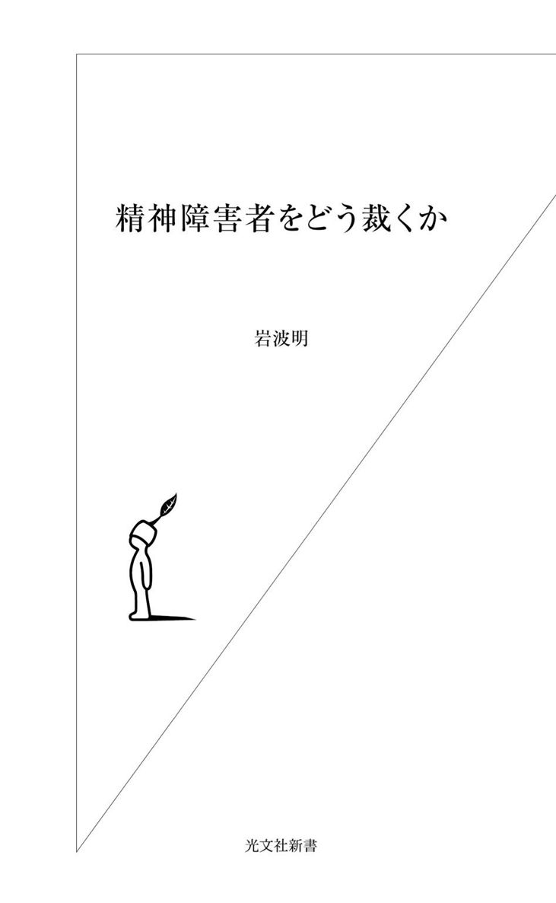
最近、新聞などの事件報道の記事において、「責任能力」という言葉をみかけることが多くなった。殺人などの重大事件に関しても、加害者が「心神喪失」と認定され、刑事的な処罰を受けないことがしばしば報道される。
そもそも、加害者が精神障害者であった場合、どうして刑罰が減免されるのか。多くの国民は疑問を感じていると思う。
精神障害者による重大事件が起きると、いっとき、この問題はセンセーショナルに報道される。それは「危険な」患者を野放しにするなという議論のこともあれば、犯行の異常性を事細かに伝えるセンセーショナルなものであったりもする。実際、一見したところ常識では理解しがたい事件において、精神障害者が関与していることが少なくない。
しかし、こうした興味はたいてい一過性で、根本的な司法や医療のシステムの問題が議論されることは、これまで十分にはなかった。
精神科の医療においても、同様の事情がみられている。犯罪を犯した精神障害者（触法精神障害者）の処遇は長い間改善がみられず、この問題自体がタブーとして放置されてきた。彼らに対する特別なケアやフォローアップは、最近までまったく行われていなかった。重罪を犯した患者をなぜ一般の精神科病棟で扱わなければならないか、多くの医療関係者は疑問に思っていたことと思う。
本書は、「心神喪失」「心神耗弱」を規定した刑法三九条と、それに関連する触法精神障害者の処遇の問題について解説したものである。
第一章においては、精神障害者による犯罪の実態について触れ、続く第二章では、触法精神障害者の処遇の歴史について述べた。第三章および第四章においては、触法精神障害者の処遇と治療について規定した法律である「精神保健福祉法」と「医療観察法」に関して、その概略を解説した。さらに続く第五章と第六章においては、刑法三九条に対するさまざまな異論について概観するとともに、現行の精神鑑定の問題点についても触れている。
触法精神障害者の問題は、突き詰めれば、行政システムの問題であり、社会福祉の問題である。本書が精神障害者の医療や福祉にかかわる方の一助になれば幸いである。
本書の執筆にあたっては、光文社新書編集部三宅貴久氏にたいへんお世話になりました。ここに感謝の意を伝えます。また本書に記載された患者さんたちの名前や病歴などは、本人を特定できないように改変している場合があることをお断りしておきます。
目 次
精神障害と犯罪の問題について論じる前提として、精神疾患について具体的なイメージをお持ちでない読者のために、精神障害とはどのような病気あるいは状態を指しているか、さらにそれぞれの精神障害において法律的な責任能力の問題はどう考えられているかという点について、一般的な見解を述べておきたい。
精神障害という言葉の他に、精神疾患という言い方もある。この二つの用語はほぼ同義であるが、「精神疾患」という場合は医療において用いる場合が多く、「精神障害」は通常福祉や司法関係で用いられる。
精神疾患の診断名（病名）は、同一の疾患に対していくつかの「呼称」を持つ場合が多い。歴史的、伝統的に通常使用されている診断名を「従来診断」と呼ぶのに対して、後述する国際的な診断基準に基づく診断を「操作的診断」と呼んでいる。
表１には、伝統的な精神疾患（従来診断）の分類について示した。精神障害は大きく三つのカテゴリーに分類されている。
表1 伝統的精神医学の分類(Huber)
Ⅰ．身体に基盤のある精神病
１．原発性の脳の疾患
進行麻痺
他の炎症性脳疾患
脳外傷
脳血管性障害
老人性疾患
系統性萎縮
脳腫瘍
てんかん
２．脳にかかわる内科疾患
Ⅱ．内因性精神病
精神分裂病
躁うつ病
Ⅲ．正常からの偏倚
異常な人格（性格異常）
異常な体験反応と発展（神経症）
異常な知的な素質（知的発達遅滞）
異常な衝動（性的偏倚）
嗜癖（アルコールや薬物依存）
「身体に基盤のある精神病」とは、脳の疾患あるいは全身疾患により精神障害が発症するものを指す。「内因性精神病」とは、なんらかの脳機能障害が原因と推定され、特有の症状と経過がみられるが、その原因が解明されていない疾患群である。「正常からの偏倚」に含まれるものは、人格や発達の異常と反応性の精神障害で、これらは正常からの量的な異常であり、質的な差異はないとみなされていた。
一方、わが国の『犯罪白書』（法務省法務総合研究所編）においては、精神障害は従来診断に基づいて次のように定義されている。
「精神障害者」とは、統合失調症、中毒性精神病、知的障害、精神病質及びその他の精神疾患を有する者をいい、精神保健指定医の診断により医療及び保護の対象になる者をいう。
統合失調症とは、以前は精神分裂病、あるいは単に分裂病と呼ばれていた疾患で、もっとも一般的な「精神病」である。統合失調症は生涯にわたる有病率が約一％みられる疾患である。つまり一〇〇人に一人が罹患する一般的な病気である。重症例においては長期の入院が必要な例も多く、日本においては常時二〇万人あまりの統合失調症患者が精神科病院に入院している。
中毒性精神病とは、アルコールや覚醒剤などの薬物によって精神病を発症したものを指している。わが国においては覚醒剤の乱用が後を絶たず、その使用による精神障害の問題が大きい。覚醒剤を使用すると一過性に気分の高揚や爽快感を認めるが、幻聴や被害妄想などを伴う精神病を誘発する頻度が高いことが知られている。
知的障害とは、精神遅滞、あるいは精神発達遅滞のことで、以前は精神薄弱と呼ばれていた。通常は知能指数（ＩＱ）により診断される。
精神病質は人格の病的な状態を指しており、サイコパスともいう。最近では、反社会性パーソナリティ障害と呼ばれている概念に近い。
その他の精神疾患としては、うつ病、躁うつ病などの気分障害（感情障害）、パニック障害などの神経症、拒食症などの摂食障害などが含まれる。
精神障害（精神疾患）の分類の方法にはさまざまなものがあるが、国際的には、ＷＨＯ（世界保健機関）が作成したＩＣＤ‐10という診断基準が用いられることが多い。ＩＣＤ‐10とは、「International Classification of diseases, 10th edition revised」を略したもので、日本語では「疾病及び関連保健問題の国際統計分類 第一〇版」と訳されている。ＩＣＤには、精神障害に限らずすべての領域における疾病が含まれており、死因や疾病の有病率統計などに関する国際的な比較や学術論文において、あるいは医療機関における診療記録の管理などに利用されている。
現在使用されているＩＣＤの最新版は、一九九〇年のＷＨＯの総会で採択された第一〇版で、これがＩＣＤ‐10である。ＩＣＤは表２に示すように、二一の大分類から構成されているが、精神疾患はこの中で、「５ 精神および行動の障害」に含まれている。
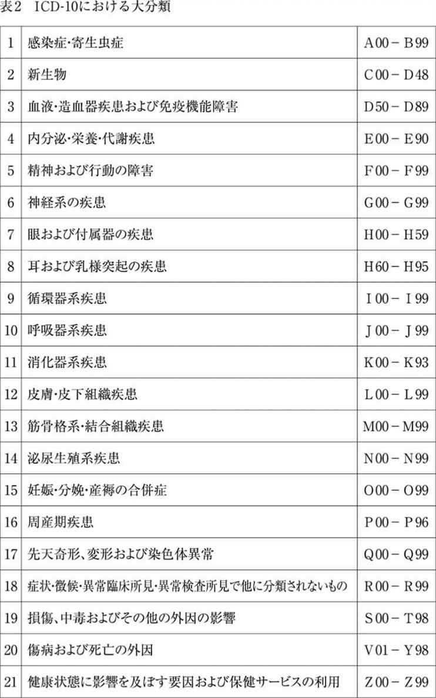
さらに、ＩＣＤ‐10において、精神疾患は、Ｆ０からＦ９まで、一〇のサブカテゴリーに大別されている（表３参照）。この分類に従って、それぞれの疾患の概略について述べてみよう。
表3 ICD-10における精神疾患の分類
F0 症状性を含む器質性精神障害
F1 精神作用物質使用による精神および行動の障害
F2 統合失調症・統合失調型障害および妄想性障害
F3 気分（感情）障害
F4 神経症性障害・ストレス関連障害および身体表現性障害
F5 生理的障害および身体的要因に関連した行動症候群
F6 成人の人格および行動の障害
F7 精神遅滞
F8 心理的発達の障害
F9 小児期および青年期に通常発症する行動および情緒の障害
Ｆ０「症状性を含む器質性精神障害」とは、身体的な疾患による精神障害である。この中には、全身疾患が原因である「症状性精神障害」（あるいは「症状性精神病」）と、脳疾患が原因である「器質性精神障害」（あるいは器質性精神病）を含んでいる。
症状性精神障害の原因としては、内分泌疾患、膠原病などが知られている。また器質性精神障害としては、痴呆性疾患（認知症）の他、脳の変性疾患や感染症、頭部外傷、脳腫瘍などが原因となる。
Ｆ１「精神作用物質使用による精神および行動の障害」は、アルコールおよびさまざまな薬物による精神疾患である。その内容は多彩で、単なる乱用によるものから、依存症、精神病に至るものまで含んでいる。
Ｆ２「統合失調症・統合失調型障害および妄想性障害」は、統合失調症とその関連疾患である。
Ｆ３「気分（感情）障害」は躁うつ病およびうつ病とその関連疾患である。
Ｆ４「神経症性障害・ストレス関連障害および身体表現性障害」は、従来の診断基準における心因性疾患に相当するものであり、神経症圏の疾患が含まれている。代表的なものがパニック障害である。
Ｆ５「生理的障害および身体的要因に関連した行動症候群」は、拒食症・過食症などの摂食障害、不眠症・過眠症などの睡眠障害などを含むものである。
Ｆ６「成人の人格および行動の障害」は従来の人格障害に相当するもので、最近ではパーソナリティ障害と呼ばれている。さらにこのカテゴリーには、「病的賭博」「放火癖」などの「習慣および衝動の傷害」「性同一性障害」「性嗜好障害」などの疾患も含まれている。
Ｆ７「精神遅滞」は、前述した知的障害に相当している。精神遅滞は知能の程度に応じて、軽度から最重度に分類されている。
Ｆ８「心理的発達の障害」は「学習障害」と自閉症などの「広汎性発達障害」を含むカテゴリーである。広汎性発達障害に含まれるアスペルガー症候群は、知能は正常で社会性のみが障害された疾患として、犯罪との関係の面からも注目されている。
Ｆ９「小児期および青年期に通常発症する行動および情緒の障害」は、「多動性障害」「行為障害」「チック障害」などを含むカテゴリーである。（第四章へ戻る）
以上、ＷＨＯによるＩＣＤの基準について述べた。これとは別に、アメリカ精神医学会の定めたＤＳＭ（精神疾患の分類と診断の手引）という診断基準がある。現在はその第四版が使用されているが、ＩＣＤと並び公式の診断基準としてよく用いられている。
殺人事件など重大な犯罪を犯した精神障害者を、健常者と同じように罰することができないのはなぜだろうか。どうして精神障害を伴う犯罪者は、犯罪を犯していることが明らかであっても裁判において無罪となり、刑務所に入ることはないのか？ 多くの一般国民は、このような疑問を感じていることと思う。
この問題については、さまざまな議論がある。論者の意見も、その立場によって大きく異なっている。
現行の司法制度においては、加害者が精神障害者であり、その病気の症状によって自分の行為の善悪に関して適切に判断する能力、およびその判断に従って自分の行動をコントロールする能力が失われている場合には、刑罰を科さない、つまり無罪となることが定められている。
法律的には、この「自分の行為の善悪に関して適切に判断する能力」のことを「弁識能力」と呼び、「その判断に従って自分の行動をコントロールする能力」を「制御能力」と呼ぶ。この弁識能力と制御能力を合わせたものが「責任能力」である。
通常、健康な人間はこの責任能力を備えている。したがって、自分の犯罪行為が悪いことと判断し、その判断に従って犯罪を行うことをやめることができるはずである。それにもかかわらず犯罪を行った場合には、司法によって刑罰が科せられる。
一方、精神障害によってこの責任能力が欠けている場合、責任能力がない（責任無能力）と判断され無罪となる。
最高裁判所は一般の人への配布用に作成した「統合失調症と責任能力」という資料の中で、次に示すケースを責任能力がない典型的な症例として提示している。その部分を引用してみる。
世の中には、自分ではどうすることもできない精神の病気や知的障害があるために、何が良いことか、悪いことか判断することができず、また、ある程度そのことが判断できたとしてもそれに従って自分の行動をコントロールすることができないで、犯罪を行ってしまう人がいます。
例えば、統合失調症という精神病がありますが、その病気のために、ある人に殺されるという強固な妄想に支配され、「お前を殺してやる」というような幻聴も聞こえ、自分を守るためにはその人を懲らしめるしかないと追い詰められ、その人に危害を加える行動に出ることがあります。このような場合、その精神病に基づく妄想等に支配されているため、自分の行為が悪いことだと判断することができないか、又は、妄想等に追い詰められ他の行動を選択できず、自分の行動をコントロールすることができない状態にあると考えられます。
この精神障害者の責任能力に関しては、刑法三九条で規定されている。刑法とは、犯罪とそれに対する刑罰について定めている法律である。
次に、この刑法三九条について見てみよう。
刑法三九条は、次のように述べている。
一 心神喪失者の行為は罰しない。
二 心神耗弱者の行為はその刑を減軽する。
この「心神喪失」あるいは「心神耗弱」という用語はわが国独自の法律用語であり、内容的にわかりづらい点が多い。
心神喪失とは、精神障害によって理性的な判断ができない状態、および理性的な判断によって行動することができない状態をいう。つまり前述した「責任能力がない（責任無能力）」状態である。心神喪失においては、刑法上その責任を追及することができないために、刑事裁判では無罪の判決が下る。
また心神耗弱は、心神喪失ほどでないにしろ、理性的な判断をする能力、あるいは理性的な判断によって行動する能力がかなりの部分失われている状態である。これを限定責任能力と呼ぶ。心神耗弱においては、刑罰が減刑される。
諸外国では心神喪失、心神耗弱という概念は存在していないが、多くの国において、精神障害による刑罰減免の制度は古くから採り入れられている。
たとえば、ドイツの一八七一年の刑法においては、次のような記載がある（『司法精神医学 １』 松下正明監修 中山書店）。
「行為の当時において意識喪失または精神活動の病的障害の状態にあり、自由な意思決定が阻却される時、罪となるべき行為は存在しない」
わが国においては、心神喪失、心神耗弱の概念は、現在の最高裁判所の前身である大審院における一九三一年の判決によって初めて明示された。
「心神喪失と心神耗弱とはいずれも精神障害の態様に属するものなりといえども、その程度を異にするものにして、すなわち前者は精神の障害により事物の理非善悪を弁識する能力なくまたはこの弁識に従って行動する能力なき状態を指称し、後者は精神の障害いまだ上叙の能力を欠如する程度に達せさるも、その能力著しく減退せる状態を指称するものなりとす」
現実には、加害者が明らかな精神障害者である場合には、検察官が起訴をせず、公開された裁判まで至らないことが多い。
それでは、精神障害のため検察官が不起訴とした例、あるいは裁判によって心神喪失と判断された加害者の場合、その後どういう扱いを受けるのであろうか。
犯罪を犯した精神障害者を「触法精神障害者」と呼ぶ。この名称は、とくに殺人などの重罪を犯した者に対して用いられることが多い。
これまで日本においては、心神喪失などと判断され司法システムによって裁かれない触法精神障害者の多くは、直接一般の精神病院に移送されることが多かった。この場合、大部分が「措置入院」という扱いになっている。これは、後述する精神保健福祉法によって規定されている入院制度である。措置入院のための必要な条件は、他人に危害を加えたり、自殺をする危険が大きいというものである。
しかし、措置入院はあくまで「医療的」に強制入院が必要とされる制度であり、刑罰ではない。したがって入院期間の規定もなく、年余にわたって入院が継続される場合もあれば、ごく短期間で退院することも可能である。それらは、すべて担当医の判断に基づくものとなる。
措置入院となった患者が短期間で退院することも、実際に見られている。退院後の強制的なフォローアップの仕組みはなく、外来治療を継続するかどうかは患者本人に委ねられている。
このため、入院治療によっていったん精神症状が回復した触法精神障害者が、治療の中断によって再び症状を悪化させ、以前と同様の事件を引き起こす例も存在している。この点については、以前から一部の論者によって、「危険な精神障害者を野放しにしている」とさかんに非難されることが多かった。
たとえばノンフィクション作家の保阪正康は「通り魔野放し人権天国での自衛」（『新潮45』一九八八年）という小論において、当時改正された精神保健法（現在の精神保健福祉法の前身）により危険な精神障害者が簡単に社会復帰するため、通り魔的な殺人が増加する危惧を指摘した。
保阪はその典型的な例として、精神病院に入退院を繰り返し一七回の検挙歴のある男性が、朝のホームで見知らぬ女性を突き落とし死亡させた事件をあげている。
六月二一日朝、出勤途中の女性が、精神病歴があり、精神病院の外泊許可を得て職さがし中の男（四〇歳）にいきなり後ろから突き落とされ、電車にはねられて死亡している。朝のホームは、まだラッシュアワーの時間帯で数百人の客が列をつくって電車を待っていた。男は酒に酔いながらホームを歩き女性をからかっていたが、電車がはいってくると、「一人殺すも二人殺すも同じだ」とつぶやきながらその女性を突き落としたというのである。ホームはパニック状態になった。
この男は、例によって「人権尊重」のためにＡという仮名で報道された。これまでに一七回の検挙歴があり、前科一二犯だったというのにである。
このように、精神保健福祉法では触法精神障害者に対して不十分な対応しかできなかったのであるが、この問題を解決するものとして最近になって制定されたのが、医療観察法である。
「医療観察法」（正式名称は、「心神喪失等の状態で重大な他害行為を行った者の医療及び観察等に関する法律」）は二〇〇五年（平成一七年）に施行され、それ以降は、触法精神障害者に関するシステムが大きく変更になった。心神喪失あるいは心神耗弱と認定され実刑が科せられない加害者は、裁判官と精神科医の合議によって新しく開設された指定病院に入院する制度が作られたのである。
この指定病院における入院システムは、欧米、とくにイギリスの司法精神医療をモデルにしたものであり、医療スタッフの数や病棟の設備の面において、手厚い体制がとられていることが特徴である。
もっとも、重罪を犯した精神障害者に対するこのような管理的な司法システムについては、批判も多い。かつては、触法精神障害者に対する特別な処遇は、不当な長期拘禁を招くという批判が人権派の弁護士などによって唱えられた。現在でも日弁連は、医療観察法について、同じような観点から批判している。
医療観察法の詳細については、後に章を改めて述べる。
それでは、精神障害者による犯罪はどの程度の頻度で起こっているのだろうか？
前述したように一部の論者は、危険な精神障害者が社会の中で「野放し」にされていると主張している。はたして精神障害者による犯罪は、頻発しているのか。ジャーナリズムにおいては、しばしば精神障害者の犯罪がセンセーショナルに報道されているが、現実に大きな問題なのであろうか。
この点を検討するには、実際の犯罪に関するデータを参照する必要がある。
犯罪に関する基礎的なデータとなるものは、法務省が編集している『犯罪白書』である。『犯罪白書』は、犯罪の防止と犯罪者の改善更生を目的として、年度ごとに犯罪の情勢と犯罪者処遇の実情を報告するとともに、特に刑事政策上問題となっている事柄を紹介している。『犯罪白書』の中には、「精神障害のある犯罪者」という一節がもうけられており、精神障害者の犯罪について資料を提供している。
平成一九年度の『犯罪白書』によれば、平成一八年における一般刑法犯（交通関係犯罪を除いた刑法犯）の検挙人員の総数は、三八万四二五〇人であった。その中で「精神障害者および精神障害の疑いのあるもの」（「精神障害者等」）は二五四五人であり、全体の〇・七％である。
総人口に占める精神障害者の割合について正確なデータは存在していないが、平成一九年度版『障害者白書』（内閣府）によれば、精神障害者の総数は三〇二万八〇〇〇人になる。これは日本の総人口の、約二・四％に相当している。したがって前記の〇・七％という数字は、犯罪全体で見るならば、精神障害者が加害者となる比率は健常者よりも低いことを示している。
表４に平成九～一八年における「精神障害者等」の一般刑法犯検挙人員に占める割合の推移を示した。この期間において、検挙された精神障害者等の数は若干の増加を示している。しかしながら、全体に占める精神障害者の比率は、〇・六～〇・七％で、あまり変動がみられていない。
少し時代をさかのぼってみよう。平成元年においても、精神障害者等の検挙人員は二二三五人で、総検挙者に対する比率は〇・六％で現在とほぼ変わらない。この結果は、犯罪全体としてみるならば、精神障害者が犯罪を犯す可能性は一般人よりも小さいことを示している。
しかし、ここに数字のマジックがある。すべての犯罪を含めた総検挙者の中の比率という視点で検討するならば、精神障害者が犯罪を犯す確率は必ずしも高くない。しかし、犯罪の罪状ごとに個別に検討すると、まったく異なった結果が得られるのだ。
表５（精神障害者等の一般刑法犯罪名別検挙人員）には、平成一八年における罪名ごとの検挙人員総数とその中に占める「精神障害者等」の比率を示した。この表からわかるように、「殺人」（九・六％）、「放火」（一五・二％）において精神障害者等の比率は極めて高い。これに対して「窃盗・詐欺・横領」は〇・四％と低率である。
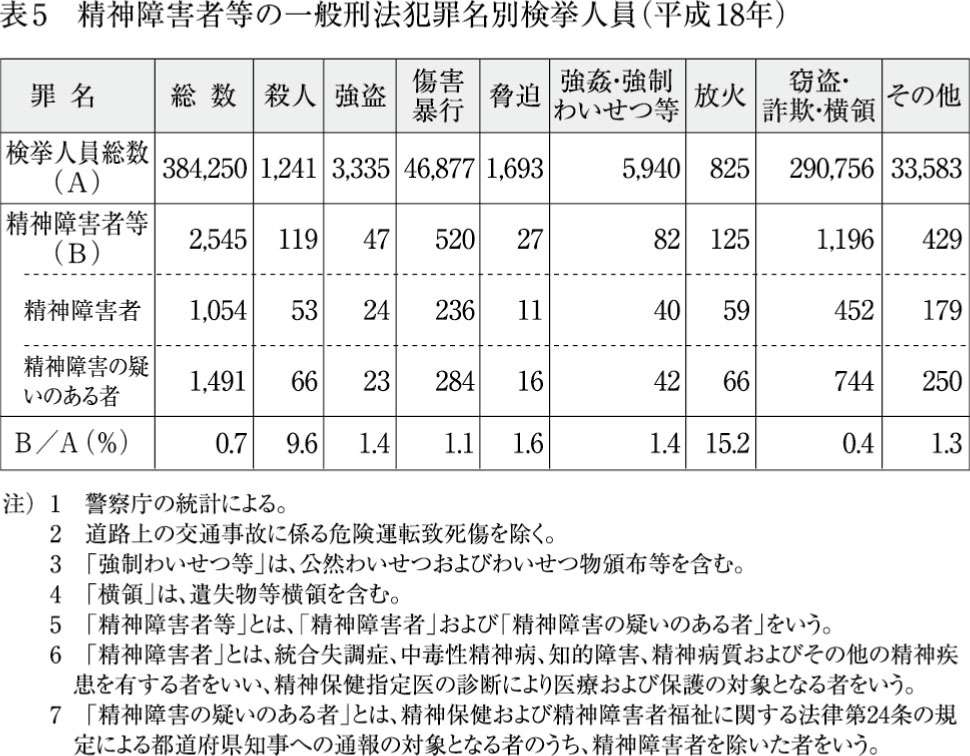
こうした数字は、最近になって高率となったものではない。平成元年のデータにおいても、精神障害者等の占める割合は殺人において九・四％、放火において一九・五％と高い割合を示している。以上の結果は、殺人、放火などの一部の重大な犯罪の加害者として精神障害者が高率で見られることを示している。
次の表６には、最近一〇年における殺人事件の検挙者に占める精神障害者の比率を示した。表に示すように、精神障害者の占める比率は九％前後でほぼ一定の値を示している。
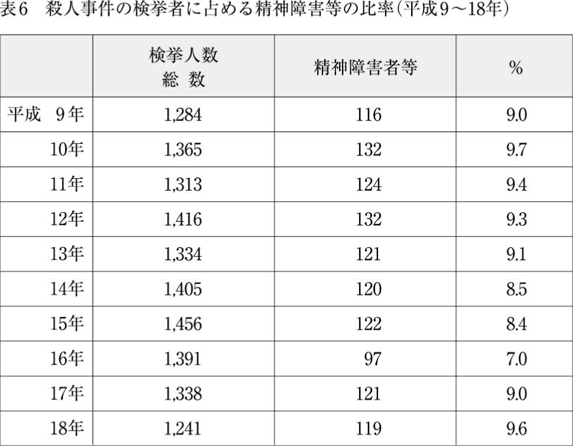
これらの資料から、殺人などの重大犯罪の加害者においては精神障害者の比率は大きく、犯罪の予防や再犯の防止という観点からも、あるいは重罪を犯した精神障害者の治療という側面からも、精神障害と犯罪の問題に関して議論を深める必要性があることが理解されると思う。
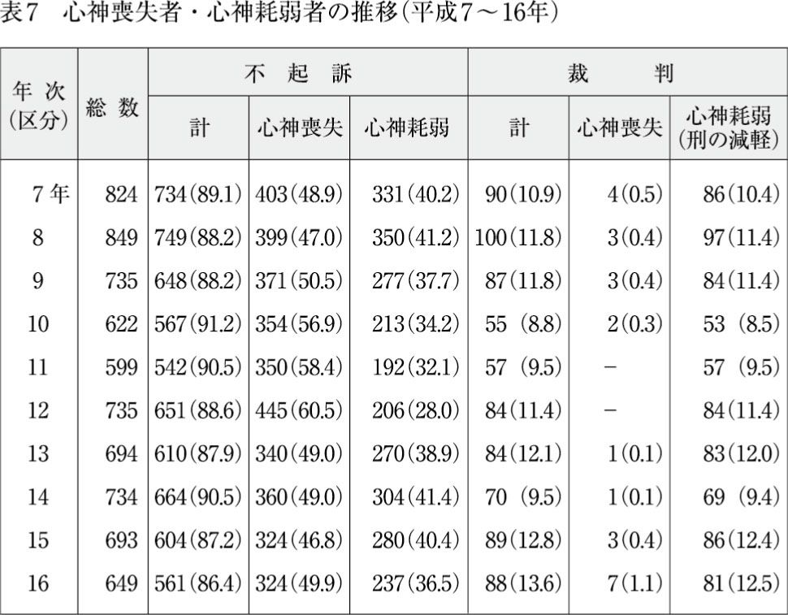
平成一六年における「精神障害者等」の検挙人員は二二八八人（総検挙人員の〇・六％）であった（表４）。したがって、全体の二八・四％が心神喪失あるいは心神耗弱と認定されたことになる。
次に、罪名と心神喪失、心神耗弱の関連を検討した結果を表８に示した。これは平成一六年のデータである。
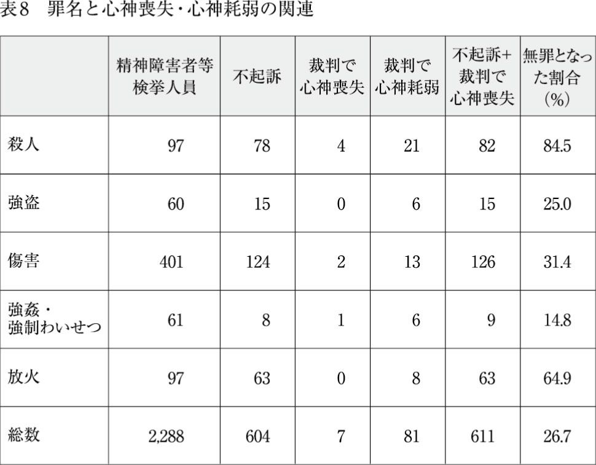
表からわかるように、「精神障害者等」の検挙人員のうち、「殺人」においては八四・五％、「放火」においては六四・九％の被疑者が不起訴ないし無罪となっている。この数字が意味しているのは、重罪を犯した触法精神障害者の多くが、司法的なコントロールをまったく受けていなかったということである。
言葉を替えて言えば、殺人、放火など反社会性の高い重大な犯罪を犯した精神障害者ほど、病気としての病状が重いものが多く、犯行に関する責任能力がない、あるいは責任能力が不十分であると判断されているということである。
触法精神障害者が心神喪失、心神耗弱と認定されるには、二つの流れがある。
第一として、検察の段階で不起訴になる場合である。この場合には、簡易鑑定と呼ばれる簡略な精神鑑定が施行されていることが多い。簡易鑑定の結果、裁判を行っても心神喪失と判断される可能性が大きいと検察が判断した場合、公開の裁判には持ち込まれない。被疑者は「心神喪失」あるいは「心神耗弱による不起訴、起訴猶予」という扱いとなり、前述した精神保健福祉法による措置入院のルートにのるか、最近施行された医療観察法による手続きが行われることとなる。
第二のケースとしては、裁判において心神喪失あるいは心神耗弱という判断が下される場合である。これは前者と比べると、その割合は非常に少ない。なぜなら前述のように、被疑者の精神障害によって心神喪失等の判断が下される可能性の大きい場合には、検察は被疑者を起訴することを避ける傾向が強いからである。日本の検察の体質として、「起訴した事例は必ず有罪にしなければならない」という不文律があり、有罪率を上げるために起訴を見送ってしまうのである。
ここで精神障害と犯罪に関して、主として殺人事件に関する海外のデータをいくつか参照してみよう。
日本と海外、特に欧米の先進国とでは、かなり異なる状況にある。国や地域によって司法システムが異なることはもちろんであるが、それに加えて次の点が指摘できる。
精神障害と司法との関連について扱う学問の領域を「司法精神医学」と呼んでいるが、日本の司法精神医学は海外と比べると大きな後れをとっている。海外の先進国と比較すると、日本では司法精神医学の関連する医療分野（これを司法精神医療と呼ぶ）において、未整備の部分が少なくない。
一方欧米では、精神疾患の法的側面を扱う司法精神医学が長い歴史を持っている。このため、司法精神医療の専門施設も数多い。
イギリスで犯罪性の精神障害者の専門病院であるブロードモア特殊病院が建設されたのは一八六三年であるが、日本はまだ江戸時代であった。さらに遡れば、世界最古の精神病院であるイギリスのベスレム王立病院においては、一六世紀ごろより触法精神障害者の収容を担当していた。
また欧米の大学においては、「司法精神医学」が「精神医学」から独立した講座となっていることが多く、司法精神医学の教授が存在している。しかし日本では医学部に司法精神医学の講座はなく、真の専門家がいるとは言えない。
したがって司法精神医学の領域において、データの信頼性は海外のものの方がはるかに高い。欧米の司法精神医学の領域においては、司法関係者と医療関係者が協力して、データの収集や解析にあたっているのが普通だからである。これに対して日本の法務省はデータの開示に前向きでなく、現状の把握が困難な場合が多い。
次に紹介するのはイギリスにおけるデータである。イギリスの場合は犯罪に関するデータは内務省の管轄であり、触法精神障害者の処遇の決定や治療については、内務省から委託された司法精神医学の専門家が行っている。
マンチェスター大学のショーらは、一九九六年から一九九九年にかけての三年間において、イングランドとウェールズで起きたすべての殺人事件の加害者について、精神疾患の有無と重症度について調査を行った。イギリスでは各地域の独立性が高く法制度や行政システムが異なるため、スコットランドと北アイルランドは別に処理され、統計的な資料はイングランドとウェールズを合わせたものが提示されることが多い。その結果を次の表９に示した。
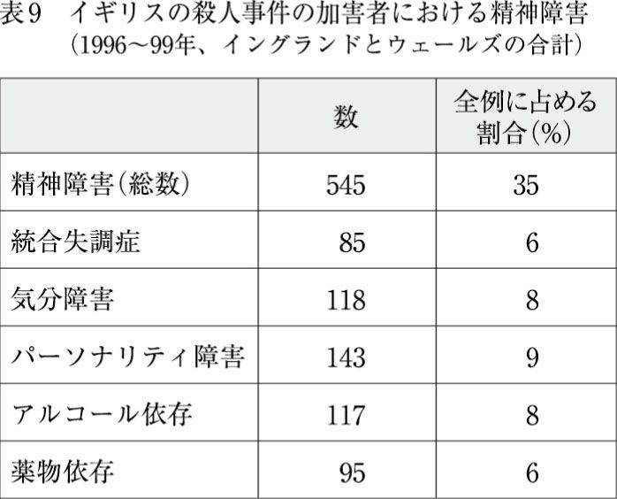
この三年間における殺人事件の検挙者の総数は一五四九例であった。ここでいうイギリス法における殺人（homicide）は、法律的には「謀殺」（murder：事前に犯意を持って人を殺すこと）と「故殺」（manslaughter：被害者の側から自制心を失わせる程度の挑発があったもの、および事前の犯意なく人を殺した場合）の両者を含んでいる。「故殺」は日本における「過失致死」を含む概念である。
この研究のデータから計算すると、イギリスにおける年間の殺人事件の件数は平均五一六件で、人口一〇万人あたりの殺人事件の件数は〇・九三件となる。日本においても同様の計算を行うと人口一〇万人あたりの件数は〇・九七件となり、イギリスと日本の殺人事件の発生頻度には大きな差はないことがわかる。
精神障害との関連においては、対象者一五四九例において、その三五％になんらかの精神障害がみられた。これは生涯を通じて、精神疾患がみられた比率を指している。
主なものとしては、統合失調症六％、気分障害（うつ病および躁うつ病と関連疾患を合わせて気分障害と呼ぶ）八％、パーソナリティ障害九％などであった（イギリスにおいては、パーソナリティ障害でも責任能力がないと認定されることがあるため、この統計に含まれている）。
また犯行時において病的な精神状態がみられたものは一六四例、全体の一〇％であった。この結果は、残りの二五％の加害者においては、犯行時は精神障害は寛解状態にあったことを示している。
殺人事件の加害者の三五％に精神疾患がみられるという結果は、わが国におけるデータと比較すると非常に高率である。パーソナリティ障害を除外しても、殺人事件の加害者の二割以上になんらかの精神疾患がみられるということになる。
さらに海外のデータを参照してみよう。まずフィンランドでのエローネンらの研究を示す。
フィンランドにおいては、一九八四年から一九九一年の八年間において、一〇三七件の殺人事件が発生した。人口一〇万人あたりの殺人事件の件数は二・五八件で、日本やイギリスよりかなり高率である。これらの事件の加害者の中で、未解決のものを除く、九九四例（男性九一〇例、女性八四例）の詳細な精神医学的な検討が行われた。
その結果、対象者の中で高い比率でみられた精神疾患は、統合失調症（男性六・四％、女性六・〇％）、反社会性パーソナリティ障害（男性一一・三％、女性一三・一％ ※注 これはイギリスにおけるパーソナリティ障害とほぼ同一の障害と考えられる）、およびアルコール依存（三九・二％、女性三二・一％）であった。これに対して気分障害、不安障害（パニック障害、ＰＴＳＤなど）の比率は高くなかった。
さらにエローネンらは、フィンランドの一般人口における精神障害の有病率との比較を行い、前記の三つの疾患（統合失調症、反社会性パーソナリティ障害、アルコール依存）は殺人事件を起こすリスクを高率にすることを統計学的に示した。
次はニュージーランドにおける研究である。シンプソンらは、一九七〇年から二〇〇〇年までの三〇年間における、ニュージーランドの殺人事件と精神障害の関連について調査を行った。
この期間において殺人事件の加害者は総数一四九八例であり、その八・七％が精神障害者（定義はイギリスと同じ）であった。この研究において個別の精神障害に関するデータについて述べられていないが、興味深い点は時系列的な変化である。すなわち、一九七〇年においては全体の一九・五％が精神障害者であったが、二〇〇〇年においては五％と著明な低下がみられている（図１参照）。
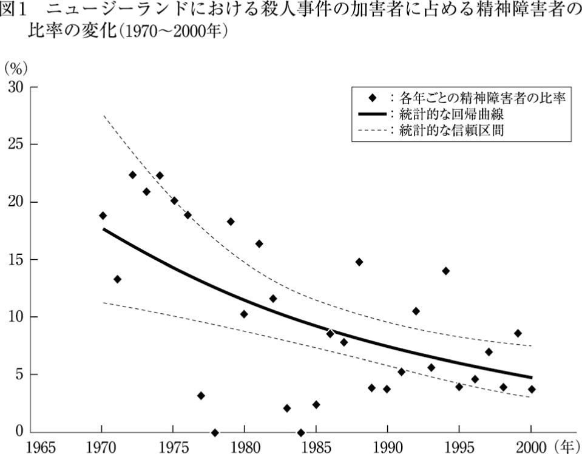
一方、次に紹介するスウェーデンにおける研究では、殺人事件の加害者における精神疾患の比率は極めて高いものになっている。ファゼルらは一九八八年から二〇〇一年にかけての殺人事件の加害者における精神障害について調査を行った。
詳細な記録が得られたケースは一六二五例であったが、その約九〇％において何らかの精神疾患が認められた。この研究では、軽症の精神疾患も含めたため、このような高率の数字が出てきたものと思われる。精神病性の障害（幻覚・妄想などがみられる統合失調症や躁うつ病の一部を指す）は全体の二五・二％でみられ、その中で統合失調症は一一％であったとしている。表10にファゼルらの研究における精神科診断の内訳を示した。
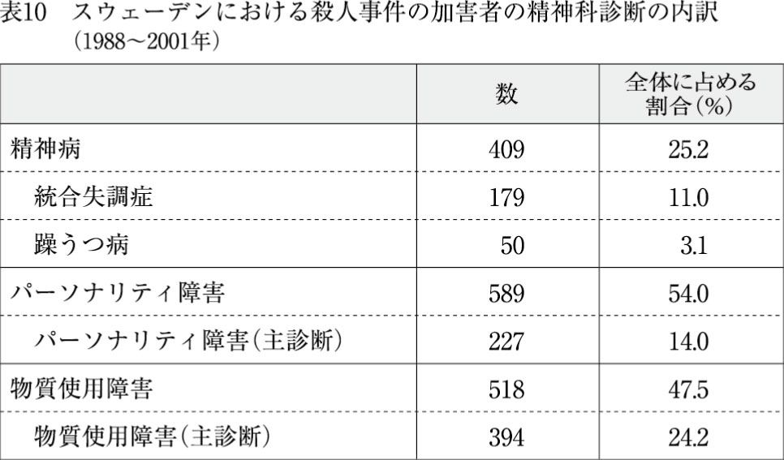
このように研究によって精神障害の比率にかなりのばらつきはみられるが、これは地域の違いや研究方法の差などによるものであろう。いずれにしても、殺人事件の加害者の少なくとも一〇％程度、多く見積もれば二〇％以上において精神障害が存在していると考えられる。これは決して見過ごせない数字である。
精神障害には多くの種類が存在しているが、すべての疾患において責任能力が問題とされるわけではない。
一九八〇年代までは、精神障害の種類に従って責任能力の有無がほぼ自動的に判定される傾向があった。たとえば、加害者が統合失調症であった場合、その病状にかかわらず、責任能力がないとみなされることが多かった。
責任能力を判定するためには、被疑者に「精神障害が存在している」という医学的、生物学的要因に加えて、「行為の是非を弁別し、これに従って行為しうる能力が失われた」という心理的な要因も併せて検討することが必要である。後者の心理的要因に関しては、それが精神鑑定によって判断可能なものかどうかという論争が長く行われてきた。
その判断が不可能であるという立場を「不可知論」と呼ぶ。不可知論の支持者は、「心理学的要因、すなわち自由意志の有無についての判断は不可能であり、鑑定人は生物学的要因を証明しうるにすぎない」と主張している。
一方で心理的な要因の判断が可能であるとする「可知論」の立場に立つものは、行為時の精神症状の分析から、判断能力や制御能力がどの程度障害されているのか知ることはできると主張した。
従来は不可知論の立場が優勢であり、被疑者の心理的要因を考慮することなく、個々の精神障害ごとに責任能力が定められた。これが「慣例」と呼ばれるものである。具体的に記すと、次のようになる（診断名は従来診断で述べられている）。
１．統合失調症、躁うつ病などの重大な精神病においては、診断さえ確立されれば、あらゆる行為に対して責任無能力が肯定される。
２．頭部外傷、動脈硬化、老年変化、精神遅滞、飲酒嗜癖などによる精神障害のように、障害の程度に量的な差が示される場合には、障害の程度と犯行との関連に基づいて、情状酌量、限定責任能力、責任無能力のいずれかが容認される。
３．精神病質や神経症者のように器質性の障害を有しないものにおいて原則として完全責任能力が認められ、ごく例外的な事例に対してのみ限定責任能力が認められる。責任無能力が認められるのは、精神病質反応が心因精神病の範囲にまで亢進したような、非常にまれな事例に限られる。（『司法精神医学 ２』 中山書店）
つまり「慣例」においては、統合失調症、あるいは躁うつ病と診断されれば、犯行時にどのような精神状態であろうと、責任能力はまったくないという判断が下されたことになる。
ここで述べられている診断名は従来診断のため、現在用いられているＩＣＤ‐10などによる病名とは若干の違いがある。多少補足を加えると、第二項に述べられているのは器質性の精神疾患およびアルコール関連疾患である。第三項では、パーソナリティ障害と神経症について記されている。これらの精神障害における責任能力の考え方は、現在と大きな差はない。
しかしながら、第一項に関しては、近年「慣例」に関して否定的な見方が次第に強くなってきている。たとえば統合失調症と一言でいっても、その病状は個人個人千差万別である。精神病院に長期入院しているケースもあれば、健常者と変わらない社会生活を送っている例も少なくない。したがって個々の症例ごとに、犯行時の精神症状や行動を十分に検討し、責任能力の有無を検討すべきであるという考えが現在では優勢になってきている。
それでは実際にどのような症例が心神喪失と診断されるのか、具体的な症例をあげてみよう。
次のケースは、犯行時二二歳の統合失調症の症例である。内田孝さん（仮名）は入居していたアパートの持ち主で同じ屋敷の中に住む九五歳の老人とその六一歳の娘、隣家の主婦四四歳とその幼児二名（四歳と一歳）を刺殺した。
私自身松沢病院で一時内田さんの担当医となったが、犯行時の精神鑑定は当時松沢病院の院長であった秋元波留夫博士が行っている（この症例については、拙著『狂気という隣人』（新潮文庫）の中で経過の一部を紹介した。また以下に述べる精神鑑定の内容については、『刑事精神鑑定講義』（秋元波留夫 創造出版）から引用した）。
次は内田さんの犯行についての新聞記事である。
六日午後、東京Ｓ区の住宅街で、Ｎ大生が下宿先の父娘二人を文化包丁で惨殺、隣家にも押し入り、母子三人を殺害するという大惨事が起きた。（中略）Ｎ大生は「下宿のテレビの音と、隣の家の子供の声がうるさいので、十日前から文化包丁を買って殺害の機会をねらっていた」と犯行動機を自供した。（読売新聞 一九八二年一〇月七日）
事件直後に内田さんは警察に逮捕されたが、彼が話す犯行の動機が異常であるとして、起訴の前に精神鑑定を行うことになった。
内田さんは都内Ｋ市の生まれである。小児期の発育に、特別問題はなかった。小学校の記録においては、「いつも落ち着いている、真面目」などと記載されている。両親の記憶においても、明るい性格で近所の友人とよく遊んでいたという。
高校入学に際して、内田さんは希望校に入学できず不満が強かった。学校に慣れてくるにつれ次第に彼は落ち着きを取り戻した。しかし一年の終わり頃から彼の行動に変化がみられた。入学当初は比較的明るくひょうきんなところもみられたが、次第に不活発で気力に乏しく、勉強に身が入らなくなった。また三年になると、自分の体が嫌な臭いを発しているという自己臭恐怖症の訴えがみられるようになった。
高校卒業時、彼は大学受験に失敗し自宅で浪人となったが、一浪後Ｎ大学二部に合格し入学した。内田さんは大学の授業には出席していたが、その他は無為に過ごすことが多かった。大学でも彼は孤立しており、友人らしい友人はほとんどいなかった。
事件の約一年前、内田さんは突然犯行の舞台となった下宿に引っ越した。実家は通学に不便だからというのが、その理由だった。引っ越した直後から、彼は隣室の住人と騒音のことでトラブルを起こした。内田さんは隣人に対して、「床がミシミシ音を出して眠れない。お前はわざと音を出しているのではないか」と非常に興奮して、今にもなぐりかかろうとすることがあった。これ以降も内田さんから同様の訴えが続くため、薄気味悪くなった隣室の学生は下宿を移っている。
以後、内田さんの攻撃対象は大家一家（北条家）に変わった。大家の一家が自分に嫌がらせをするために、テレビの音量を上げたり、大きな物音を立てていると感じるようになった。さらに、自転車のカゴをこわされたり、トイレにアンモニアのような異臭を放つ液体をばらまいたりされたと訴えた。隣家の住人に対しても、「雨戸の音がうるさい」と早朝から怒鳴り込んでいったこともあった。
犯行の半年あまり前、内田さんは実家にしばしば帰っていたが、精神状態は不安定なことが多かった。急に怒り出し、そばにいる家族に対して、「お前ら三人でおれをばかにしている」「とぼけるな。とぼけるようなものは人間じゃない。地獄に行け」などと怒鳴りつけたりもした。心配した家族は内田さんを精神科に受診させようとしたにもかかわらず、病院までは行ったものの彼は逃げ出してしまった。
その後しばらくの間、内田さんは無為な生活を続けていたが、夏ごろより就職の問題が近づいたため、イライラすることが多くなった。この当時の状況について、彼は次のように話している。
（隣家の寺田さんからの騒音と）、北条さんの騒音、いやがらせと一緒くたになり、私の家での生活は、夜寝る以外、安心感や休息の時間を持てなくなっていきました。（中略）このような耐え難い状態は、私が犯行に及ぶまで約一年と半年の間ずっと続きました。
彼が犯行に至ったのは、大学の就職課に出向き、そこで資料をノートに写して帰宅した直後のことだった。犯行直前の精神状態について、彼は次のように記述した。
部屋に戻って一休みしようかと腰をおろすとまた、北条さんのテレビの音が聞こえてきました。その音量はいつもより小さめでしたが、一か月程前からイライラしっぱなしの私には、神経を逆なでされたような気持ちで一杯でした。（中略）
どうしてもイライラする状態が続いていた時、ふと部屋の隅にあった包丁が目に止まり、「これでいっそのこと刺してしまおうか」と考え、手にとってみたんですが、やろうかやるまいかまだ迷っていたようです。（中略）
しかし、このままではこちらの気がおかしくなるのではとか、オーバーな言い方かも知れませんが、死んでしまうのではないかと考えておりましたので、私は北条さん宅の玄関を開けました。
この直後、内田さんは大家宅（北条家）で二名、隣家（寺田宅）で三名を殺害した。犯行を終えた内田さんは自室にもどり、血のついたズボンをはき替えた。さらに靴下を脱ぎ、手を洗ってから部屋を出ると、自首するしかないと考えて、自転車に乗って近くの交番に行き、殺人をしたと申し出たのである。
秋元氏による精神鑑定は、犯行から約二週間後に開始された。内田さんは鑑定のために松沢病院に入院した。
入院直後に内田さんは病棟の担当医に対して、「僕の部屋、空気が少ないんじゃないか、耳がおかしい」「やはり、空気が薄い感じです」「血が下肢の方から引いていくようだ」などと奇妙な身体感覚の訴えを繰り返して述べた。また病棟の保護室で興奮している別の患者に対して、何度も怒鳴りつけることもみられている。
次は鑑定人との対話である。
――君は精神病だと思うか。
「自分では正常だと思っています」
――鑑定の結果、病気、入院となったとしたらどうするか。
「いやですね。自分は病気じゃないですから」
――もし死刑ときまったらどうする。
「割り切れないけど、そうきまったら仕方がない。嫌ですけどね」
――割り切れないというのはどういうことか。
「こっちがやられたのだから、先にやられたのはこっちだから、向こうが止めてくれればよかった。向こうが早く止めるべきだったんです」
――ひとを殺すことは許されることか。
「いけないことだけど、場合によってはありえないことではないんじゃないですか、どんな人でも」
――じゃ、自分のやったことは当然だと思うか。
「ああなっても仕方がないと思います」
このように、内田さんには自らの病気についての自覚がまったくないばかりか、悪いのは被害者のほうであり、殺されても仕方がないと考えていた。警察への上申書などにおいては、「被害者の方々や遺族の方々に対して、すまないことをしてしまった、また、とんでもないことをしてしまったものだと反省している」などと、事件に対する後悔の念も記されていたが、実際のところ、被害者への申し訳ないという言葉は建前にすぎなかった。
さらに鑑定人は、家族との面会における態度、犯行現場の生々しい写真に対する反応などから、内田さんには、温かみ、愛情、同情のような感情の動きが著しく鈍い、と指摘している。
秋元氏の最終的な結論（鑑定主文）を次に示す。
（１）被疑者は当時、昭和五一年半ば頃に発症したと推定される破瓜型分裂病（思春期に発症し、慢性的に病状の進行がみられる統合失調症の亜型）による異常な精神状態にあった。犯行は当該精神病の症状である被害妄想に基づいて企図、実行されたものである。
（２）犯行により被害妄想の対象が消滅したこと及び環境の変化（入院及び薬物投与などの治療）により精神状態は比較的安定したが、破瓜型分裂病の核心症状（認知障害、思考障害、情意障害、自我障害など）は存続し、犯行の動機となった被害妄想は訂正不能である。
（３）精神障害と犯行の関係は第一項に記載した通りであり、犯行は被害妄想の所産である。被疑者が罹患している精神疾患の病状の程度から判断して、犯行時被疑者は精神の障害により是非を弁別する能力及びこの弁別に従って行動する能力の著しく障害された状態にあったものと認められる。
（４）医療的処置が行われることが望ましい。
その後、内田さんは松沢病院に措置入院となり、現在まで長期入院を続けている。病棟においても被害妄想が強くなり、他の患者に対する暴力行為がしばしばみられている。
本章においては、精神障害者による犯罪の現状と、犯罪に関する彼らの責任能力について基本的な考え方を述べた。次章においては、このような考え方が生じた歴史的背景について論じたい。
この章では、第一章でみてきた精神障害と犯罪、法をめぐる問題について、精神障害者に対する処遇の変遷について参照しながら、歴史的に振り返ってみたい。
結論から述べるとするならば、精神医学あるいは精神医療にとって、「触法精神障害者をどのように扱うか」という問題はもっとも重要な課題の一つであった。あるいは、精神医学はこの問題とともに生み出され、発展してきたといっても言い過ぎではない。
近代以前の精神障害者に対する処遇については、人道的、あるいは人権的な立場から多くの批判が浴びせられているし、現在においても精神医学や精神医療に対する問題提起はひんぱんにみられる。こうした批判は、一見するともっともなものが多いようであるが、実際は安易な議論が大部分である。
たとえば、急性期において入院患者の行動制限を行うことは、繰り返し非難の対象となっている。しかし自由に放任してしまえば、患者は治療を拒絶し、自殺などのアクシデントが起こる危険性が高くなることは明らかである。多くの批判者は、医療現場の実態を知らないで発言していることが多い。
一部の例外を除けば、一九六〇年代になって向精神薬の使用が一般的になるまで、われわれは精神疾患に有効な治療法をほとんど持っていなかったことを忘れてはならない。今日のように薬物療法によって十分な治療を行うことができなかった過去の時代においては、精神障害者本人にとっても、周囲の人々にとっても、非常にクリティカルな事態がひんぱんに生じていたのである。
精神障害に対する偏見や誤解が存在していたことは確かである。だが、精神障害者は、必要もないのに長期間にわたり拘束されていたわけではない。巨大な収容施設を建設するだけでも、莫大な費用が必要であった。第一章で説明したように、彼らは重大な他害行為を一般人より高い頻度で起こす可能性があるだけでなく、自らの生命を損なうリスクも際立って高かったため、収容あるいは保護が必要だったのである。
こうした議論においては、常に保安と人権が対立事項としてあげられることが多かった。しかしこの両者は、必ずしも対立するものではない。適切な医療を施行することが患者の人権を保護することになり、それは一方で社会的な安全確保にもつながる。人権の保護を主張している人々は、精神障害者を「開放的」に扱うことが、必ずしも彼らの利益とならないことを認識すべきであろう。
適切なタイミングで適切な治療を行わなければ、病状の悪化を招き、社会参加の道も閉ざされる。一方で、過度に管理的にならないように、治療者は常に自己を戒める必要がある。
精神障害に関する記述は、古代ギリシア・ローマに遡ることができる。古代ギリシア・ローマの医師たちは、多くの精神疾患を観察し、さまざまな名称を与えてきた。しかし現在残る資料は不十分で、その定義が必ずしも明瞭でないものも多く、最近の疾患概念との対応は容易ではない。
当時、精神疾患は、身体的な要因が原因で起こると考えられていた。つまり精神そのものの障害ではなく、全身疾患の一部と見なされていたのである。その時代においては「脳」は重視されず、精神症状は他の身体の不具合により生じるとみなされていた。これは現在の「症状性精神障害（症状性精神病：内分泌疾患や膠原病など全身疾患が原因の精神病）」の概念に近い。
古代ギリシアの医学者であるヒポクラテスは「医学の父」と呼ばれているが、人間の身体の構成要素として四種類の体液（血液、粘液、黄胆汁、黒胆汁）をあげ、これらの液体のバランスによって健康状態などが決まるとする体液説を唱えた。特に四大体液の中で、「黒胆汁」が優勢になると人は憂うつになるとし、これを「メランコリー」と呼んだ。
ヒポクラテスによるメランコリーの概念は今日のうつ病と類似しているが、異なる面もみられている。メランコリーにおいては、「ひどく元気がなく、食欲がなく、イライラと落ち着きがない」と記載されている一方で、高熱を発したり、意識障害を示したりする例も記載されている。
また今日の躁状態に対応する当時の「マニー」は、主として錯乱や興奮、妄想などを表していたが、広く狂気一般を意味する場合もみられた。
古代ギリシアにおいて、犯罪を犯した精神障害者に対する社会的制裁には、ある程度の制限が加えられていた。哲学者プラトンは、この点を言及している。
これらの犯罪のどれかを犯す者は、おそらく、狂気の状態にあるために、あるいは、病気にかかっているとか、非常に高齢にあるとか、子供に近い状態にあるとかで、狂気の人と少しも変わらない有様であるために、そんな犯罪を犯すのでしょう。
もしこういった事情のどれかが、別人なり犯人の弁護人の申し立てにもとづいて、それぞれの事件に関して選出された裁判官たちに明白となり、そしてその犯人はそのような心身の状態にあって違法の行為をしたのであると裁定された場合には、その者は、誰かにあたえた損害に相当するだけの額は何としてでも弁償すべきであるけれども、その他の刑罰は免除されるとしよう。（『法律』 プラトン 岩波文庫）
さらに痴呆がみられる高齢者に対しては、現在の成年後見制度（従来の禁治産制度にあたるもので、認知症患者などの財産管理等を親族などを後見人として任せるもの）に近い規定も定められていた。財産の浪費などがみられる高齢者の例では、家族は護民官に訴えることが可能だったのである。そして裁判において「異常者」と認定されると、自分の財産をまったく使うことができなくなった。
また古代ローマにおける「ローマ法大全」においても、精神障害者は民法上の遺言能力、証言能力がなく、責任能力もないことが規定されていた。この点についてドイツの法学者フリッツ・シュルツは、次のように述べている。
法的効果は身体上・精神上の人間の状況と広範に結びついていた。男性の完全な行為能力は、古典期においてもなお性的成熟の時点をもって取得された。また、精神病が行為無能力を生み出した。未成熟者あるいは精神病者と取引を行い、こうしたものを完全な行為能力者であると判断した取引相手方の保護は存在しなかった。
（『ローマ法の原理』 中央大学出版部）
日本における精神障害の治療と処遇の歴史についてもふれておこう。
古事記など神話の世界においても、「狂う」という字は散見されている。「狂」と同じような意味として、「久流比」（くるい）、「毛乃久流比」（ものくるい）、「多夫礼」（たぶれ）などとも記載されていた。
その後わが国においては、精神障害は癲狂と呼ばれるようになった。明治初期においても、精神病院は癲狂院と命名されている。「癲」は、抑うつ、無感情、言語錯乱、わけもなくよく笑う、目がすわりじっとしたままなどの症状をいう。一方で「狂」は、興奮、怒り罵る、騒ぎまわる、などがみられる状態を指していた。
奈良時代に成立した国家の基本的な法令集である「養老律令」には、癲狂に関する記述がみられている。わが国最初の法令である「大宝律令」にも同様の記載があったと推測されているが、その原文は失われている。
これらの律令においては、身体および精神のすべての疾患を、軽い順に「残疾」「廃疾」「篤疾」の三段階に分け、税の軽減や減刑措置が定められていた。つまり当時から、現在の「心神喪失」や「心神耗弱」に相当する措置が存在したことになる。「廃疾」には「癡」（知的障害）が、「篤疾」には、「悪疾」（ハンセン氏病）と「癲狂」が含まれていた。
平安時代において、わが国最古の医学書である『医心方』（九八四年）が丹波康頼によって編纂された。全三〇巻からなるその内容は、中国などの文献からの引用が大部分を占めているが、医学全体を網羅した幅の広い内容を含んでいる。
この本の中で精神疾患は「癲病」「狂病」として記載されている。それによれば、狂病は風邪が血脈に入り込み、陰陽の二気の虚実に不調をもたらすために起き、しきりに走ろうとしたり、自ら高貴、聖神と称するようになるという（これらは中国古代の陰陽道に基づく考え方であり、生体の「陰」と「陽」のバランスの崩れた状態が病気であるとしている）。
平安時代末期に描かれた絵巻物である『病草子』には多くの奇病が描かれているが、その中には精神疾患を表すものも少なくない。たとえば、「小法師の幻覚に悩む男」は、せん妄状態（意識混濁に加えて幻覚や錯覚が見られる状態）による幻視をテーマにしたものであり興味深い（図２参照）。
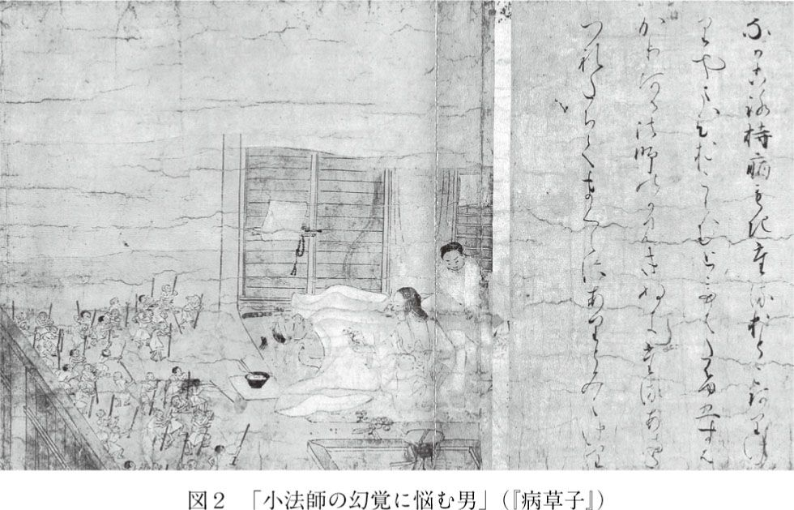
この絵は次のように解説されている。
夢うつつで昏睡を続けるこの男、いつも幻覚を生じるのであった。折しも、かれの枕頭に、五寸ばかりの紙衣を着た小法師の一群が、歓声をあげながら手に手に棒を持って、立ち向かってくるではないか。逃げようにも、逃げることができない。足が立ちすくんで、一歩も動けない。夢幻の中のかれの顔は、苦痛にゆがむ。（『日本絵巻大成７』 中央公論社）
わが国における精神障害者の処遇に関しては、後述するヨーロッパ諸国におけるような巨大な収容施設の建設は行われず、明治時代に至るまで座敷牢による「小さな囲い込み」が主流であった。治療的な施設としては、京都の岩倉村などのような寺社を中心とした小規模な集団的施設も設けられたが、それらは例外的なものであった。本格的な精神障害者のための病院が生まれたのは、明治時代以降である。
京都の北西にある岩倉大雲寺は、一〇世紀に建立された天台密教系の寺院であるが、精神障害者が参籠し、付近で生活をしていたことで知られている。伝説によれば、その始まりは平安時代の末で、摂関家に対抗し延久の善政を行った後三条天皇（在位一〇六八～一〇七三）の皇女の言動がおかしくなり、髪を乱し、ものも言わない状態になった。神仏のお告げに従い、岩倉に参詣し、境内の冷泉を飲ませたところ回復したという。
岩倉に多くの精神障害者が集まるようになったのは、江戸時代になってからのことである。病者は籠り堂で寝起きをし、観音堂に詣で、冷泉を飲んで滝にうたれた。
この他、愛知県岡崎市にある順因寺（灸寺）、大阪府泉南郡にある爽神堂も、古くから精神障害者を受け入れた寺院として知られている。
ヨーロッパの中世から近世においては、精神障害者や痴呆患者、ときには犯罪者や浮浪者、貧民まで収容する「アサイラム（asylum）」が各地に存在していた。アサイラムは精神病院と訳されるが、治療的な機能はなく、収容・監禁するだけの施設であった。
ヨーロッパにおける最古の精神病院として知られているのは、前出のイギリスのベスレム王立病院（Bethlem Royal Hospital）である。ベスレムは一三世紀初頭に、ロンドンの中心部シティの東側にあたるビショップゲートに建てられた。現在のリバプールストリート駅近くに、ベスレム建立の碑文を見ることができる。
ベスレムは当初、浮浪者や貧困者など都市の流民の収容施設であったが、一七世紀以降、次第に精神障害者の占める割合が多くなった。ベスレムは別名「べドラム」（bedlam）と呼ばれていた。ベスレムは元来は修道院であり、ベツレヘム病院とも呼ばれていたため、ベツレヘムが短縮されベドラムになったと言われている。その後ベドラムという用語は、精神障害者の収容施設一般を指す言葉として長く使われるようになり、さらに「騒ぎ」や「混乱」を意味するようになった
ベスレムの居住環境は劣悪であった。そこでは、治療らしい治療はまったく行われていなかった。そもそも、当時は精神障害を治療しうるという考え自体が存在していなかったのである。
今日の感覚では信じられない話であるが、一八世紀頃にベスレムは一種の観光名所となった。病院は「狂者」たちの姿を一般公開し、見物人から入場料を取っていたのである。ベスレムの見物客には、患者を突いて興奮させるための長い杖の持ち込みも許可されていた。
一八一九年にベスレムには、年間九六〇〇人の見物客が訪れたという。一部の例外はみられるものの、今日のような人権的な感覚が生じたのは一九世紀後半以降のことである。一九世紀の半ばまでは、被害者の遺体が置かれたままの殺人事件の犯行現場を有料で公開するようなことも公然と行われていた。
ベスレムの様子は、一八世紀の画家で「風刺画の父」と呼ばれた、ウィリアム・ホガースの『A Rake's Progess』（『放蕩者一代記』）に描かれている。
これは裕福な商人の息子であるトム・レイクウェルが、ギャンブルなどに明け暮れる不道徳な生活の結果、ベドラムの病室に送られてしまうというストーリーからなる八枚の絵画である。その内容は、この時代の狂気は病気ではなく、道徳の低さの結果であるという見方を反映していた。図３は、ベスレムに収容された主人公の姿を示している。
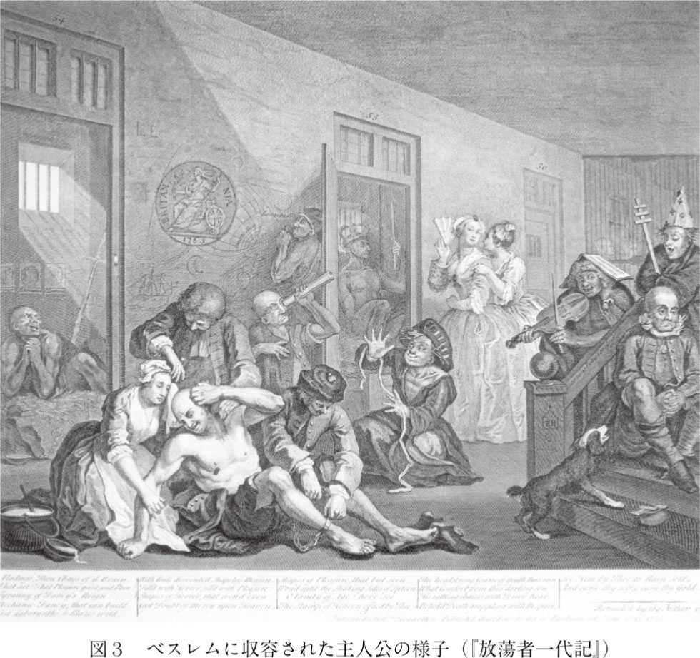
さらに図４には、ベスレムにおける患者の状態が描かれている。
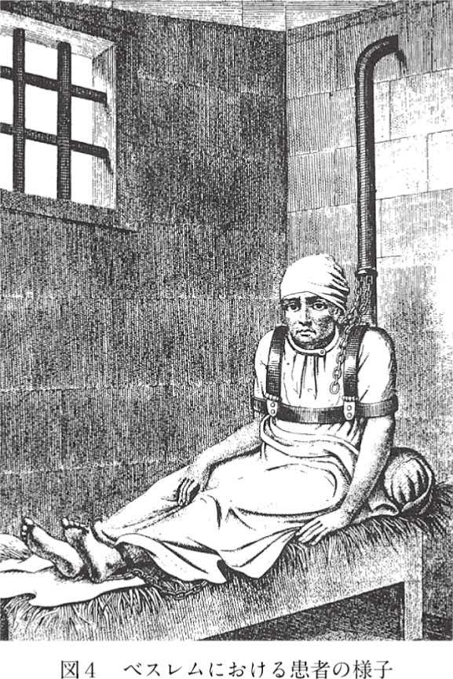
ベスレムにおける患者の処遇は次のように、決して良好なものではなかった。
患者は十人ずつ、腕か肩を鎖で繋がれており、各人の着ているものと来たらガウンのようなものだけ。前を閉じることができない。分別があって道理の判っている者もいれば、どうしようもなくおかしな者もいる。多くの女達が、毛布を一枚与えられただけで、裸で壁に固定されていた。（『恐怖の都 ロンドン』 スティーブ・ジョーンズ 筑摩書房）
一八世紀のイギリスにおいて、精神障害者の収容施設は多様化した。ベスレムと類似の公的なアサイラムの他、公共の慈善施設、私立の「狂人の家」や「私立神経クリニック」が建設され、そうした施設に患者たちは収容されるようになった。
アサイラムの収容者数はごく少人数のものから、数百人に及ぶものまでさまざまであった。一八二六年の統計によれば、公立および私立のアサイラムに入院している患者は少数で、その合計はイギリス全土で五〇〇〇人にも満たないものだったという（当時のイギリスの人口は約一〇〇〇万であった）。
一方、ヨーロッパ大陸においては、イギリスと比較して状況はかなり異なっていた。イギリスでは小規模の治療施設が各種誕生したのに対して、大陸では後に哲学者ミシェル・フーコーが「大規模な監禁」と批判した状況が始まりつつあった。
一六五六年、フランスにおいてはルイ一四世の指導のもとに、精神障害者、犯罪者、浮浪者などを収容する「総合施療院」という大規模な二つの施設の建設が行われた。その一つが「ピセートル」であり、もう一つが「サルペトリエール」である。これらの施設は病院としての機能はまったくない監禁施設であった。その中で収容者たちは、鎖に縛られて放置されていた。ドイツにおいても、同様の収容施設が建設されるようになった。
次の文章は、ドイツ東部の都市ハレの医学部教授であったヨーハン・ライルによる、当時の精神障害者の描写である。
訳もなく高笑いする知恵遅れや、訳もなく自分自身を苦しめる知恵遅れもいる。犯罪者のようにわれわれはこれらの不幸な人たちを、狂人籠や時代遅れの牢獄に閉じ込め、あるいは町の門の上の荒れ果てた屋根裏部屋のふくろうの巣穴の隣や、人類の同朋の同情的な視線が決して注がれることのない牢獄の湿った地下室に押し込め、鎖でつなぎ、自分自身の汚物にまみれたまま放置していた。
（『精神医学の歴史』 エドワード・ショーター 青土社）
イギリス法においては、一二世紀ごろより、「犯意がない」ということを根拠に精神障害者には責任能力が欠如していると見なされた。つまりその当時より、現在の心神喪失に相当する規定が適用されていたことになる。
一二六五年に刊行された、大法官でありかつ聖職者でもあったブラクトンの著作には、次のような記述がみられる。ちなみに、ブラクトンはマグナ・カルタに従わなかったヘンリー三世に対して、「王といえども神と法の下にある」という言葉でいさめたことで知られている。
狂人は、自分で行っていることを知らず、魂と理性に欠いており、野獣と変わるところがない。
現在でも英米法においては、犯罪行為は「法に反する行為」（acnus reus）と「犯意」（mens rea）よって成立すると考えられている。ブラクトンの著作は、犯意が犯罪の構成に重要であることを初めて示したものである。
ちなみに、現在の英米法において犯意のない状態とは以下のものを指す。
１．児童や重度の精神発達遅滞者などのように、無心で害意のない状態で行われた場合
２．精神が病んだ状態
３．放心状態ですべてが無意識のうちに行われた場合
その後、一五八一年のウィリアム・ランバードの著作においては、「狂人」と「生まれつきの痴愚」は善悪の区別がつかないため、犯行に対する責任能力はないと述べられている。
さらに一七世紀の判事エドワード・コーク卿は、責任無能力（non compos mentis）の対象を次のように分類した。コークは当時の有数の法律学者であり、「法の支配」の概念を確立した人物としても著名である。
１．生来の、永続的な障害である痴愚
２．病気、苦悩、それ以外の事故によって記憶や理解力が完全に失われた状態
３．あるときには理解力を失い、別なときには理解力を失わない精神病者で、理解力を失ったときだけ、「non compos mentis」である状態
４．飲酒のように、自らの意思で行った行為によって記憶や理解力が失われた状態
この中でコークは、酩酊者については、その原因が自らの悪しき行為に基づくという理由で免責はされないとした。この酩酊者についての議論は、現在でも受け継がれている。
一七世紀の判事であったマシュー・ハーレ卿は、精神障害を「痴愚」と「狂気」に分類し、さらに狂気を「全体的狂気」と「部分的狂気」に二分した。
また同時期の代表的な哲学者で、『人間知性論』や『市民政府二論』などの著作で知られるジョン・ロックは、やはり精神障害を「白痴」と「狂人」に二分している。ロックによれば、白痴は知性の欠陥によって生じるものであるのに対し、狂人は知性の障害ではなく、複数の観念を誤って集合させ、間違った空想から生じるものであるとした。
狂人は観念をはなはだ正しくなく集め合わせてしまい、これを真理と間違えて、正しくない原理から正しく論じる人が誤るのと同じように誤る。（中略）けれども、白痴は命題をごく僅かしか、あるいは一つも作らず、ほとんどまったく推理しないのである。
（『人間知性論』 ジョン・ロック 岩波文庫）
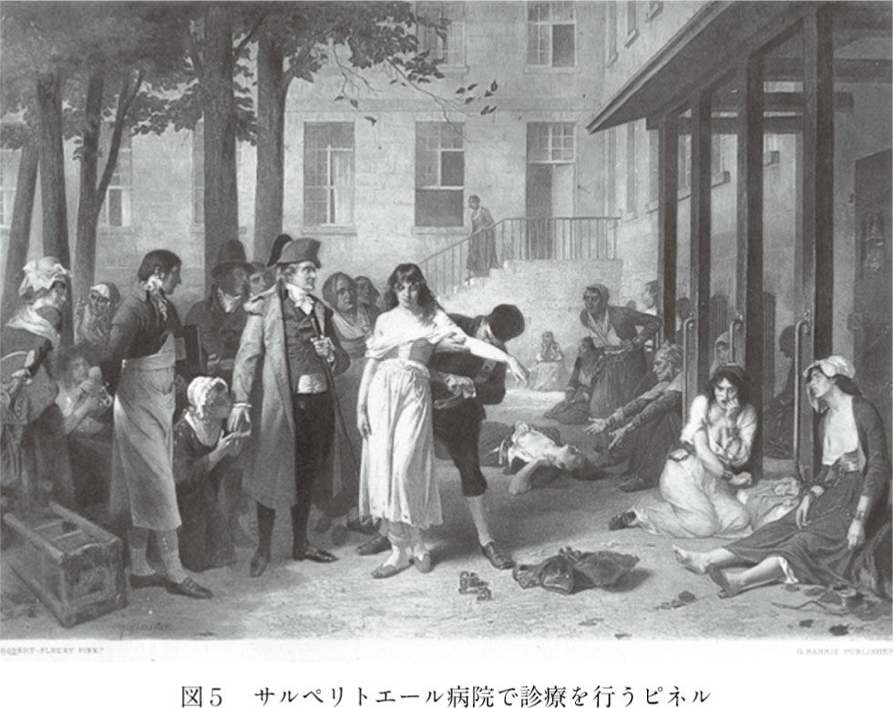
ピネルは、精神疾患を、躁、メランコリー（現在のうつ病に相当）、痴呆（痴呆性疾患に相当）、白痴（知的障害に相当）の四種類に分類した。この分類は、現在の精神疾患の分類にほぼ対応している。彼は各疾患の統計的研究を発表したことでも知られている。
ピネルは精神障害者について、次のように語っている。
精神病者は刑罰を加えるような咎人では決してなく、苦しむ人に払われるべきあらゆる配慮を、その苦痛からして、当然受けてしかるべき病人なのであり、極めて簡単な方法により、彼らの理性を回復させるよう探求しなくてはならない。
（『フィリップ・ピネルの生涯と思想』 ルネ・スムレーニュ 中央洋書出版部）
ピネルの臨床的な実践は、彼の弟子であるエスキロールに引き継がれた。エスキロールはピネルの考えを推し進め、精神障害者の開放的治療を行うとともに、患者と医療スタッフによる治療的なコミュニティを作ることを行った。これは二〇世紀におけるマクセル・ジョーンズらによる「治療共同体」の概念につながる。
さらにエスキロールは患者の人権の保護を目的とした法制度の改革を行い、強制入院のシステムを整備したことでも知られている。
精神疾患の分類について、エスキロールは「モノマニー」という概念を提唱した。モノマニーとは部分的な狂気を表す用語で、彼によれば、知的モノマニー（体系化した妄想を伴うもの）、感情的モノマニー（感情と性格の異常を伴うもの）、本能的モノマニー（放火、殺人、酩酊などの行動異常を伴うもの）などに分けられた。このモノマニーの概念は、今日のパラノイアに引き継がれている。
イギリスにおける一八世紀は、精神医療における転換点であった。当時は、イギリスの各地に公立および私立の精神病院がさかんに建設されるとともに、精神障害者の処遇に関する法律が多数制定された。
まず一七一四年に、「浮浪者取締法」が制定された。この中では浮浪者の中の精神障害者の保護について規定している。この法律は、一七四四年に改定されたが、そこでは精神障害者の治療のための保護について定められた。この法律においては、浮浪者の中から精神障害者を同定し保護を命令するのは、治安判事の役目とされた。
一八世紀のイギリスにおいては、今日の援護寮、グループホーム、あるいは小規模の精神病院に相当する「マッドハウス」の建設がさかんに行われた。マッドハウスの規模、様式はさまざまで、ホームステイやアパート形式のものから、一〇〇床以上の病床のものまでが存在していた。
マッドハウスの利用者は、費用の負担が可能な経済的に恵まれた者に限られていたが、良好な環境や処遇が得られる場合は少なかった。それに加えて、家族間の争いや相続の問題で一方的に入所させられることもあり、トラブルが絶えなかった。
このため政府は、マッドハウスを法的な規制の対象とするため、一七七四年に「マッドハウス法」を制定している。この法律ではマッドハウスの運営を免許制とし、医師会の委員の視察を義務付けている。
マッドハウスの設立と並行して、精神病院の新たな開設も相次いだ。しかし病院に入院している精神障害者の処遇には、ほとんど目が行き届いていなかった。
その後、一八世紀末より精神障害者の処遇の改善に対する社会的な関心が高まりをみせ、次の世紀になるが、一八〇八年に「州立アサイラム法」が成立している。この中においては、精神障害者の入院環境を改善するために多くの規定が盛り込まれた。
さらに、無拘束法の導入など精神障害者に対する人道的な扱いが唱えられるようになり、一八四五年に「精神病者法」が制定された。この法律は公立のアサイラムの建設を各地域に義務付けるとともに、新しく設置された「精神障害委員会」によってイギリス全体のアサイラムを監督することが定められた。ここにおいて精神障害者の処遇と人権の擁護は、大きく前進した。
一八世紀から一九世紀前半のイギリスにおいては、精神障害者の処遇に関する法律の制定に加えて、精神障害者の責任能力に関するいくつかの重要な裁判が行われている。
一七二三年、エドワード・アーノルドは、オンスロー卿が自分を拷問するために悪魔を送っていると確信し、オンスロー卿を殺害しようと狙撃して負傷させた。
この裁判において裁判官は、「被告人が精神障害を理由に無罪とされるためには、嬰児または野獣と同様に、理解力と記憶力を全く欠いており、自分が何をしているかを知らない者であるということが証明されねばならない」と主張した。この基準は、「野獣テスト」として知られるようになった。
アーノルドの裁判における陪審員の評決は有罪で、被告には死刑が宣告されたが、被害者自身の申し立てによって終身刑に減刑されている。
さらに一八〇〇年、ジェイムズ・ハッドフィールドは、キリストが復活し世界を救済するために自分が死ななければならないが、自らの手で死ぬことはできないため、国王を暗殺することで自分の死を確実なものとしようと考えた。彼は従軍中の一七九四年に、フランス・トゥルコワンの戦いで頭部外傷を受けていた。彼はこれによって器質性精神病を発症し、慢性的な妄想状態にあった。
ハッドフィールドはロンドンのドルリーレーン劇場のロイヤルボックスに侵入し、国王ジョージ三世を狙撃したが、幸い国王は無事だった。
裁判において被告の弁護人は、「妄想が存在し、犯行がその妄想の影響下で行われたものであるとすれば、その者はいかなる犯罪についても有罪とは考えられない」と主張した。この主張は、「妄想テスト」と呼ばれることになる。陪審員の評決は、「犯行時に精神病の影響下にあったがゆえに無罪」であった。
蛇足になるが、被害者のジョージ三世自身も精神障害を患い、晩年は執政を皇太子に一任している。彼の治世については、映画『英国万歳！』に描かれている。
このハッドフィールドの事件を契機として、一八〇〇年に議会で「犯罪性精神病者法」が成立した。この法律は重大な犯罪を犯した精神障害者について、「国王陛下の御意にかなうまで」、つまり無期限に収容できるようにしたものである。
ハッドフィールドは、裁判では無罪になったものの、この法律に基づいてベスレム王立病院で残りの生涯を過ごすこととなり、結核により同病院で死亡した。
一八四〇年、パブの給仕をしていたエドワード・オックスフォードは、ヴィクトリア女王を狙撃したが、女王は危うく難を逃れた。
この事件の裁判において、弁護側の証人として出廷した医師は、被告は、「正邪の区別をするという道徳的な義務を理解することが全くできないもので」「自らの犯行の凶悪さに全く無関心であり、裁判の結果についても無頓着で、有罪判決が死刑を意味することを全く理解していない」ことを指摘した。
裁判の結果は、「精神障害により無罪」であり、被告はベスレム王立病院に入院となっている。入院後の被告には、精神病の兆候はまったくみられなかったことが報告されていることを考えると、オックスフォードの病名は、今日のパーソナリティ障害に相当していたと考えられる。オックスフォードは後に、海外への移住を条件に退院となり、オーストラリアに向かった。
このように重罪を犯した精神障害者に対する行政的、司法的な議論が進んだのも、この時代であった。
前々項で述べた「精神病者法」の制定（一八四五年）に先立って起きたのが、マクノートン事件である。この事件において定められた原則（マクノートン・ルール）は、その後の精神障害者の責任能力に関して基本的な原理となり、現在でも有効である。
事件は、一八四三年に起きた。当時のイギリスはヴィクトリア女王の統治時代にあたり、イギリス帝国主義の絶頂期にあった。女王は議会制民主主義を貫き、ディズレーリ、グラッドストーンらの政党政治家が活躍した時代であった。
事件の加害者はダニエル・マクノートン、スコットランド生まれの工員であった。彼はロンドンの中心部チャリングクロスにおいて、当時の首相であったロバート・ピール卿の秘書であったエドワード・ドラモンドを射殺した。
マクノートンは統合失調症患者だった。彼は自分が常に追跡され狙われているという被害妄想を持っていた。そのために、フランスに逃亡したこともあった。彼は陰謀の背後に現在の保守党の前身であるトーリー党が関与していると確信し、トーリー党の党首であった当時の首相ピール卿を射殺しようとして、誤ってドラモンドを殺害したのである。
ピール卿は一七八八年生まれで、一八三四年から三五年、一八四一年から四六年の二度にわたってイギリスの首相を務めた。彼はイギリスの警察制度の基礎を確立したことでも知られている。
マクノートンは裁判にかけられた。検察は、彼は特定の事象にのみ妄想を持っているが、正邪の区別ができる知能を持ち、犯罪の結果がどのようになるか知っていた、したがって免責することはできないと主張した。
一方弁護側は、部分的妄想であっても精神機能全体が影響を受け、周囲の事柄を正しくみることができなくなり、妄想によってコントロールできない衝動行為に至ることになる、したがって免責すべきであると反論した。
陪審員の結論は、「精神疾患により無罪」というものだった。この結果、マクノートンはベスレム王立病院に入院となり、後に特殊病院であるブロードモアに転院して生涯をそこで過ごしている。
この裁判所の判断は、一般大衆の支持を得られなかった。ほとんどのジャーナリズムはマクノートンの無罪に反対を表明し、世論もこれに同調した。さらにヴィクトリア女王や政府の一部も判決に異を唱えた。
この結果、マクノートン事件の裁判長であったティンデル卿を中心として、精神障害者の責任能力に関するいくつかの原則が作成された。これがマクノートン・ルール（M'Naghten Rule）と呼ばれるものである。その内容を次に示す。
１．妄想の影響で行為している人であっても、もし犯罪を行った時点で法に反した行為を行っていることを自覚していれば、法的責任がある。
２．すべての人は、そうでないと証明されない限りは「sane」（正気）であり、自らの犯罪について責任を負うに十分な理性をもつと仮定される。
３．精神疾患による責任無能力が成立するには、犯行時、被告人は、精神の疾患によって、自分の行っている行為の本質と性質を知らないほどに、あるいはもしそれを知っていたとしても、自分は邪悪なことを行っているということを知りえないほどに、理性を欠如していることを明白に証明しなければならない。
４．部分的な妄想を持つ人に関しては、その妄想に関する事実関係は現実にそうであると見なされる（つまり、部分的妄想を持つ被告人の責任能力を判断する場合は、被告人の妄想を現実に存在するものと仮定することによって判断を行う。例えば、被告人がある団体から命を狙われているという妄想を持っている場合、その妄想を「事実」としてみなし責任能力を判断すべきであるということである）。
マクノートン・ルールは、その後現在に至るまで精神障害者の責任能力を論じる際、重要な基準となった。またマクノートン事件は、精神科医が法廷で証人として証言した最初の事件としても知られている。
マクノートン・ルールに関しては、精神障害者においても正邪の弁別能力が全く欠けている場合は少なく、多くの場合精神障害者は責任能力があることになる、また、衝動の制御能力に関して考慮されていないなどの批判がみられている。
その後アメリカにおいては、マクノートン・ルールを拡大する動きがみられた。一八六九年のニューハンプシャーにおける裁判では、「正邪の弁別能力」の有無にかかわらず「違法行為が精神の疾患の結果、または所産であったならば、刑事上の責任を負わない」というニューハンプシャー・ルールが唱えられたが、広い支持は得られていない。
しかし、より大きな問題点は、マクノートン・ルールで示された基準が客観的・定量的に判定できるものではないことである。
被疑者の精神科的な診断名については、十分に資料を集め時間をかけて面接すれば、かなり確かな結論が出せるかもしれない。しかし「正邪の弁別能力」がどの程度欠けていたかという点に関しては、病状や前後の行動から推測する以外にたどりつく方法はないが、それが正しいものかどうかは確認のしようがないのである。
マクノートン事件が起きた時期は、日本においては江戸時代の末にあたる。江戸時代の日本においては、今日みられる精神障害の多くのものが知られていたことは、多くの資料から明らかである。
当時、香川修徳、土田献翼卿などの医学者が精神疾患についての説を展開した。土田による『癲癇狂経験編』は、わが国で最初の精神医学の専門書であると考えられている。
また奉行であった根岸鎮衛が収集した奇妙な小話を集めた『耳袋』には、統合失調症、色情狂など多くの精神障害と思われる症例の記載がある。他にも、国学者で歌人でもあった伴蒿蹊の『近世畸人伝』などに精神障害者のエピソードが紹介されている。
香川修徳によれば、精神障害は次のように分類されていた。すなわち「驚」はけいれんを主な症状とする小児の疾患、「癲」は大発作を起こすてんかん、「驚癇」は神経症圏の疾患であり、「狂」は統合失調症に相当していた。「狂」はさらに「剛狂」と「柔狂」に分類されていた。前者は今日の緊張型統合失調症、後者は破瓜型統合失調症に相当している。
さらに今日の精神遅滞に相当する「痴鵔」、摂食障害にあたる「不食」の記載もみられている。
次に示すように、喜多村良宅の『吐方論』には慢性期の統合失調症と考えられる症例が報告されている。
日本橋四日市の新右衛門の妹は年の頃三七、狂乱して二〇年にもなる。髪はばさばさで、身は痩せ衰え、肌は垢だらけで、物を手でまるめ、言うことがわからず、奇薬名方も効なく、ここ数年は薬も服していない。（『江戸病草紙』 立川昭二 ちくま学芸文庫）
それでは江戸時代において、重罪を犯した精神障害者はどのように処遇されていたのであろうか。
結論から言えば、精神障害を持つ加害者に対してはある程度刑罰を減免すべきであると考えられていたが、実際の扱いは個々の例ごとに異なっていた。殺人事件の加害者においても、死罪となる場合もあれば、今日の心神喪失の規定と同様に無罪放免となる例もみられている。
こうした扱いの違いは、犯行の状況や加害者の病状により、個別に判断されていたらしい。被害者側に糾弾の姿勢がなく、親族による保護が得られた場合は、赦免になることが多かったようである。
次の例は、精神障害のために赦免になったケースである。
万治三（一六六〇）年五月九日、本郷六丁目の三郎兵衛は気違になり、女房を斬り殺し、さらに召使の六兵衛と市兵衛の二人にも傷をおわせ、捉えられ、入牢となった。そのご気もおちついたところ、殺された女房の父親の太郎左衛門と当人の父親の甚兵衛とがそろって願い出てきたので、七月二日に赦免となった。
（『江戸病草紙』 立川昭二 ちくま学芸文庫）
立川昭二氏による『江戸 老いの文化』（筑摩書房）によれば、江戸の町中でも精神障害者による無差別殺傷事件はしばしば起こり、犯科帳ではそれを「乱気」あるいは「気違」と記載していた。犯科帳の一つである「御仕置裁許帳」には、この「乱気」あるいは「気違」による殺人および傷害事件が二二例みられるが、死罪は一〇例、赦免は一二例であったという。
以上のように、犯罪を犯した精神障害者に対する処遇の問題は、ヨーロッパにおいても、日本においても、長い歴史を持つ。ここに述べたように、洋の東西を問わず、触法精神障害者に対しては処罰よりも治療を行うことが、基本的な考え方となっていった。
第一章でも少し触れたが、現在の日本において、精神障害者の処遇に関しての取り扱いは、二つの法律により定められている。「精神保健福祉法」と「医療観察法」である。
そのうちの「医療観察法」については後述する（第四章）こととし、本章においては、「精神保健福祉法」について解説したい。
その正式名称は、「精神保健及び精神障害者福祉に関する法律」である。この法律は一九五〇年に「精神衛生法」として施行されたものが原型であるが、一九八八年に「精神保健法」として改正され、さらに一九九五年に現在の名称に改められた。
「精神保健福祉法」には、精神障害者の医療から入院の制度、社会復帰、精神保健福祉センター（都道府県などに設置されていて、住民の精神保健および精神障害者の社会復帰支援を行う行政機関）の業務に至るまで幅広い内容が定められているが、精神障害者が犯罪を犯した場合の扱いが明記されているわけではない。
それにもかかわらず、二〇〇五年に医療観察法が施行されるまで、触法精神障害者の処遇はすべてこの法律の一部の条文の運用によって行われてきた。それが「措置入院」の制度である。
この措置入院を中心とするシステムは、重大な問題点がみられたにもかかわらず、半世紀以上にわたって用いられてきた。
ここではまず、日本における精神障害者に関する法制度の歴史についてふりかえってみる。
わが国において精神障害者に対する法制度として初めて制定されたものは、一九〇〇年に施行された「精神病者監護法」である。
この法律は、精神障害者の監督義務者の設置を義務づけるとともに、精神障害者を監置できるのは監督義務者だけで、病者を私宅、病院などに監置するには、監督義務者は医師の診断書を添え、警察署をへて地方長官に願い出て許可を得なくてはならないことを定めた。
「監置」とは通常裁判所が被疑者を監置場に留置することを意味するが、この場合は私的な監置、つまり精神障害者を座敷牢に収容することを指している。端的に言うと、この法律は従来から行われてきた精神障害者の私宅監置（座敷牢）を合法化、制度化することが主な目的であった。
後世、座敷牢を容認したという理由で、人権的な側面からこの法律は批判の対象となったが、当時の日本において精神病院は数少なく、座敷牢を用いること自体やむを得ない面も大きかったと思われる。
そのころの精神科病床は全国を合計しても約五〇〇〇床あまりしかなく、圧倒的に不足していた。ちなみに現在では、日本国内に精神病床は三〇万床以上あり、日本はもっとも精神病床の多い国となっている。
図６は、当時使用されていた座敷牢を示した図と写真である（『精神病者私宅監置ノ実況及ビ其統計的観察』 呉秀三、樫田五郎 創造出版）。この座敷牢に監置された患者は、富裕な資産を持つ四五歳の男性で、その監置の理由は、たびたび飲酒して徘徊し怒りっぽくなり、器物破壊を繰り返したためであるという。
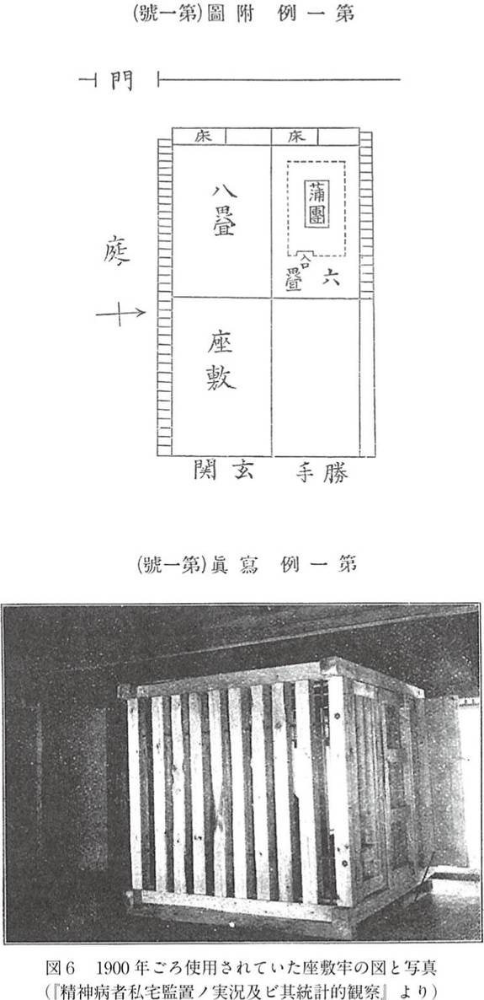
島崎藤村の『夜明け前』は、明治時代の初期を舞台として、長野県の木曾路に住む青山半蔵の生涯を描いた長編小説であるが、この作品の中でも座敷牢が登場する。
半蔵は新しい時代に心を弾ませたものの、理想とのギャップに挫折し、最後は精神障害者として座敷牢で狂死する。現実にも、藤村の父である島崎正樹は座敷牢の中で亡くなっている。さらに藤村の長姉も精神疾患に罹患していたことが知られている。
次の文章は、『夜明け前』（新潮文庫）の中で、発病した主人公青山半蔵のために座敷牢を作る一節である。
翌朝は早くから下男の佐吉に命じ裏の木小屋の一部を片づけさせ、そこを半蔵が座敷牢の位置と定めた。早速村の大工をも呼びよせて、急ごしらえの高い窓、湿気を防ぐための床張りから、その部屋に続いて看護するものが寝泊まりする別室の設備まで、万端手落ちのないように工事を急がせた。栄吉はまた、町の主立った人々にも検分に来てもらって、木小屋のなかの西のはずれを座敷牢とし、用心よくすべきところには鍵をかけるようにしたことなぞを説き明かした。
その後一九一九年に、帝国議会において「精神病院法」が成立した。この法律は、精神障害者の私宅監置を減らすため、積極的に精神病院の設立を目指すことを目的としていた。しかしながら現実には、地方自治体の財政的な問題もあり精神病院の建設はなかなか進まなかった。
この法律には、次のような規定がある。第二条は、触法精神障害者の処遇について言及している。
内務大臣は道府県に精神病院の設置を命じることができる（第一条）
本法によって精神病院に入院させるべき精神病者は、精神病者監護法によって市区町村長の監護すべき者、罪を犯したもので司法官庁がとくに危険があるとみとめるもの、療養の道なきもの、地方長官が入院の必要をみとめる者（第二条）
前項に記載した「精神病者監護法」「精神病院法」の制定に先立って、精神障害に関連するセンセーショナルな事件が起きた。それが相馬事件である。相馬事件によって精神障害者に関する法整備が不十分であることが広く明らかとなり、新法成立の一つの契機となった。
相馬事件とは、一八八三年に始まった福島県における旧中村藩の藩主の御家騒動である。
旧中村藩は小藩であったが、藩主である相馬家は明治になってから子爵の称号を授かり、足尾銅山の経営を行うなど経済的にも裕福であった。
相馬家の跡取りである相馬誠胤は統合失調症に罹患していたと考えられるが、その病状が悪化したため、家族が宮内省に自宅監禁を申し入れた。この申請が認められ相馬誠胤は自宅で座敷牢に入れられ、その後、東京府癲狂院に入院となった。
ところが、一八八三年、旧藩士の錦織剛清が主君の病状に疑いを持ち、家族による不当監禁であるとして関係者を告発した。
錦織によれば、陰謀の中心は相馬家の家令（使用人の監督者）と誠胤の異母弟の母で、相馬家の財産を自由に使おうとするため誠胤を狂人にしたてあげようとしたのだという。告発を行った錦織に対し、一般の人々からは忠義者として同情が集まった。
一八八七年には、錦織は相馬誠胤が入院していた東京府癲狂院に乱入し、相馬誠胤の身柄の確保にいったんは成功するものの、一週間で逮捕された。錦織は、家宅侵入罪に問われ禁固処分を受けた。
一八九二年、相馬誠胤が病院内で急死した。錦織はこれを毒殺によるものとし、一八九三年に相馬家の関係者を告訴した。しかし最終的に、死因が毒殺とは判定できなかったため、逆に相馬家側より誣告罪（虚偽の申告をした罪）で訴えられ、後に有罪が確定している。
当時の記録によれば、誠胤は二四歳ごろより精神変調が出現し、ひどく疑い深くなり、不眠、徘徊、暴力行為などもみられた。興奮して一晩中眠らなかったり、数日ぼんやりとした状態が続いたりすることもあった。
これらは統合失調症の初発症状と考えられる。誠胤を精神鑑定した帝国大学教授の榊淑によれば、彼の病気は、当時の診断名で「時発性躁暴狂」であるとした。これは今日の緊張型統合失調症に近いものである。さらに誠胤の親族には精神疾患が多く、母、弟、妹が発病している。
今日の目から見れば、誠胤は明らかな精神障害者であり、家族のとった処置も大きな誤りとは言えないと思われる。しかし当時の世論、ジャーナリズムは錦織に味方し、腹黒い取り巻きたちと悪い医者に対抗しているヒーローにまつりあげた。
この事件を契機に精神障害者に対する法的システムの不備が認識され、法令の制定の動きにつながった。
相馬事件については、当時の人気作家黒岩涙香が、自ら設立した「萬朝報」という新聞に、錦織側にたった記事を執筆したことが知られている。ちなみにこの萬朝報は、政界や財界の名士の家庭のスキャンダル暴露などで部数を増加し、一時は年間発行部数が国内第二位にまでなった。
相馬事件より歴史が下るが、精神病院で生涯を終えた二人の著名人がいる。一人は天才文士として一世を風靡したシマセイこと島田清次郎であり、もう一人は東京帝国大学医学部を卒業し長崎大学の教授を務めた石田昇である。
当時の精神障害者がどのような生涯をたどったか、彼らを例として見てみよう。
島田清次郎が二〇歳で執筆した小説『地上』は、わが国初の大ベストセラー小説となったが、人気の絶頂期に起こした不祥事をきっかけとして、清次郎は出版界から追放されてしまう。その後の彼の人生は転落の一途をたどった。
島田清次郎は一八九九年（明治三二年）、石川県の生まれである。清次郎誕生の翌年に父が亡くなった。残された母子は金沢に移り、母の実家が経営する花街の芸者屋に寄宿することになった。
清次郎は幼少のころから、秀才の誉れが高かったという。しかし祖父が米相場に失敗してから、次第に生活が逼迫する。清次郎は株取引所、洋品店の店員、新聞社の発送係などをしながら、創作に打ち込んだが、彼の作品を評価するものはなかなか現れなかった。
清次郎の転機は一九一九年（大正八年）に訪れた。評論家生田長江が彼の小説『地上』を高く評価し、これを新潮社に推薦してくれたのである。大正八年八月『地上』が世に出た。この作品は社会主義者堺利彦、作家徳富蘇峰らにより絶賛され、爆発的な売れ行きを示した。清次郎は瞬く間に時代の寵児になった。
清次郎の凋落を決定的にしたのは、大正一二年の舟木海軍少将令嬢誘拐事件であった。彼は婦女誘拐、監禁陵辱、強盗の疑いで告訴された。
当初清次郎は激しく非難されたが、その後女性が『地上』の熱心な読者であり清次郎と交際していたことが明らかになると、単なる恋愛事件として告訴は取り下げられた。しかしこれ以後清次郎のもとに、出版社などから執筆の依頼がくることはなく、清次郎は社会的に葬られた。
一九二四年（大正一三年）七月、清次郎は血まみれの姿で池袋を徘徊していたところを、挙動不審ということで警察に逮捕された。言動が病的であったため精神鑑定が行われた結果、早発性痴呆（現在の統合失調症）と診断され、巣鴨の保養院という精神病院に入院となった。
入院して五年後、肺結核の悪化のため清次郎は死亡した。わずか三〇年の生涯だった。
精神病院に入院した後、清次郎はほとんど誰とも口を利かず、部屋の隅で座っていたという。時々急に意味不明のことをわめき散らしたり、自分の着物や帯を引き裂いたりした。大小便も垂れ流しで、臭気は耐えがたかった。これは典型的な慢性期の統合失調症患者の姿である。
清次郎の主治医であった池田隆徳は、入院中の彼の様子を次のように記載している。
「看護人が催眠術を掛けて私を殺そうと思っている、危険です」と言う。被害妄想である。（中略）其頃は能く手拭で頭を包んで居た。診察の時にも其手拭を取らない。頭から背、腹全部痛いと訴える。前述の妄覚や妄想は矢張り時々表れて居る。
（『妄想』 池田隆徳 精神衛生学会）
一方の石田昇は高名な精神医学者であったが、統合失調症に罹患し不幸な事件を起こした。
彼は東京帝国大学医学部を一九〇三年（明治三六年）に卒業し、その後長崎大学医学部（当時は長崎医学専門学校）の精神科教授に就任した。以下の記述の多くは、松沢病院で石田の担当医であった秋元波留夫氏の記述に従った（『悲運の精神医学者 石田昇』 臨床精神医学 第一三巻四号 国際医書出版）。
石田家は代々仙台藩の藩医として令名の高い名家だった。石田は仙台の第二高等学校在学時から、短歌や小説に熱中し、多くの作品を雄島濱太郎の筆名で投稿をしていた。彼は東京帝国大学を卒業し、精神病学教室に入局した。
石田が入局する二年前、わが国の精神医学の父と呼ばれる呉秀三がヨーロッパ留学から帰国し、東京帝国大学教授および巣鴨病院医長に就任した。巣鴨病院は後の松沢病院である。当時の東大精神病学教室は、精神医学に対する強い偏見のため東大病院の中にはなく、巣鴨病院に置かれていた。
四年後、石田は新設された長崎医専の教授として赴任した。そのとき彼はまだ三一歳であった。
一九一七年（大正六年）、四二歳の石田は留学のためアメリカに出発する。石田の後任として長崎医専の教授職についたのが歌人でもある斎藤茂吉だった。一二月、石田は東洋汽船の春陽丸でサンフランシスコに向けて出発した。目的地はメインランド州ボルチモアのジョン・ホプキンス大学である。
事件が起きたのは、石田が留学して一年あまりたったときのことだった。大正七年一二月、石田は研修中であったシェパード・エノック・ブラット病院において、三五歳の医師ウォルフを、所持していたピストルで射殺した。いつもの朝のスタッフミーティングを終えて散会した直後、廊下に出た被害者に対して、後ろから来た石田がいきなりポケットからピストルを取り出して発射したのである。
弾丸は一発は頭部に、二発目は腹部に命中し、ウォルフは即死した。ピストルは事件の前日に石田が購入したものだった。事件直前のミーティングにおいて、石田の様子は冷静で普段と変わりがなかったという。
この頃石田には被害的な幻聴が盛んにあり、下宿をひんぱんに変えていた。また病院の看護婦長に対して恋愛妄想を抱いたが、同僚のウォルフがこの恋愛の邪魔をしていると曲解し、殺害するに至ったらしい。
石田は犯行後、ダラソンマンプの拘置所に送られた。裁判の結果、精神異常ではなく、責任能力はあると判断され、一審、二審の判決は死刑であったが、アドルフ・マイヤー博士の鑑定で終身刑に減刑された。
石田自身は、裁判で次のように語った。
今になってみると、あの行為は精神病のためだと思います。夢を見ているうちにやったことです。ウォルフ医師を殺すつもりなど毛頭ありませんでした。あの朝、自分の部屋を出たかどうか覚えていません。顔を洗ったかどうかも覚えていません。食堂に行きましたが、朝食をすませたかどうか記憶がありません。ウォルフ医師が目に入った時、彼を殺していました。霧が目の前に立ちこめていました。霧の中に病院のドクターが何人か見えました。彼らはまるで、空中をさまよっているようでした。
（「石田昇の殺人事件」 秋元波留夫 『司法精神医学 ６』 中山書店）
石田はメリーランド州立刑務所に送致され、そこで五年間服役したが、精神症状が悪化したため、州立精神病院に移送された。しかし病状が思わしくないため、日本に送還になった。大正一四年のことだった。
石田はバンクーバーから横浜に入港した横浜丸で帰国した。彼は帰国直後に松沢病院に入院となった。すでに五一歳になっていた。石田は松沢病院に一五年間入院したが、その間精神障害は慢性に進行し、深刻な人格荒廃にまで至った。石田は昭和一五年、肺結核を悪化させ死亡した。当時は現在使用されている抗精神病薬は開発されていなかった。
松沢病院に入院していた時期、石田には幻聴が活発にあり、独語・空笑（ひとり笑い）も盛んに出現した。一年の中で数カ月は気分が高揚し、「自分は神である」などの誇大的な発言をすることもあった。
精神医学に関する発言も断片的にみられている。「俺はクレペリンよりもえらい。デメンチア・プレコックスの分類では、世界各国とも俺の説をとっておる。しかし、日本では通用しない」などと語ったという。
石田が病前に執筆した精神医学の教科書は評価が高く、現在でも創造出版から出版されている。
表11には石田が闘病生活を送った昭和一〇年当時の精神障害者の治療施設について示した。この時期になっても精神科病床は不足しており、監置室（座敷牢）が七〇〇〇床以上も存在していた。
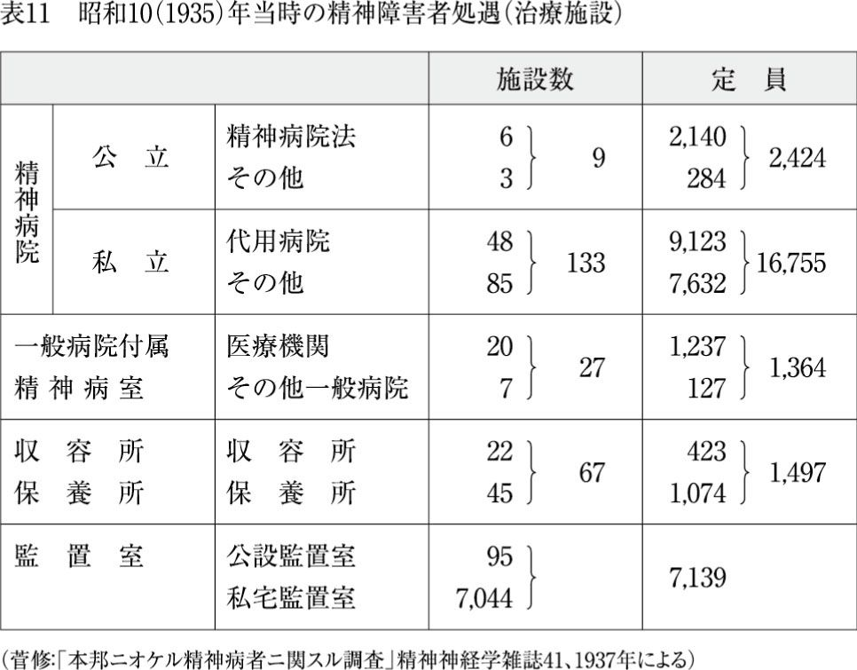
精神病者監護法、精神病院法の制定によっても、精神障害者の処遇に関しては大きな進展はみられなかった。新たな展開がみられたのは、第二次世界大戦後のことで、難産の末、一九五〇年に新法が施行された。
この「精神衛生法」は次のような内容を持っていた。
１．精神病院の設置を都道府県に義務づけるとともに、都道府県知事は、公立の精神病院に代わる施設として指定病院を指定する。
２．私宅監置は一年かぎりで廃止する。
３．保護義務者の制度を設け、保護義務者の同意による同意入院の制度を設ける。
４．自傷他害のおそれのある精神障害者に対して措置入院の制度を設け、その費用は公費で負担する。
５．精神衛生審議会、精神衛生鑑定医の制度を新設する。
この法律の成立によって、ようやくわが国においても、遅ればせながら近代的な精神医療行政が始まることとなった。座敷牢は禁止され、精神病院への強制入院に関しても、法的な手続きが定められたのである。
しかしながら、現実には、当時の精神科の病床数は不足し、入院できる患者は限られていた。公立の精神病院の設立がなかなか進まないことが、昭和三〇年代における私立の精神病院の乱立につながることになる。
また入院患者の処遇という面においても、精神病院のアメニティは貧弱であった。人権的な配慮どころか、広い畳の部屋に数十人の患者がすし詰めになって収容されているというのが、当時の実態であった。
犯罪との関連においては、この法律において「措置入院」の制度が制定されたことが注目に値する。措置入院は「自傷・他害の恐れ」のある患者に対して、都道府県知事の命令で施行する強制入院である。この場合、入院費用はすべて公費による負担となる。入院期間は定められておらず、担当医の一存で決めることができた。
措置入院の制度は、現在でも当時と同様に運用されている。この入院形式は、警察官が保護した患者に適用されることが多い。興奮状態にある患者が暴行、器物破壊などの行動を起こした場合、警察官の判断で立件せずに、措置入院のルートに乗せられるのである。
また措置入院は検察官が申請することも可能である。拘置所に留置中に、精神疾患によって不起訴になった場合、あるいは裁判において心神喪失が認められた場合、検察官は被疑者を措置入院のルートに乗せることになる。
この点について、もう少し詳しく検討してみよう。
措置入院についての規定は、精神衛生法においても、現在の精神保健福祉法においても、ほぼ同一である。一部の例外を除いて、患者は警察などによって拘留された状態にあり、診察を受けることが求められる（患者の状態によっては、興奮が激しかったり全く無言であったりし、通常の診察が成立しないこともある）。
患者は、二名の精神科の専門医（以前はこれを精神衛生鑑定医と呼んだが、現在は精神保健指定医と名称が変更）によって診察を受ける。その結果、「診察を受けたものが精神障害者であり、且つ、医療及び保護のために入院させなければその精神障害のために自身を傷つけ又は他人に害を及ぼすと認めたときは、その者を国若しくは都道府県の設置した精神病院又は指定病院に入院させることができる」と決められている。
つまり自殺の恐れがみられたり、他人に危害を加える可能性が強いとき、措置入院の対象となる。これを「自傷・他害の恐れ」と呼んでいる。
措置入院の実際の運用については各都道府県ごとに様々であるが、ここでは東京都の例を紹介する。
警察官が路上などにおいて興奮した精神障害者を保護した場合について考えてみよう。
東京都においては、世田谷区梅が丘に常設の鑑定所が設けられており、二名の精神科医が待機している。警察官に拘束された患者はここに連れてこられて診察を受ける。
診察の結果、二名の医師の意見が一致した場合には措置入院が決定し、この段階で警察の役割は終了する。
患者は東京都の精神保健課の職員が付き添って入院先の病院まで搬送される。興奮し指示を拒否する患者については、身体をベッドに抑制し、精神保健課の救急車を用いることもある。
それでは、診察の結果、措置入院が認められなかった場合はどうなるのだろうか。
この場合、困った事態になることが多い。警察は患者を鑑定所に連れてきた時点で、自分たちの仕事は終了したものと考えている。事実、法律的にはそれ以上の関与をする義務はない。
診察をした精神科医が、患者に「自傷・他害の恐れ」はなく精神疾患としても軽症であるため、精神病院に入院する必要はなく警察で扱うべきだと主張したらどうなるか。
実際には、こうした要求が認められることはない。警察を含めた司法と医療の関係は、一方通行である。司法機関から医療に入院の要請はたびたびあるが、医療側からの要請について司法機関が受け入れることはない。
診察の結果、措置入院が不必要と判断された場合、たとえ患者が傷害や器物破壊などの犯罪行為を行っていても、警察が再度捜査の対象とすることはないのである。この場合実際にどうしているかといえば、精神保健課の職員が保護者の同意による入院など他の形態による入院ができるように奔走することになる。
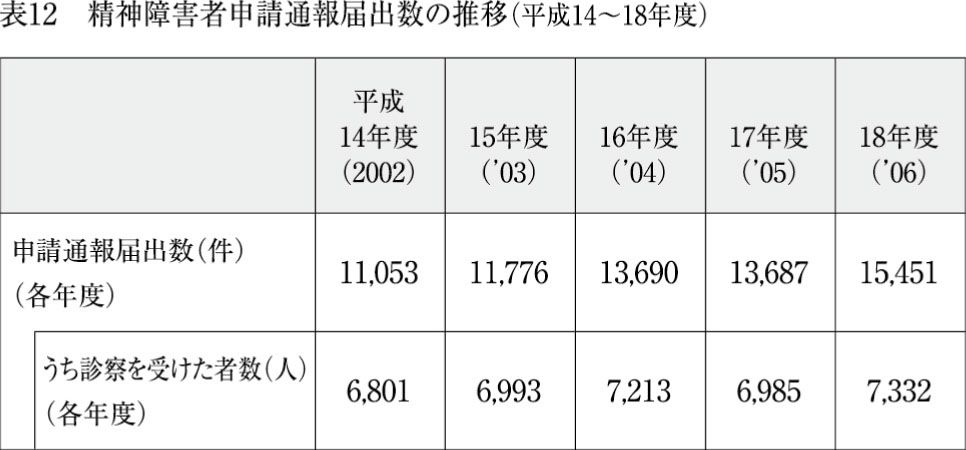
このデータは厚生労働省の「保健・衛生行政業務報告」に掲載されている。残念ながら、ここには実際に措置入院となった患者数は記載がない。ただし東京都衛生局の資料によれば、この診察を受けたものの中で措置入院となるケースは約九〇％なので、一年間に新たに措置入院となるケースは、六〇〇〇例あまりと推定される。
表13には、同じく厚生労働省の資料から、各年度の末における措置入院の患者数を示した。その数は二〇〇〇例前後で推移しているが、最近この数は減少傾向がみられている。年間の新しい措置入院による入院者数が約六〇〇〇名に及ぶにもかかわらず、年度末における措置入院の入院者数が二〇〇〇名前後ということは、措置入院した患者の多くは一年以内の早期に退院するか、一般の入院形態に切り替わっていることを意味している。
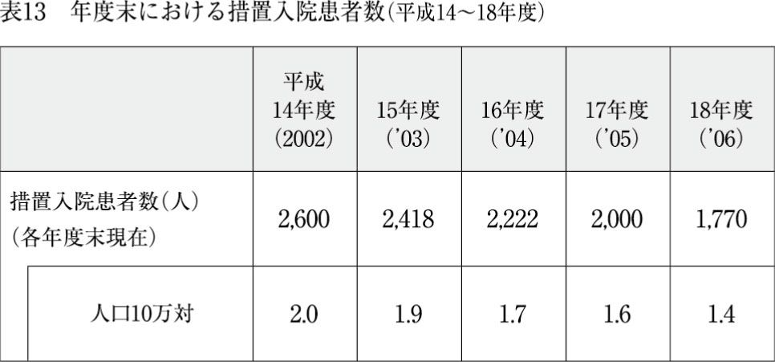
表14には東京都における措置入院の推移を示した。平成一八年度に東京都において措置入院のための診察を受けた例は一三八〇例に及び、全国の一八・八％を占めている。
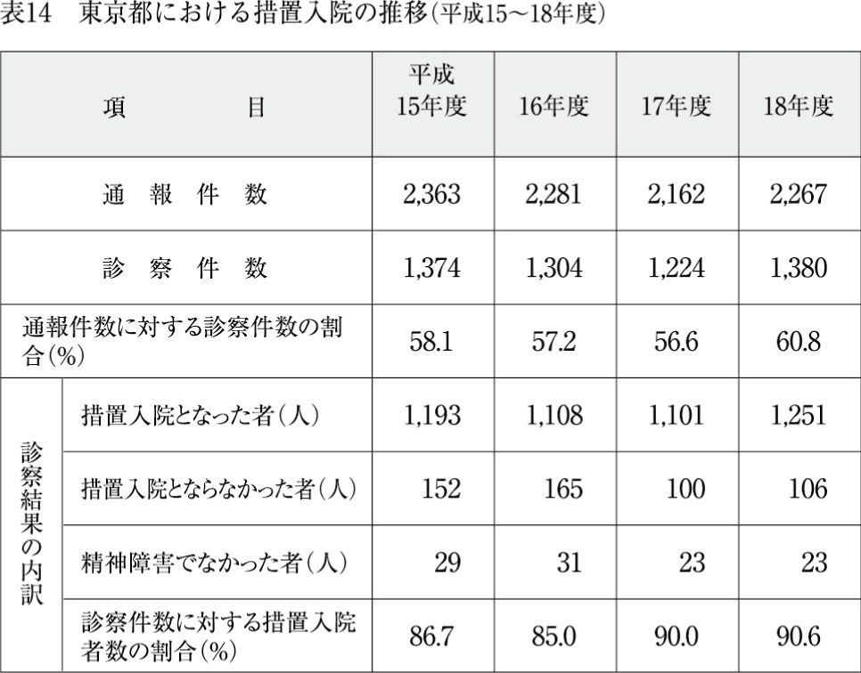
犯罪との関係についても一言触れておこう。医療観察法が平成一七年に施行される以前の時期において、重罪を犯して心神喪失あるいは心神耗弱と判断され不起訴となった精神障害者は、その大部分が措置入院となり精神病院に入院となっていた。このような患者の総数は年間約六〇〇～七〇〇名で推移しており、措置入院の約一〇％に相当している。
措置入院に関する詳細な資料は公表されていないが、こうしたデータから推測すると、重罪を犯した措置入院患者においても、その入院期間は必ずしも長期に及ぶものではないと思われる。臨床的な印象でも、措置入院患者は精神症状が安定した時点で、より強制力の弱い入院形式である医療保護入院に変更となることが多く、措置入院が長期に継続されるケースはごく一部であった。
その後の精神衛生法をめぐる動きに話をもどそう。一九五〇年の施行以来、精神衛生法は何度かの改正が行われているが、一九六五年にかなり大きく改正された。これは一九六四年に起きたライシャワー事件が直接のきっかけとなっている。この事件は、ライシャワー駐日アメリカ大使が統合失調症の少年に刺されて負傷したものである。
宣教師の息子として東京で出生したライシャワー氏は親日家として知られ、ハーバード大学の燕京研究所所長をしていた時、ケネディ大統領から依頼され駐日大使として赴任した。安保闘争の記憶も新しい一九六一年のことであった。
一九六四年三月、彼はアメリカ大使館門前で、統合失調症の一九歳の少年にナイフで刺され重傷を負った。
ちなみに彼はこの時に輸血を受け、「これで私の体の中に日本人の血が流れることになりました」と発言し、多くの日本人から賞賛を浴びたが、この輸血が元で肝炎に罹患する。このことから、日本における売血問題がクローズアップされることになった。
精神医療の領域においては、この事件をきっかけとして、精神障害者は危険であるという論調が強く打ち出され、精神衛生法の改正は管理的な側面が強くなった。
蛇足になるが、日本における精神科領域の法規は、ジャーナリズムをにぎわす事件がきっかけとなって成立したものが多い。精神病者監護法は相馬事件がきっかけとなり、精神衛生法の改正はライシャワー事件の影響が明らかである。さらに後述する精神保健法は、精神病院の不祥事である宇都宮病院事件がきっかけとなったものであり、医療観察法は池田小事件に対する激しい世論から生まれたものであった。
この一九六五年の改正は以下のように多方面に及んでいる。管理的な側面が強くなった点については改悪であると批判されたが、精神衛生センター（現在の精神保健福祉センターの前身である）の設立や公費負担制度の開始は、精神障害者にとってむしろプラスに評価してよい面が多かった。
次にこの改正における主要な変更点を示す。
１．保健所を地域における精神保健行政の第一線機関として位置づけ、在宅精神障害者の訪問指導、相談事業を強化する。
２．保健所に対する技術指導などを行う精神保健に関する技術的中核機関として、精神衛生センターを設ける。
３．在宅精神障害者が医療に受診しやすくするため、通院医療費の二分の一を公費負担する制度（通院医療費公費負担制度、現在の自立支援医療）を新設する。
４．警察官、検察官、保護観察所長および精神病院の管理者について、精神障害者に関する通報・届出制度を強化する。
５．措置入院制度の手続きについて、患者が無断退去した場合、病院管理者に警察への届出義務を課す。自傷他害の程度が著しい精神障害者については、緊急措置入院制度を設ける。
ここで精神衛生法の改正のきっかけとなったライシャワー事件についてもう少し詳しく述べておこう。
加害者の武村正樹（仮名）は、犯行当時一九歳の少年であった。一九六四年（昭和三九年）一月二〇日、彼はポリエチレンの缶にガソリンをつめ、これを風呂敷に包んで持ち、アメリカ大使館の塀を乗り越えて侵入した。彼は大使館内のアパートのロビーにガソリンを散布し点火したが、火は大使館の職員によって消しとめられ、実害は少なかった。
このときには逃げおおせた彼は、三月二四日、再び大使館に侵入し、本館ロビーにいたライシャワー大使をナイフで突き刺して重傷を負わせた。
武村は静岡県の出身である。両親は靴店を経営していた。彼は五人きょうだいの末子であった。事件当時、彼の兄、姉はみな独立して会社勤めをしているか、結婚して主婦になっていた。家族に精神障害はみられていない。
学校時代、武村はおとなしく素直な子供だった。成績もよく学校を休むこともほとんどなかった。
彼の様子がはっきり変化したのは、中学三年のときだった。学校の成績が急に下がり、家族ともあまり話をしないようになったのである。それでも武村は商業高校に合格して進学した。
二学期になり、彼は学校を休むようになる。何も理由を言わずに、一日中ふとんをかぶって寝ているような状態が持続した。学校ではトラブルはなく、教師の側にも思い当たることは特になかった。
二年に進級することはできたが、学校にはまったく登校できなくなった。武村は一日中部屋に閉じこもり家族のだれとも話をしなかった。生活はだらしなく、毎日のように自慰行為にふけっていた。しばらくすると家の中で暴れるようになり、物を壊してまわり、「おれはどうしたらよいのだ。友達も幸福もみななくなってしまった」といって壁に身体をうちつけて泣きわめくようになった。
事件の前年、武村は自民党の政治家である三木武夫氏の自宅を突然訪問した。その理由は、自分が世の中に知らせなくてはならないことを思いついたからだという。彼の考えとは、次のようなことだった。
一つは、「世の中で一般に読書に適した距離は眼前三〇センチメートルというが、それはあやまりで、五〇センチメートルが適当である」ということ、二つめとして、「学校で女子に強制的に海水浴をやらせるけれども、男女が一緒に泳ぐのは風紀をびん乱するからよくない」ということ、さらに、「教室で男女の机の配列を男子を前半分、女子を後ろ半分に並べるようにすることが、性道徳のために必要である」ということなどだった。
この頃彼は戦記物に熱中するようになるとともに、独り言を言ったり、テレビに自分のことが映されたとか、町中に自分の顔写真が貼り出されていると訴えたり、被害妄想による不可解な言動が目立つようになった。
武村は三木氏襲撃を計画したが、三木氏に会うことができず、果たせなかった。そのため、ターゲットを駐日大使に変更した（放火については、彼は犯行を否認した）。事件の約ひと月前、彼はアメリカ大使館に行き、大使館員に自分の手紙を大使に渡すように依頼している。
事件の動機について、彼は、「自分が事件を起こせば、自分の考えを人々に知ってもらえる」とし、ライシャワー大使を襲撃すれば、「外国の人にも知ってもらえるから」だと述べた。
犯行後、武村の精神鑑定を担当した当時東大精神科の教授であった秋元波留夫氏は、破瓜型の統合失調症であると診断し、責任能力はないと結論した。
この後、精神衛生法に代わる新法である「精神保健法」が成立することになるのだが、その契機となったのが、一九八四年に起きた宇都宮病院事件であった。この事件においては、看護職員の暴行により患者が死亡したことをきっかけとして、人権を無視した精神医療の実態が明らかになった。
この宇都宮病院は、暴力傾向の強いいわゆる「処遇困難」な患者を引き取ってくれる病院として、関東近辺の医療関係者にはよく知られていた。看護スタッフの暴行による管理が日常的であった病院の実態を知りながら、多くの大学病院、公立病院、あるいは福祉事務所は、宇都宮病院に患者を送り続けていた。他にそうした患者を引き受ける施設はなかったのである。
この事件をきっかけとして、国内のみならず海外からも、日本の精神医療の改革への要求が高まった。そのような状況下で、精神衛生法の改正が行われ、「精神保健法」と名称を変え一九八七年に施行されたのである。
精神保健法における主な改正点は以下の通りである。
１．精神医療の専門の資格として、精神保健指定医の制度を設けた。
２．入院制度を変更し、本人の同意に基づく任意入院の制度を設けるとともに、従来の同意入院を医療保護入院とあらため、入院時の精神保健指定医の診察、退院時の知事への届け出義務を定めた。
３．入院時に書面による患者の権利等の告知制度を義務づけた。
４．入院治療における隔離、拘束など患者の行動制限に関する規定を厳格にした。
５．入院の必要性や処遇の妥当性を審査する精神医療審査会制度を設けた。
６．精神障害者の社会復帰の促進を図るため、精神障害者社会復帰施設に関する規定を設けた。
精神保健法は一九九五年に「精神保健福祉法」（「精神保健及び精神障害者福祉に関する法律」）と名称が変更となり、内容も改正された。この改正においては、精神障害者に対する福祉政策を充実するとともに、人権についてきめの細かい配慮がなされるようになった。
しかしながらここにいたっても、触法精神障害者に関する処遇については、新たな措置はみられていない。従来通り、わが国においては司法と医療の協力関係はまったくといっていいほどとられることはなく、たとえ重罪を犯した患者であったとしても、いったん精神病院に処遇が委ねられると、司法当局は一切関与することはなかったのである。
このような状況に変化をもたらしたのは、池田小における児童殺傷事件である。
重罪を犯した精神障害者の処遇は、司法的な問題であると同時に、精神医療の問題でもある。彼らをどのように裁くかということは社会的に重要な課題であるが、その治療をどうするかという点も忘れてはならない。触法精神障害者は、犯罪の加害者であると同時に病に苦しむ人でもある。そのどちらか一方のみを強調することは適当でない。
欧米においては、触法精神障害者の処遇に関して、司法機関と医療施設がお互いに協力しながら解決を図っていく方法がとられてきた。もちろん、時代時代によって、患者の処遇は様々であった。保安に力点が置かれることもあれば、障害者に対する医療の側面が強調されることもあった。
そうした中で、例えばイギリスでは、「特殊病院」や「地域保安病棟」などの触法精神障害者のための専門施設が充実し、一般の精神科患者とは別に処遇されるようになった。またこれとともに、司法精神医学という新たな分野が発展してきた。
加えて、欧米では犯罪行為を犯した精神障害者の強制入院の手続きは裁判所の命令で行われ、重大な犯罪に関しては、退院の決定や外来におけるフォローアップについても、司法や行政機関が強い権限を持つことが一般的となっている。
一方わが国ではどうかというと、触法精神障害者の問題は、タブーとして片隅に追いやられ、現実に即した真剣な議論はほとんど行われてこなかった。精神障害者が重大な犯罪を犯したとき、ジャーナリズムはいっときは大きな問題として扱うが、たいていすぐに忘れられてしまう。
一方で、人権派の弁護士や精神科医は、触法精神障害者に対して特別な規定をもうけることに、常に反対を唱えてきた。精神障害者が犯罪を犯したというだけで、長期間予防的に拘禁する法律は、人権無視でとんでもないものだというのである。
しかし、このようなロジックは巧妙な議論のすり替えであり、問題の先送りであった。精神障害者を処遇するにあたって人権を重視することに異論のある人はほとんどいないであろう。しかし問題はその点ではない。第一章で示したように、毎年数百人に及ぶ精神障害者が重大犯罪を犯している。それにもかかわらず、彼らに対する適切な治療施設が存在しないことがもっとも大きな問題なのである。
司法当局の対応にも、納得のいかない点が多かった。これまで述べてきたように、医療観察法が成立するまで、触法精神障害者は措置入院の制度によって、すべて精神病院に一任されていた。いったん精神病院に入院すると、以後司法機関はまったく関与することがなかった。
つまりどんな重罪を犯した患者においても、病院からの退院、あるいは通院に関するフォローアップは、すべて病院の一存に任されていた。したがって、殺人事件のような重大犯罪を犯した患者が心神喪失によって精神病院に入院となっても、わずか数カ月で退院するということもしばしば起こっていた。
このような状況に対しては、各方面から異論があがっていた。病院は無責任に再犯の危険が大きい患者を野に放っているのではないか？ 短期間できちんとした治療は行われたのか？
もっとも精神医療の立場からすれば、そのような批判は的外れとは言わないまでも、納得がいかないものであった。というのは、病院の目的は疾患の治療である。したがってたとえ触法歴があったとしても、病状がよくなれば外出も許可をするし、退院させることもある。重罪を犯した既往があっても、無期限に退院を延長することは困難である。さらに退院後の外来通院を義務づけることもできない。
もし長期の強制入院がどうしても必要ということならば、そのための法律的な根拠が必要である。単に再犯の恐れがあるというだけで、病院がいつまでも患者の行動を制限するならば、それこそが人権的な問題となる。
ところでわが国において触法精神障害者たちは、実際にはこれまでどこで治療を受けていたのだろうか。
彼らの一部は比較的医療スタッフの充実した国公立の精神病院に入院していた。また一部の患者は、リスクの高い患者の受け入れを拒まない私立の精神病院で治療を受けていた。その代表的なものが宇都宮病院であり、宇都宮病院におけるスキャンダルは、単に一部の経営者や医師による特殊な問題ではなく、日本の精神医療の構造的な問題点を露呈するものであったのである。
過去に日本においても、触法精神障害者に関する法律的な規定を設けようという動きがなかったわけではない。その一つが戦前からみられた保安処分制定の動きである。
保安処分とは、「犯罪者あるいは犯罪行為を行う危険性がある者」を対象に、将来の再犯を防止することを目的として、刑罰とは別に処分を追加することをいう。一九世紀にドイツの刑法学者クラインによってはじめて提唱されたものである。
戦前の刑法改正案においては、「公安上必要があるときには、裁判所は責任無能力者、限定責任能力者に監護処分などの保安処分を言い渡せる」という提案が行われた。戦後も数回にわたって、何回か法務省からは保安処分のプランが出されている。
一九八一年（昭和五六年）に法務省が作成した「保安処分の制度の骨子」は次のような内容であった。
１．心神喪失者、心神耗弱者が殺人などの重大犯罪を犯したとき、保安処分として治療処分を行う。
２．再犯の恐れがなくなったとき、治療処分を解除する。
３．治療施設としては、国立の精神病院を用いる。
この改正案の中身は、今日の医療観察法の内容にかなり近いものである。しかし当時は法曹関係者や人権派の精神科医、ジャーナリズムから強い反対が起き、保安処分が設けられるにはいたらなかった。
その当時もっとも危惧されたのは、保安処分の国家による濫用である。かつて旧ソ連などでは反体制派を精神病患者として長期にわたり収容所に幽閉する例があった。そのため、保安処分の対象が政治犯まで拡大する危険性が危惧された。
また一般的な意見としても、精神障害者にこのような人権の制限を加えることは、個人に対する国家の弾圧につながるという考えに同調する人は多かった。医療観察法の制定にあたっても、弁護士会からは、同様のロジックによって、繰り返して強い反対の声があがったのである。
さらに、精神医学自体にも大きな問題があった。
一九五〇年代、六〇年代に大流行した「反精神医学」は、イギリスの精神科医レインをはじめとして、精神疾患を疾病として認めず、患者を社会的なシステムによる抑圧の犠牲者とみなした。そして反精神医学者たちは、それまでの権威的な医師─患者関係を否定し、治療的なコミューンの建設を各地で行った。
日本においても、反精神医学を掲げる若手の医師たちのグループは新左翼的な政治運動と結びつき、大学の精神科病棟を占拠して自主管理したり、従来の医学的な研究活動を「犯罪的な内容である」と全否定したりした。
しかし、そうした彼らの試みは、最終的にはどれも無残な失敗に終わっている。
もっとも、反精神医学が学問的に否定された現在においても、「精神疾患は脳機能の障害ではなく、社会的な要因に対する個人の心の反応である」というその理念を信奉している「専門家」たちは存在している。彼らにしてみれば、どんな理由があろうとも、精神障害者を国家権力によって拘禁することは許しがたいことになる。
宇都宮病院問題をきっかけとした精神病院のスキャンダルは国際的な問題にまで発展し、その後一九八七年の精神保健法の制定にいたったことは前章で述べた。この法律において、精神障害者の人権への配慮と精神障害者の処遇の改善、精神病院の開放化が大きな方針として打ち出された。
だがその一方で、精神病院協会などを中心として、病院の開放化になじまない「危険な」精神障害者が少なからず存在しているという議論が盛んに行われるようになった。
欧米の先進国と比較して、日本においては私立の精神病院の比率が際立って高い。このため、こうした私立の精神病院の経営者たちには、触法歴のある患者や暴力傾向の強い患者など「採算の合わない、リスクの高い患者」を自分たちがやむをえず引き受けているという意識が強かった。
かといって、治療施設や人員面で優遇されている国公立病院の士気が高いというわけでもなかった。事実、松沢病院など一部の例外を除いて、民間病院から治療の困難な患者の転院を国公立病院に依頼しても、なかなか受け入れてもらえなかったのである。
こうした現場の声を背景として、厚生省（当時）は、一般の精神病院で処遇が困難な精神障害者を「処遇困難者」と呼び、彼らのための特別な治療施設である「処遇困難者専門病棟」を設立しようとする方向を示した。そのために、石川県立高松病院の道下忠蔵を班長とする研究班が組織され、「処遇困難者」に関する実態調査が開始された（一九八八年）。
道下らは全国の精神病院を対象に処遇困難者についての調査を行った。処遇困難者の定義は、「その者の示すさまざまな病状や問題行動のために、病院内での治療活動に著しい困難がもたらされるような患者」というものであった。この定義からわかるように、処遇困難者には暴力傾向の強い患者が含まれるものの、純粋な病状の重症度や病棟運営における問題もみられ、かなりの曖昧さを持つものになった。
研究の結果、道下らは、全国で九五〇例の処遇困難者が存在すると報告し、回収率から補正すると全国の精神病院に約二〇〇〇例の処遇困難者が入院していると結論した。彼らの入院中の問題行動としては、暴力行為、脅迫、器物破壊が多かった。
図７に、集計した問題行動の頻度、図８に、対象となった患者の院内での処遇の状況を示した。
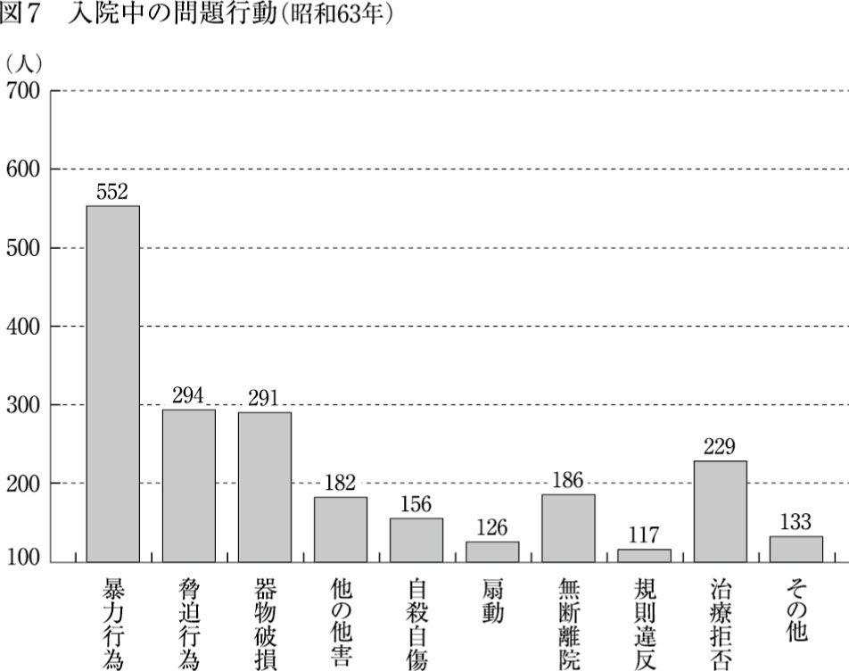
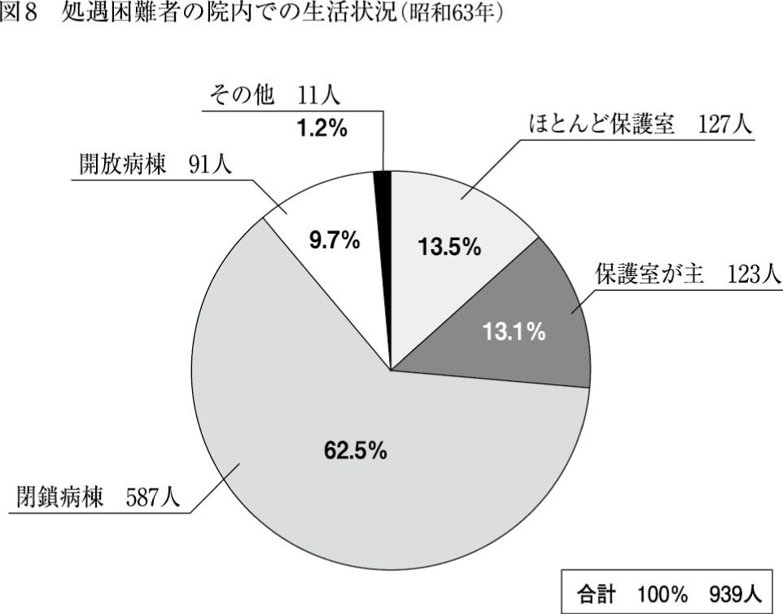
対象者の九〇％は閉鎖病棟に入院しており、全体の四分の一が保護室（患者の鎮静や保護に充てるために設けられた個室で、通常施錠して使用する）をひんぱんに使用していた。
この処遇困難者に関する議論も、精神障害者を不当に貶め、その人権を侵害するものであるとして、大きな反対が浴びせられた。厚生省は処遇困難者の専門病棟の設立を検討したにもかかわらず、反対者からのたび重なる脅迫や座り込みなどの活動のために頓挫している。
こうした状況において勃発したのが、附属池田小事件である。
二〇〇一年六月八日、大阪府池田市で大阪教育大学附属池田小学校に侵入した宅間守（当時三七歳）は児童八名を殺害し、児童など一三名に傷害を負わせた。宅間は殺人罪などで逮捕・起訴され、二〇〇三年八月に大阪地方裁判所において死刑判決を言い渡された。宅間の死刑は、すでに二〇〇四年に執行されている。
この事件は多方面にわたって日本の社会に深刻な影響を残した。その一つは、日本社会における治安の悪化、犯罪の凶悪化を強く印象づけるものとなった点である（実際には凶悪犯罪は必ずしも増加しているわけではない）。
さらにこの事件は、わが国の精神医療に対する信頼を大きく損なうものとなった。言葉を換えれば、触法精神障害者に対するこれまでの行政的な無策のつけが、池田小事件において露呈したとも言えるかもしれない。
加害者の宅間は精神科に通院歴があり、措置入院患者として入院したこともあった。すでに彼は高校を中退したころより、不安感や倦怠感を訴え、精神科に通院を開始している。一九八四年、婦女暴行事件を起こした宅間は、「幻聴が聞こえる」などと精神障害を装い一時精神科に入院したが、責任能力はあると判断され起訴された。
宅間は一九九九年、勤務先の小学校で精神安定剤入りの茶を教師四人に飲ませたことによって、傷害容疑で逮捕された。しかし、簡易鑑定において「統合失調症（当時は、精神分裂病）の疑い」と診断されて不起訴となり、兵庫県西宮市の精神科に措置入院となった。
もっとも入院先の担当医は統合失調症であることを否定した。じつはこの時点で、警察は宅間を再度拘留すべきであった。
池田小事件において、逮捕当時宅間は、「池田駅前のバス停で、包丁で一〇〇人ぐらいメッタ切りにした。学校には行っていない」などと精神障害を装おうとしていた。しかし精神鑑定の結果は、「人格障害」であり、完全責任能力を認めるものだった。宅間自身も、取り調べに対し、以前の事件では精神病を装ったことを認めている。
この事件をきっかけとして、「危険な精神障害者を野放しにするな」という議論がジャーナリズムを中心に声高に唱えられるようになった。そうした声を背景に、政府は触法精神障害者に関する新法の準備に取りかかった。それが「医療観察法」である。
もっともこのような議論の流れには、疑問な点が多い。そもそも宅間は責任能力のない統合失調症などの精神病ではなく、人格障害という診断だった。わが国においては、人格障害は責任能力があるものと見なされ、刑罰の減免の対象とはならない。
ここで人格障害について、簡単に説明しておこう。
これは従来は精神病質（サイコパス）と呼ばれていたもので、最近の診断基準では「パーソナリティ障害」と名称が変更されている。人格障害といった場合、それは人格が正常から大きく偏っていることを示すが、必ずしも犯罪性の高いものばかりではない。
人格障害の中で、攻撃性、衝動性が強く、反社会的行動に走りやすい一群を「反社会性人格障害」と呼んでいるが、宅間はこれに相当すると考えられる。
宅間に関しては、彼の詐病を見抜けなかった精神科医による以前の診断は問題にすべきであろうが、池田小の事件は精神医療が不備だったために起こったとは言えない。むしろ、簡単に不起訴として精神病院に宅間の扱いをゆだねた捜査当局の姿勢が大きな問題だったと思われる。宅間が統合失調症であることが否定された時点において、司法当局が事件として立件していれば、池田小の事件は防げていた可能性もある。しかし現実には、捜査当局はいったん不起訴とした事件を再度立件することはほとんどないのである。
処遇困難者に対する専門病棟の設立に頓挫していた行政当局は、池田小事件による世論やジャーナリズムによる議論の高まりを利用し、事件の二年後に触法精神障害者に対する新法を成立させた。これが「医療観察法」（正式な名称は、「心神喪失等の状態で重大な他害行為を行った者の医療及び観察等に関する法律」）である。
弁護士団体や一部の精神科医はこの法律の制定に批判的な意見を表明したが、池田小事件をめぐる激しい非難の声の前には、強く反対することはできなかった。
医療観察法において、事件の被疑者は「対象者」と呼ばれる。対象者は次のように規定されている。すなわち、
①殺人、放火、強盗、強姦、強制わいせつ、傷害など重大な他害行為を行ったものの中で、
②心神喪失者又は心神耗弱者と認められて不起訴処分となったか、裁判の段階で心神喪失を理由として無罪が確定するか、心神耗弱を理由として実刑とならないことが確定し、
③さらに医療観察法における医療によって精神障害の病状が改善し、同様の他害行為の再発を防止し社会復帰することができる者
としている。
検察官が地方裁判所に対しこの制度の利用を申し立てることによって、医療観察法の手続きが開始される。検察官は、前述の①、②の要件を満たす対象者に対し、原則として医療観察法の開始の申請をすることになっている。
第三章で述べたが、この対象者は、これまでの精神保健福祉法のもとでは、裁判にいたる過程で措置入院に該当したケースに相当する。
問題なのは、③の規定である。ここでは、医療観察法の対象として、治療可能性がある疾患だけに制限を加えている。したがって、薬物療法などによる有効な治療法が確立していない人格障害（パーソナリティ障害）、知的障害、発達障害などは、この法律の対象にならないと見なされているのだ。
治療の可能性がないと判断されると、彼らは不処遇の扱いとなる。しかしながら、専門家でない検察官にとっては、この点を判断することは困難である。
検察官が裁判所に申し立てを行ってからは、次のような手続きをたどる。
裁判所は対象者の精神鑑定を行うために、精神病院に入院させる（鑑定入院命令）。この時、対象者は付添人として弁護士を選任することができる。鑑定においては、表15に示すことが求められる。
表15 鑑定嘱託事項
●対象者が精神障害者であるか。
●対象者が精神障害者である場合、その精神障害は、対象行為を行った際の心神喪失又は心神耗弱の状態の原因となった精神障害と同様のものであるか。
●対象者が対象行為を行った際の原因となったものと同様の精神障害を有している場合、その精神障害は治療可能性のあるものか。
●対象者の精神障害について治療可能性が認められる場合、本法による医療を受けさせなければ、その精神障害のために同様の行為を行う具体的・現実的な可能性があるか。
●以上をふまえ、対象行為を行った際の精神障害を改善し、これに伴って同様の行為を行うことなく、社会に復帰することを促進するためにこの法律による医療を受けさせる必要があるか否か。
対象者の鑑定入院とともに、裁判所は精神科医である精神保健審判員を任命する。裁判官と精神保健審判員は合議体を形成し、両者で通常の裁判における裁判官の役割を担うことになる。この合議体によって、対象者の処遇が決定される。
この他、医療観察法の手続きにおいては、社会復帰調整官と精神保健参与員が任命されることになっている。社会復帰調整官は法務省管轄の保護観察所の職員で、対象者の生活環境の調査を行い合議体に報告する。精神保健参与員は、通常はソーシャルワーカーの資格を持つ者から任命され、対象者の処遇について専門的立場から意見を述べる。
対象者の精神鑑定書が提出されると、合議体は対象者の処遇の決定を行う。この決定には、入院による医療を受けさせる決定（入院決定）、通院による医療を受けさせる決定（通院決定）、医療観察法による医療を受けさせない決定（不処遇）の三種類がある。不処遇になると、再び司法が関与することにはならず、一般の精神科医療を受けるケースと、地域や家庭に戻るケースがある。図９に医療観察法のプロセスについて示した。
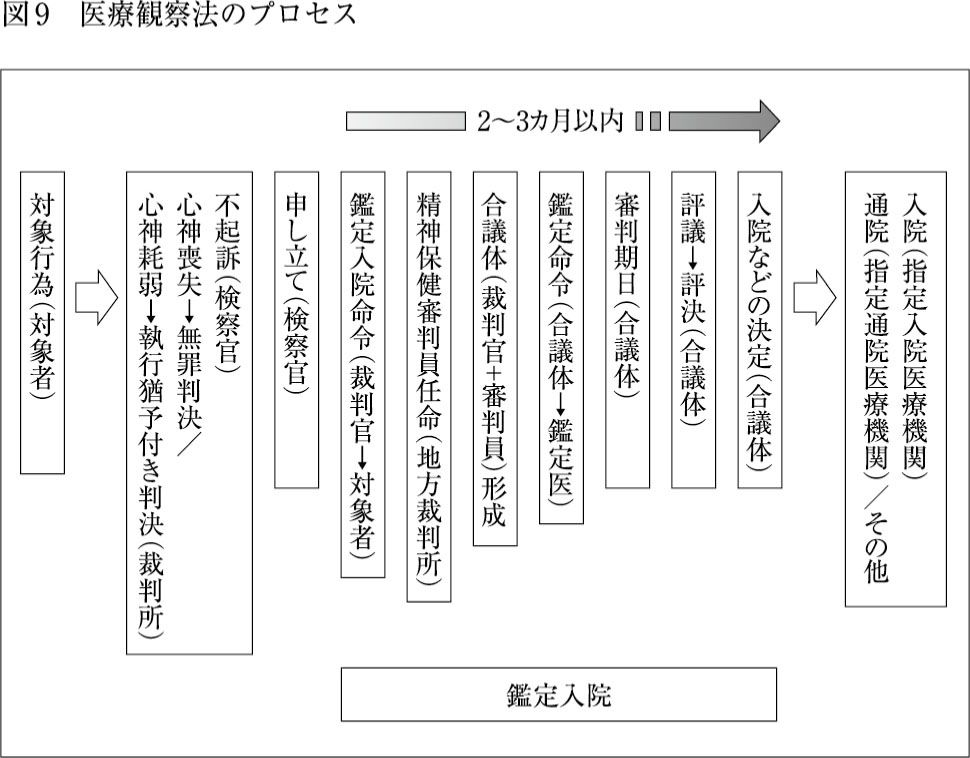
医療観察法における医療は、厚生労働大臣が指定する指定入院医療機関または指定通院医療機関で行われる。これらを併せて「指定医療機関」と呼んでいる。
指定入院医療機関は、原則として国、都道府県が開設する国公立病院のなかから指定され、人的・物的資源を集中的に投入し、専門的で手厚い医療を提供することが定められている。指定入院医療機関における入院は原則として一年半までである。
精神医学的な見地からは、この一年半という期間は決して長いものでなく、重症の精神障害を治療する期間としては不十分な印象が大きい。しかしながら現実には、地元の反対などによって指定入院医療機関の開設がなかなか進まず、病床不足のため早期に退院を促されることがひんぱんにみられている。
二〇〇五年（平成一七年）に医療観察法が施行された際、行政当局は約七〇〇床の指定入院病床を整備するという方針を示した。法の施行から三年あまり経過した現在、稼働中の病棟は全国でその六割程度しかなく、新たな入院が非常に難しい事態となっている。これを受けて厚生労働省は各都道府県への協力を呼びかけているが、簡単に解決はつきそうにもない。
そもそも、七〇〇床という病床数の設定が過少であった。医療観察法における指定入院病床は、イギリスの類似施設である「地域保安病棟」をモデルに開設されたものである。地域保安病棟は、巨大な収容施設と化した「特殊病院」の反省から、地域に根ざした小規模で医療的に手厚い治療機関を作り、触法精神障害者の社会復帰を目指すものであった。
イギリス（イングランドとウェールズ）において、地域保安病棟は約一〇〇〇床あり、さらにこれより管理の厳重な特殊病院も一〇〇〇床以上の病床を持っている。これを人口比で換算すると、日本においては、少なくとも五〇〇〇床の触法精神障害者のための病床が必要という計算になるが、現状においてはとうてい現実的ではない数字である。
医療観察法による医療の特色として、多職種チームによる手厚い治療であることがあげられる。具体的には、医師、看護師、精神保健福祉師、作業療法士、臨床心理士から構成されるチームが、それぞれの専門性に応じて対象者の評価を行い、治療計画を作成する。
医療観察法による指定病棟は、三三床からなる病棟と一六床程度の小規模病棟の二つのタイプがある。いずれの病棟も全室個室である。病棟は治療のステージに応じて、急性期ユニット、回復期ユニット、社会復帰ユニットと機能別に分かれている。さらに病棟内に集団療法室や作業療法室が設置されている。
医療観察法による地域処遇（裁判所の命令によって一定期間強制的に通院医療を行うこと）は、入院医療機関からの退院決定によるものと、審判において通院決定を受けたものがある。通院医療は社会復帰調整官が中心となり、治療の継続をはかることによって対象者の社会復帰を促すものである。
通院による保護観察の期間は通常三年とされているが、さらに二年の延長が可能である。しかしここでも通院医療をマネージする社会復帰調整官のマンパワーの不足は明らかであり、今後十分な運営が行われるかどうか疑問が多い。
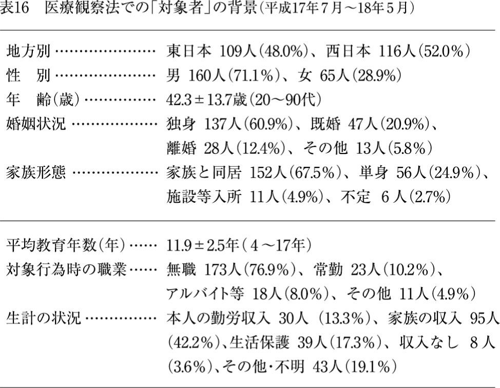
性別では男性が七一・一％を占めた。対象行為時の平均年齢は四二・三歳で、年代別では三〇歳代がもっとも多かった。家族形態では家族と同居が三分の二を占めた。婚姻状況は独身が多かった。
表17には、対象者の過去の犯罪歴および精神科での治療状況を示した。
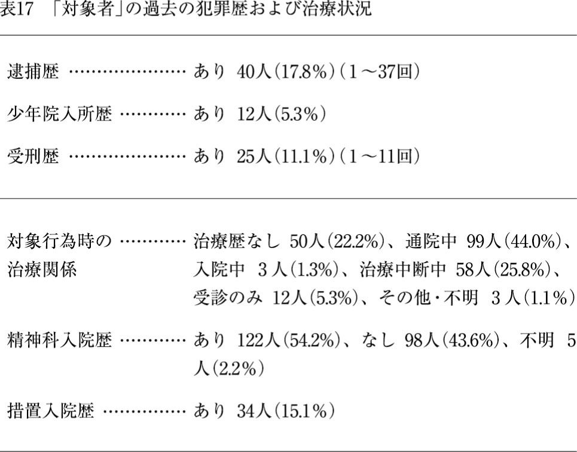
逮捕歴、受刑歴のある者の比率は少なかった。対象行為時において約半数の患者が精神科治療を受けており、入院歴のある者が半数を超えていた。この数字は、対象者に対して精神科の治療が適切に行われたら、犯行に至ることを防げた可能性を示している。
表18には、対象行為および主診断（診断名については第一章を参照）の内訳を示した。
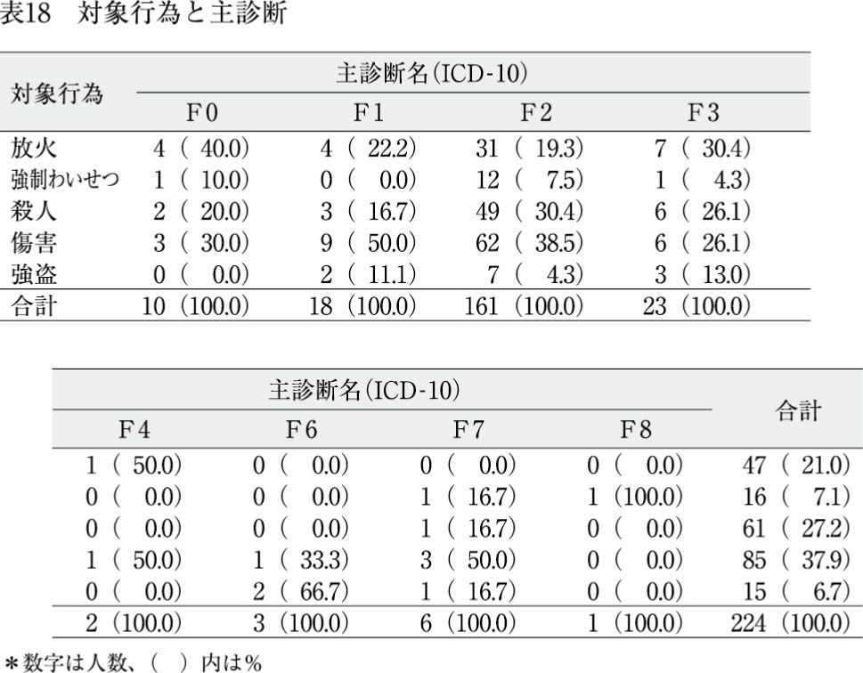
対象行為の中では、傷害の割合がもっとも多かった。また診断的には統合失調症とその関連疾患（ＩＣＤ‐10においてはＦ２）が七一・九％ともっとも多く、次いで気分障害（同Ｆ３）が多かった。
表19には対象行為と審判における決定内容を示した。
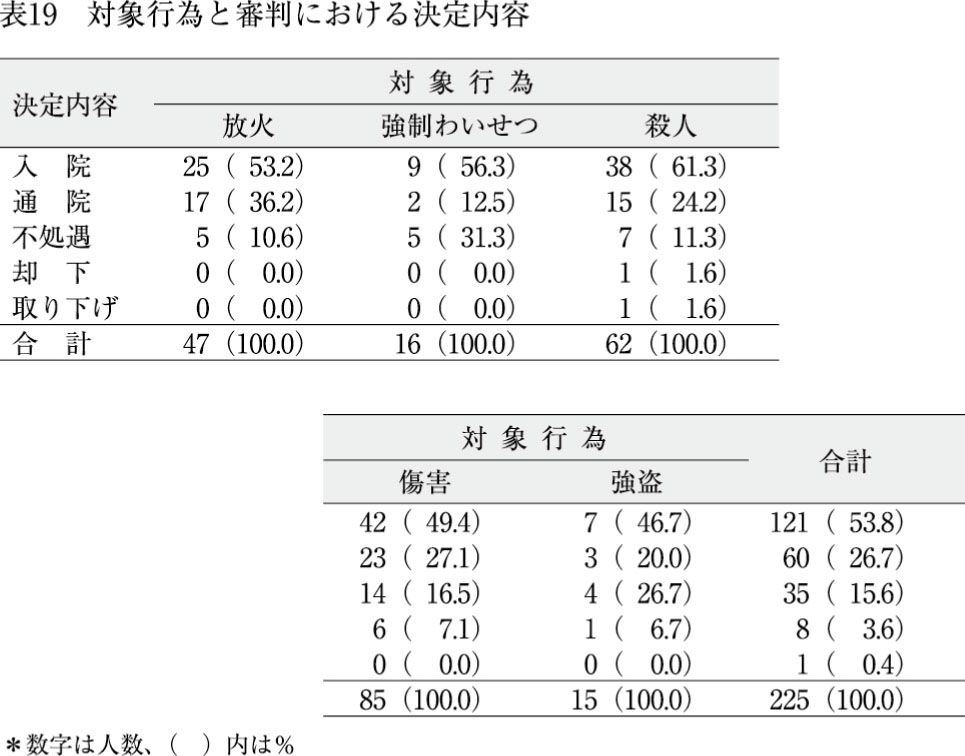
全体の五三・八％にあたる一二一例において入院の決定が行われた。通院決定は六〇例（二六・七％）で、不処遇（この法律による医療は行わないとするもの）は三五例（一五・六％）、却下（責任能力があるとするものなど）となった者も少数例みられた。却下の場合は再び司法の手に委ねられることになる。
『犯罪白書』においても、平成一八年における三五一例の対象者の決定内容をみることができる。その結果は、入院決定は一九一例（五四・四％）、通院決定は八〇例（二二・八％）、不処遇六八例（一九・四％）、却下九例（二・六％）などであった。
平成一八年の刑事事件における精神障害による不起訴および執行猶予の総数は三六八例であり、その多くが医療観察法の対象となったことがわかる。
これまで述べたように、医療観察法は精神保健福祉法における措置入院を引き継ぐ制度であるが、医療面においても処遇面においても、措置入院の制度における欠陥をかなりの部分カバーしている。今後、指定病床の不足、通院医療における不十分なスタッフなどの問題が顕在化してくることが予想されるが、精神医療の質の向上に寄与した点において、一定の評価は与えてもよいだろう。
しかしながら、医療観察法に対する批判は後を絶たない。私自身、医療観察法の精神保健審判員を何回か務めたが、付添人の弁護士の多くが、医療観察法による医療について否定的にとらえていることには閉口した。
精神医療の現場においては、不適切な誤った治療、あるいは不十分で短すぎる入院期間が原因で、十分な症状の改善がみられず、病気の再発や問題行動をもたらすことをわれわれはしばしば経験している。病気が重症であるほど、あるいは患者の社会的条件が劣悪であるほど治療は困難となるが、多くの精神病院においては、そういう「治療の難しい」患者の治療はできるだけ避けようとしていることが現実にみられている。
医療観察法による入院は、治療が困難な患者に対して、マンパワーの整った良好な医療環境において、有効な治療を行える可能性があることを弁護士会の方にも理解してほしいものである。
日弁連は、この法律の施行前から、触法精神障害者に対する特別な治療的な枠組みに反対し、何よりもまず、一般の精神医療の改善や充実を図るべきであると主張してきた。多くの弁護士はこれに賛同しているようであるが、この議論は一種の詭弁である。
一般の精神医療を充実させることは必要であるが、だからといって触法精神障害者の治療をおろそかにしてはならない。この両者は片方だけあれば十分というようなものではなく、ともに補いあうものである。
政治の世界では、民主党は医療観察法に一貫して反対してきた。彼らのロジックは、弁護士会と大同小異である。次は民主党のホームページからの引用である。
心神喪失者等による重大犯罪については、安易な精神鑑定、刑事施設での精神医療の不備、地域における精神保健福祉体制の未整備などの問題があるが、政府提案の医療観察法案は、これら本質的な問題に対して何の解決策も示していない、かえって精神障害者への差別・偏見を助長する危険性のあるものであった。
触法精神障害者の問題は、重大な行政的・福祉的な課題である。「人権」をとなえて思考停止に陥ることなく、精神医療の実態に即した議論を期待したい。
これまで述べてきたように、触法精神障害者に対する法律的な取り扱いは、刑法三九条を基本的な枠組みとしている。重罪を犯した犯罪者であっても、「精神障害に罹患したことによって、理性的な判断能力をはたらかせることができず、自分の行動をコントロールできない」場合、刑事的な処罰を減免するというものである。
このようなコンセンサスは最近になって成立したものでなく、日本においても海外においても、時代時代によって細部は異なるものの、古代から認められていたものであったことは第二章に記した。
しかしながら、刑法三九条に対しては、様々な立場から異論が唱えられている。凶悪な犯罪が精神障害者によって起こされると、多くのジャーナリズムは声を合わせて刑法三九条を批判する。このような犯罪者を野放しにしてよいのか、あるいは被害者のことを考えれば、たとえ精神障害者であったとしても処罰するべきではないか。
犯人が精神障害者で、善悪の判断ができない状態であったことを認めたとしても、犯罪が起こった事実には変わりはない。それなのに、どうして犯人を処罰しなくてよいのか？ 多くの国民も、マスコミが用いるこうしたロジックに共感しているように思える。
久坂部羊氏の小説『無痛』（幻冬舎）は、刑法三九条をテーマの一つにしているが、次の場面は統合失調症の青年に息子を殺害された遺族が、加害者の家族を糾弾するシーンである。
「仮に病気があったとしても、尊い人間の命を奪った者が、罰せられないなどということがあってよいものでしょうか。考えてもいただきたい。いきなりナイフで他人の心臓を刺すような人間がまともであるわけがない。そんな罪を犯すのは、異常者に決まっています。異常者なら危ないから、なおさら極刑にすべきです。それが市民の安全を守る道です」（中略）
「自分が産んだ出来損ないの始末は、自分でつけぇ」
「人の息子を殺しといて、ようぬけぬけと出てきたな。ちょっとでも悪いと思うてんねやったら、あんたも息子といっしょに死ね！」
「そうや、死ね！ お前らキチガイは人類の敵じゃ。皆殺しにしたらええんじゃ」
さらに、こうした観点とはまったく異なるが、刑法三九条の規定は、精神障害者を一人前の人間として認めず差別する内容であるので、廃止すべきであるという主張もみられる。つまり精神障害を理由として刑罰を減免することは、精神障害者を一人前の人間扱いしておらず、一般の人より劣った存在としてみなしているのだというのである。
かつて刑法四〇条には、「瘖唖者の行為はこれを罰せず、又はその刑を減軽す」という規定があった。「瘖唖者」とは、先天的あるいは幼少時からの聴覚障害によって言語機能が発達しなかった者を指す。医学の発展によって「瘖唖者」に「正常な理性」が存在することが明らかにされ、この規定は廃止された。それと同様に、精神障害者に対する差別ともいうべき、刑法三九条は廃止すべきだという主張もなされているのである。
一般的に犯罪とは、「法によって禁止され、刑罰が科せられる行為」であるが、法律的には「構成要件に該当し、違法かつ有責な行為」と定義されている。
まず、「構成要件に該当する」というのは聞きなれない言い回しであるが、ある行為がすでに制定されている刑法上のなんらかの罪にあてはまるということである。
現在の刑法は一九〇七年（明治四〇年）に公布され、犯罪とそれに対する刑罰が定められている。ちなみにどのような行為が犯罪となり、それに対してどのような刑が科せられるのかということは、その行為が行われるより前に法律で制定されている必要がある。これを「罪刑法定主義」と呼ぶ。
次に、「違法」とは常識的にみて「悪いこと」である。これはどういう意味合いかというと、刑法上犯罪に相当する行為であったとしても、それが正当防衛や緊急避難、あるいは医療行為など正当な業務行為の結果であれば、犯罪とはしないということを意味している。行為が違法であることを知りようがない、あるいは知らないとしてもやむを得ない場合も、犯罪としては成立しない。
この犯罪の「構成要件」と「違法」の考え方について、異議を唱える人はあまりいないであろう。問題なのは、「有責」の概念である。有責とは、犯罪の行為者に、主観的に悪いことをしているという認識が存在したことを意味している。つまり加害者が自由に主体的に犯罪行為を行ったのでなければ、責任を問えないということである。
したがって、精神障害者が病的な妄想に従って犯罪を犯した場合や犯行時に意識がもうろうとしていた場合、「有責」とは言えない。これが刑法三九条の法律的な根拠である。少年犯罪についても、このようなロジックによって刑罰は減免されている。
もっともこのような有責性をめぐる議論は、実際のところは後付けの理由に過ぎないと思われる。「犯罪」の概念が成立したのは、近代のヨーロッパにおいてであった。しかし、精神障害者の刑罰減免の措置は、はるか遠く、古代ギリシア・ローマからみられている。つまり精神障害者は、明らかに精神障害者であるために刑罰を減免されてきたのであり、それはある意味理屈ではない。
評論家の日垣隆氏は、二〇〇〇年に起きた准看護師による殺人未遂事件を例にとって、刑法三九条に基づく匿名報道について異議を唱えた（「〈心神喪失〉をただちに廃止せよ」 『文藝春秋』二〇〇〇年一〇月号）。
この事件の加害者は、奈良市内に住む准看護師の女性だった。彼女は高校一年の長女に薬物を飲ませて殺害しようとし、二〇〇〇年に逮捕された。長女には三〇〇〇万円の保険金がかけられており、これを狙って殺害を企てたことを自供した。
その後容疑者の家庭においては、一九九七年に二女（当時九歳）と長男（当時一五歳）が急死していることが明らかになる。さらに事件までに、彼女の両親および長女が何回も突然倒れて入院をしていた。いずれも気管支拡張剤の大量摂取が原因であると考えられている。
このような保険金目当ての身内の殺害は、一九九八年から九九年にかけて福岡県で起きた四人組の看護師たちによる夫殺しの事件を思い起こさせる。
この准看護師による事件においては、当初は実名報道がされていたが、奈良地検および奈良地裁が精神鑑定を行うことを決定した途端、報道の姿勢に変化がみられた。多くの新聞報道がそれまでの実名報道を改めて、匿名報道に切り替えた。
読売新聞にはこれについて次のように述べられている。
奈良地裁が刑事責任能力について判断するための鑑定留置処分を決定したため、容疑者を匿名とします。（読売新聞 二〇〇〇年七月二九日夕刊）
日垣氏はこうした経緯について、次のように批判している。
そもそも、起訴前に精神鑑定の実施を決めたというたったそれだけの理由で、報道による制裁（実名報道）を科したり科さなかったりできると考えるのは横暴すぎるのではないか。（日垣隆 同前）
さらに日垣氏は報道のあり方について、精神障害者による犯罪で匿名報道を課す法的根拠は何もないと指摘している。
実際、過去の新聞報道を振り返ってみると、昭和四〇年代までは、犯人が精神障害者であっても多くの場合実名報道が行われていた。昨今の精神障害者に関する匿名報道は、ジャーナリズム側の自主規制の結果である。
しかしこの問題はそう簡単ではない。そもそも犯罪の容疑者を実名で報道すること自体、人権的な問題が大きいという指摘もある。
従来実名報道は、報道の公正さのため必要不可欠なものと考えられてきた。しかし一方、松本サリン事件の例などにおいて、警察からのリークに基づく報道が重大な報道被害につながることも少なくない。警察や検察の誘導に従って、ジャーナリズムが誤った方向に進んでしまうこともあるのである。
この点については諸外国でも対応が分かれており、スウェーデンのように事件報道はすべて匿名が原則という場合もみられる。今後、ジャーナリズム内部において議論を重ねることが必要であろう。
さらに日垣氏は刑法三九条について、心神喪失という判断によって不起訴を決定していいという法律的な規定はなく、被告の公開裁判と裁判を受ける権利を否定しており、この点は刑事事件の根幹にかかわるものであるという。
この一見もっともに思える日垣氏のロジックは、実はあまり現実的なものではない。
というのは、例外はもちろんあるが、明らかな精神障害によって犯行時に激しい精神症状が認められ、裁判で心神喪失と認定されることが確実な被告に関しては、裁判を行っても費用と時間が余計にかかるだけであり、検察は裁判を行おうとはしないことが多いのである。このようなケースに対して公開の裁判を行っても、最終的には精神病院で治療が行われる結果になるため、不起訴として早期に医療へのルートに乗せることは妥当な判断である。公開の裁判を行っても、得られる利点はない。
また、起訴、不起訴の決定にあたって、検察が起訴前の鑑定を簡易鑑定ですませていることが批判されることが多い。簡易鑑定が不十分なものであることは確かに多いが、それについては、起訴前に十分な時間をかけた正式な精神鑑定を行うことで補うことが可能である。
加えて、心神喪失と認定された容疑者が実は真犯人ではない場合もあるのではないかという指摘もある。確かにその場合、正式な裁判が行われないことは、本人にとって重大な不利益になることは明らかである。
しかし精神障害者が犯罪を犯したとされる場合、とくに精神症状が重症であるほど、衝動的、短絡的な犯行がほとんどである。その場合には犯行に計画性があったり犯行後の隠蔽が行われることは考えられず、多くの場合犯行の全貌が明らかであることが多い。
むしろ、被告にとって不利になるのは、被告が精神障害であることが明らかにされず、治療や保護の権利が奪われる場合である。
この点は知的障害の場合に特に問題となる。詳細については後述するが、被告が明らかな精神障害であることを検察側も弁護側も認識している場合でも、暗黙の了解の中で、手間や費用がかかる精神鑑定を行わず「健常者」として処理されてしまうことが少なくない。その結果、現在刑務所には多数の精神障害者、知的障害者が収容されている。この点に関しては、次章でさらに詳しく説明したい。
ここでもう少し、精神障害と事件報道について論を進めよう。
前述の奈良の事件の加害者は精神鑑定の結果、「精神障害ではない」と結論され、その後の報道は次のように実名報道に再び変わっている。
奈良の長女薬殺未遂事件で逮捕された奈良市青山の准看護婦、坂中由紀子容疑者（四三）の鑑定留置が約二か月間の期限を終え、奈良県警捜査本部（天理署）は三〇日午前、坂中容疑者を留置先の奈良少年刑務所から捜査本部に移し、取り調べを再開した。奈良地検では、責任能力を認める内容の鑑定結果を受け、拘置期限の切れる一〇月六日まで、長女（一六）に対する殺人未遂罪での起訴に向けた詰めの捜査を進める。
〈おことわり〉 奈良地裁による鑑定留置処分決定と同時に匿名にしましたが、鑑定留置が終了し、刑事責任を問えると判断されたため、容疑者を実名に切り替えます。
（読売新聞 二〇〇〇年九月三〇日）
読売新聞は、精神障害者に関する報道について記述の原則を示している（『「人権」報道』 読売新聞社編 中央公論新社）。主要な点を次に示す。
１．犯罪の発生・発覚時、重度の精神障害下の犯行と強く推測できる状況があるときは、容疑者を匿名で書く。
２．指名手配されるなど他人を害する危険性の高い容疑者は、推測できる精神障害の程度にかかわらず実名で書くことができる。
３．社会に大きな衝撃を与えた犯罪の容疑者は、実名で書くことができる。殺人、放火で死者が出たとき、傷害致死、ひん死の重傷を負わせたとき、多数の人々を恐怖に陥れたり、負傷させたときは、実名で書くことができる。
４．実名で書いた容疑者が起訴前に鑑定留置処分の決定を受けたときは、匿名に切り替えることができる。のちに鑑定で刑事責任能力があると認定されたときは、実名に戻す。
５．薬物・アルコール中毒による犯罪の容疑者は、実名で書く。ただし、中毒が特に強度と推測できる状況があるときは、匿名で書くことができる。
６．容疑者が重度の知的障害であることが明らかなときは、匿名で書く。
このように原則は定められているものの、実際の現場においては、特に初動においては被疑者の情報が十分に得られないことも多く、各紙の報道姿勢が異なることは珍しくない。朝日新聞社からも同様の原則が提出されている。内容的には、読売新聞のものとほぼ同一である（『事件の取材と報道』 朝日新聞社）。
事件報道の原則について、東京新聞の社会部記者である加古陽治氏は次のように語っているが、これは多くのジャーナリストの考えを代弁していると思われる。しかしながら治療者の立場としては、精神障害者やその家族が、マスメディアによって断罪されることは、できるだけ避けてほしいものである。
実名報道の問題が大きくなって本質的な問題が報じられなくなってしまったということなんですが、まず申し上げたいのは、メディアは実名で報じるのが原則であるということです。ある問題が、事件が起きたときに、例えば「Ａさんが起こした」ということになると、リアルな感じが薄れてしまって、本当のことかどうかという信頼性にもかかわってくるわけですね。
だから実名が原則であるということが大前提なのですが、実名で報じない場合は現にあります。精神障害者が心神喪失あるいは心神耗弱状態で起こした犯罪は、新聞報道になる場合は原則として匿名になるわけですけれども、それは基本的には彼らに刑事責任能力がないということが一番大きな理由だと思います。メディアは、意図的に容疑者、被告を断罪するということは基本的にはないと思うし、あるべきでもないと思うわけですけれども、それを実名で報じることによって結果的にその人を断罪し、家族であるとか周りの人に影響を及ぼしてしまうことがありますね。それから、精神病が寛解したり治ったりした場合に社会復帰したときの障害になってしまうということもあって、匿名にしているという事情があると思います。（『精神障害と犯罪』 岩波明編 南雲堂）
一九九九年に起きた全日空機ハイジャック事件は、実名報道をめぐって各紙の報道の仕方が揺れ動いた。事件の概要は次のようになる。
七月二三日、羽田発札幌行きの全日空ジャンボ機に搭乗した男が、離陸直後に客室乗務員を包丁で脅して操縦室に侵入した。男性は自ら操縦しようとしたが拒否されたため、長島直之機長（当時五一歳）を刺殺し一時的にコックピットを占拠したが、他の乗務員に取り押さえられた。同機は羽田空港に着陸し、他の乗務員と乗客五三〇人は全員無事だった。
事件当日の夕刊は各紙とも、「自称」として男性の実名を報じた。ところが彼は精神科での入院歴があったこと、警視庁の取り調べにおいて意味不明な言動がみられることが判明し、翌日の朝刊からは多くが匿名に切り替わっている。
これに対して、読者などから、「機長を殺害し、ジャンボ機を墜落の危機にさらした犯人を匿名にするとは何事だ」などの厳しい批判が寄せられた。弁護士の中殿政男氏も次のように述べている（「ハイジャッカーの名前を消した〈刑法三九条〉」 『新潮45』一九九九年九月号）。
匿名の理由として掲げるのは各紙とも、犯人が「過去に精神科に通院したことがある」「逮捕後、わけのわからないことを口走っていた」という、たったそれだけのこと。「よって、本人の人権に配慮し、匿名にする」というわけだが、「そんなことで特別扱いするなど、とても許せない」「いったい、国民の安全はどうなるのだ」というのが普通の感覚だろう。（中略）
これでは、「乗員、乗客の命より、犯人の名誉の方が大事なのか」と、誰しも思うのではないか。
この事件は、その後検察が起訴の方針を固めた段階で、多くが実名報道に切り替わっている。こうした中で産経新聞は、犯行が計画的に準備されていたことなどを根拠として、一貫して実名報道を行った。
この事件は精神医学的にも興味深い点が多いので、背景についても述べておこう。
犯人の西沢裕司は小児期より人とのコミュニケーションが下手で、小学三、四年の頃からいじめにあっていた。しかし知的な能力はすぐれ都内の中高一貫の進学校から一橋大学商学部に入学した。彼は小さい頃から鉄道マニアであったが、大学在学中に飛行機へ興味は移り、航空関係の書籍を読み漁った。
しかし彼は希望した航空会社には就職できずＪＲ貨物に入社した。だが周囲となじめず、二年あまりで退職している。その後西沢は精神科を受診し、「統合失調症」などと診断され様々な投薬を受けたが、精神的に不安定となり数回自殺企図を起こしている。
一九九九年六月ころ、西沢は羽田空港のターミナルビルの図面から、ハイジャック防止に関して警備上の致命的な欠陥があることを発見した。西沢はこのことを航空会社と空港などに警告文として発送し、自ら警備員になりたいという希望を伝えたが断られてしまう。
西沢は自分の提案を無視され、職に就く可能性がなくなったことに憤慨し、自ら羽田空港の警備上の欠陥を突いてハイジャックを成功させることにより自分の指摘が正しいことを証明しようと考えた。これが事件を起こした動機であった。
この事件においては、二度の精神鑑定が行われている。公判においては、東京高裁は、「事件当時は、抗うつ剤の影響でうつと躁が混ざった状態で善悪の判断能力が著しく減退した心神耗弱の状態だった」とする二度目の精神鑑定の結果を合理的で支持できると言及した。
ところが量刑にあたってはまったくこの点が考慮されず、検察の求刑通り無期懲役が言い渡されている。
しかしこの犯人の精神状態については、二度目の精神鑑定の結論である薬物の影響とするのは、医学的に根拠が希薄である。むしろ最初の精神鑑定において打ち出された「アスペルガー障害」という診断がより適切であったと思われる。
というのは、犯人の西沢は、知的機能はすぐれていたにもかかわらず、社会性の障害や特定の事物への奇妙なこだわりが強くみられ、アスペルガー障害の特徴によくあてはまるからだ。
このアスペルガー障害において責任能力をどう考えるかについては、意見の一致は未だ得られていない。海外の場合をみると、これまでのところ知的障害を伴わないアスペルガー障害は「精神病質」あるいは「パーソナリティ障害」とみなされ、精神障害として治療が優先される場合も少なくないようである。
ここで本章のテーマからは幾分脱線するが、最近の「精神医学」誌に、前記の西沢裕司の精神鑑定の内容が発表された。興味深い内容なので、紹介しておきたい（『精神医学』 五〇巻八月号、二〇〇八年）。
犯人である西沢の家族関係には特別なものはない。父親は銀行員で母親とは職場結婚であった。両親ともにまじめで教育熱心、夫婦仲もよかった。二歳年上の兄は理工系の大学に進み、会社員として生活している。
幼児期において西沢は、落ち着きのない子供で、じっと座っていることが苦手であった。かんしゃくもちで、道路に寝転がってだだをこねることもあった。幼稚園では集団生活になじめず、いじめを受けた。動作が遅く、図画が苦手だった。父の日に黒一色で父の絵を描いて、周囲を驚かせたエピソードもみられた。
小学校時代、成績は良好だったが、友人は少なくクラスから浮いた存在であった。ひとり遊びが好きで、家で架空の地図を描いて楽しんでいたという（本人はこれをワンダーランドと呼んでいた）。小学四年ころより、クラスメートによるいじめが激しくなっている。それでも彼は熱心に塾に通い、中高一貫の進学校に合格した。
中学高校時代には、大きな問題行動はみられていない。数人の親しい友人もでき、鉄道旅行にいったこともあった。
彼は一浪後に、一橋大学に合格した。入学後彼は「今までの自分を変えたい」と積極的にサークルや学園祭などに参加したが、どこでも浮いた存在となりかえって絶望感を深くした。その結果彼は、電車や飛行機などの世界に没頭するようになった。
特に飛行機に関しては異常に熱中し、あらゆる機種に乗らなければならないと思い、ひんぱんに飛行機を利用するようになった。航空会社への就職を希望したが果たせず、鉄道貨物関連の会社に就職した。
彼の業務は貨物の積み下ろしの調整役で、臨機応変の対応を必要としたが、他者との連携が苦手で細かいミスも多く、同僚からは「史上最悪の大卒」と罵倒された。西沢は次第に絶望的な気分となり、飛行機から飛び降り自殺することを夢見るようになった。
就職して二年半後、彼は遺書を残して失踪し、何回か自殺を試みるがいずれも未遂に終わっている。
家にもどった彼は、家人に伴われ精神科を受診した。受診した二カ所のクリニックでは、「統合失調症」「心因反応」と診断され投薬を受けたが、その効果はみられなかった。彼は再就職を希望していくつかの会社に面接にいったが行き詰まり、大量服薬によって自殺企図をし、その後精神科に入院となっている。
次に示すのは、彼の遺書に記された内容である。
いずれにしろ、よりよい社会の実現のためには、効率の悪い労働者は自ら淘汰しなければならないという考えは変わりません。引くべき時には引かせてもらいます。たとえ受かったとしても、これからの人生に何も楽しみもありません。
精神科を退院した後の彼は外来通院を続けていたが、自殺したいという気持ちに変化はなかった。彼は自宅にひきこもり、フライトシミュレータに熱中した。そうした中で羽田空港の警備の欠陥を発見し、事件へつながっていくのである。
鑑定人が指摘するように、西沢は顕著な対人関係の障害、共感性や倫理観の乏しさ、特定の事物への異様な熱中などの特徴がみられ、臨床的にはアスペルガー障害と診断することが妥当である。前項で述べたようにアスペルガー障害の責任能力に定説はなく、今後の議論が待たれる。
ここで傷害事件を起こしたアスペルガー障害について、安藤が報告したケースについて紹介する（『刑事精神鑑定のすべて』 五十嵐禎人編 中山書店）。典型的なアスペルガー障害の症例である。
加害者は二一歳の男性である。父親は大手企業のシステムエンジニア、母親は専業主婦であり、家庭内に特に問題はなかった。
大学生だった彼は、ある平日の午後、ショッピングセンターのホビーショップで、ＢＢ弾をポケットに入れたところを店員に呼び止められた。店で店員が自分を見ているのに気が付き、「昼間からぶらぶらしている自分を馬鹿にしている」と思い、急に腹いせのために万引きを思い立ったという。
その瞬間、彼は自暴自棄な「わけがわからない」気持ちになり、「逃げるか戦うしかない」と思い、護身用に持っていたサバイバルナイフで店員に切りつけた。さらにエアガンを店員と店内に向けて発砲したため、他の店員によって取り押さえられた。
彼は幼児期から変わった子供だった。話し言葉は「です、ます」調で、幼児言葉を使わなかった。さらにキノコに興味を持ち、図鑑にあるすべてのキノコの名前を暗記した。
子供のころから、ほとんど友達と遊ばなかった。食べ物の好き嫌いが激しく、生野菜はいっさい食べられなかった。踊ったりリズムをとることが苦手で、遊戯会に出たくないと幼稚園への通園を拒否したこともあった。長ズボンが嫌いで、どんなに寒くても半ズボンで過ごしたという。
小中学校では、成績は常に中位以上だったが、ほとんど友人はできなかった。動作がぎこちなく、「ロボット君」と呼ばれることがあった。中学三年から「強くなること」に興味を持ち、迷彩服やゴーグルなどを収集するようになった。高校に入学してからはサバイバルゲームに熱中し、エアガンを購入している。
大学に進学してからも、やはり友人はほとんどできなかった。友達をつくろうとファーストフード店でアルバイトを始めたが、接客のトラブルのため短期間で解雇されている。
大学二年のころからはひきこもりとなり、自宅でインターネットのゲームをしたり、エアガンの改造をしたりして過ごした。昼夜逆転の生活で、イライラすると大声を出したり、窓からエアガンを撃つこともあった。事件の直前には、「大学二年になったのにコンパにも誘われないし、バイトも失敗したので、もう死ぬしかない」と思い詰めていたという。
このケースは起訴前の精神鑑定において「アスペルガー障害」と診断されたが、責任能力については大きな問題はないと判断された。
アスペルガー障害の診断については、幼児期より継続して、興味や関心のかたより、対人的なコミュニケーションの障害がみられることから、ほぼ確かであると思われる。事件については、この障害に特有な短絡的、衝動的な行為の結果であり、計画性はまったくみられていない。
本症例は中位以上の知的レベルがあり、自分の行為が法に反するものであることを自覚していた。したがって形式的には完全責任能力があると判断することに問題はないと思えるが、犯行とアスペルガー障害の基本的な病理が密接に関連していることを考慮するならば、責任能力を疑問視する見解もみられるだろう。
話を元へ戻そう。
法律的な意味での犯罪には、自らの行為に対する違法性の認識が必要であることはすでに述べた。精神障害者は、自らの行為の違法性を認識しておらず、「他の行為を選択できなかった」ので、犯罪に対する責任能力がない、と判断されてきた。
このような議論に関しては、前にも述べたとおり、精神障害者を「人間」として認めておらず、精神障害者を差別するものであると主張されることもある。
佐藤直樹氏（九州工業大学教授、刑事法学・世間学）は次のように述べている。（『テーミス』 二〇〇五年七月号）
精神障害者の行為が「意味不明」だなどというのは、差別以外のなにものでもない。私は、どんな犯罪者のいかなる犯罪行為にも、その人間の人生にとって意味があると思う。たとえ「あいつを刺せと神のお告げがあった」といったような、病的妄想に支配された殺人であっても、それは被疑者・被告人の人生にとっては、意味のある行為である。（中略）
被告人が法廷に立てないほど精神障害の程度が重いときには、肺炎で熱があって法廷に出られないのと同じで、病院で病気治療を行えばよい。
裁判を一時停止し、病気が治ったらまた、裁判を再開すればよい。また、刑罰の執行は、医療刑務所を活用すればすむことになる。
こうした人道主義的な視点は、一読するともっともに思える点もある。しかし実は精神障害者の病態や症状に対する無知に根ざした部分が多く、精神障害者の人権的な側面ばかりを重視する反精神医学的な主張と類似した点がみられる。
ハンガリー生まれの精神科医トマス・サズは、統合失調症という概念自体が虚構のものであり、そのような疾患は存在していないと主張した。彼は統合失調症患者が犯罪を行った場合においても、彼らの人権を守るためには、心神喪失に相当しても処罰すべきであると論じた。
このような考え方は一部の精神科医を魅了したものの、その後の検証によってまったく実態を反映していないことが明らかになっている。
刑法三九条の対象となる精神障害の多くは、統合失調症である。統合失調症を身体疾患と同様に扱うことは困難である。彼らには病気の自覚（これを病識という）がない場合が少なくない。したがって、自ら治療を求める場合は多いとは言えず、治療を開始しても中断してしまうことがまれではない。
さらに重要なのは、統合失調症において「病気が治る」ということ自体、身体疾患のようには考えられない点である。
一部の患者においては、慢性の妄想状態がみられる上に、人格的なレベルが低下し社会適応が不良となったり、あるいは「滅裂」と呼ばれる言語が解体する状態に至ることもある。そこまで重症ではない場合においても、長年服薬を行っているにもかかわらず、幻聴などの病的な体験が持続することは少なくない。
したがって、病気が治れば裁判を再開すればいいなどといっても、机上の空論になりかねない。
また妄想などの病的な体験に基づく行動に関しても、佐藤氏のロジックは破綻しているように思える。妄想に基づく行動も確かに患者本人には重大な意味があるであろう。しかし、それが一般の理解を超えたところにある点について、問題にされるわけである。このことは例えば、ライシャワー事件の加害者の不可解で奇妙な動機を思い出していただければよくわかることと思う。
精神障害者の人権を尊重することに異論はない。しかし彼らが犯罪などの反社会的行為を行う場合、病気の症状が原因となっている。したがって、何よりもまず治療を優先することが彼らの利益にかなうわけであり、それが人権を尊重することにつながるのである。
もっとも、実際の公判においては、刑法三九条を濫用していると思われる判決も散見する。
日垣氏は前述の論考において、一九九三年の東京高裁の判決についても異論を述べている。この事件では独身男性が恋人の既婚女性を殺害後、睡眠薬を飲んで運転し、無関係の第三者をひき逃げした。高裁は殺人に関しては有罪としたものの、ひき逃げについては、「自動車を運転した動機が不明であり、被告人自身も動機について明確な説明ができない」として心神耗弱と認定した。
日垣氏はこれに対して、「人殺しをしたやつが、その犯罪行為と薬物ゆえに頭がぼーっとなって無謀な運転により人を轢いたのに、である。ここには社会正義や被害者の視点など、まったくない」と批判している。
確かに、心神喪失や心神耗弱が認定され不起訴となったり、公判で無罪となったりした場合、どこかやりきれない思いが残ることは少なくない。精神科医の視点からみても、裁判所の精神障害者に対する判断は、時に過剰なほど苛酷であるとともに、別の場合には「刑が軽すぎる」という印象を抱かせる。
この原因としては、多くの場合、裁判所の判決は犯罪の重大さだけでなく、「社会的なインパクト」が指標となっていることがあげられる。社会的に注目される事件ほど、重罰化の傾向がみられる。逆に言えば、あまり注目されていないケースでは簡単に無罪判決が出ることもみられる。
特に納得がいかないものが、アルコールなどの薬物により精神障害をきたしたケースである。このような場合、被疑者が薬物によって精神障害をきたすことを認識していた場合は、責任能力を認めるべきであるという見解も根強い。
これを「原因において自由な行為」と呼んでいる。つまり、起こりうる危険性を認識していたにもかかわらず、薬物などを乱用したために起きたという意味である。
このような例の一つとして思いつくのが、一九八一年に東京都江東区で起きた「深川の通り魔事件」である。
この事件では、覚せい剤の乱用により幻覚妄想状態となった二九歳の川俣軍司が、通行人四人を刺殺し、さらに通りがかりの主婦を人質として付近の中華料理店に立てこもった。
逮捕直後、川俣は次のように、自らの病的な体験を語った。
たとえば私の体の部分部分にですね、目・鼻・口・耳に寸刻の休みもなく流れる電波、男女の異常きわまる声。具体的に申しますと、さきほど言ったホモ行為、同性愛に関することに終始しているわけです。
犯行の動機については、被害妄想によるものであることは明らかである。
私があんなことをしたのは、私を電波で迫害している強大なものと闘ったわけです。闘って、そういう喪失状態にされちゃったんです。死者が出まして、長年の間そういうふうに私の人生を駄目にしようとして、店も解雇して、何年も死ぬより辛い思いをさせてきて、それには私の両親も関係していて、一般に刑務所に行っても、電車の中の客でも私にこそこそ言ってくる。
覚せい剤は乱用によって、統合失調症と類似した精神病を生じる。これを覚せい剤精神病と呼ぶ。統合失調症と覚せい剤精神病は、症状からは区別することができない。
川俣は精神鑑定の結果心神耗弱と認定され、裁判では無期懲役の判決が下った。
覚せい剤は違法な薬物であり、川俣は四回の服役歴があった。川俣が犯行時病的な精神状態にあったことは明らかであるが、自らの意思で覚せい剤を摂取し、この事態をもたらしたことは事実である。
したがって、このような「原因において自由な行為」において、刑罰の減免はすべきではない、あるいは減免したとしてごくわずかにすべきであるという見解は妥当なものだと考える。
この章で議論したように、刑法三九条に対する批判的な見解は、実際の精神医療の立場からすると、的外れと思えるものが多い。臨床的な現場の感覚からすれば、三九条にしても、あるいはマクノートン・ルールにしても、後付けの方便に過ぎない。
どういうことかというと、もともと「精神障害者による犯罪は健常者の犯罪と同じように処罰すべきではない」というテーゼ、あるいは共通認識が広く存在し、法律による規定はそれを追認したものだからである。
もっとも、三九条に対する反論が出てくる背景として、精神障害の多様化、複雑化があげられるであろう。
精神障害に対する刑罰の減免措置は、当初明らかな「精神病」のみが対象であった。しかし最近になって、神経症の一部やパーソナリティ障害にも、この制度を拡大して運用する動きがみられる。
例えば、「多重人格」と診断されたケースがこれにあたる。詳細は次章の精神鑑定に関する項目で述べることにするが、元来神経症圏の疾患は、健常者に近く正常な判断能力があるものとして、責任能力が問題にされることがなかった。
しかし「多重人格」は神経症圏の疾患であるにもかかわらず、「本人の人格と別人格が事件を起こした」として処罰の対象ではないとされることもある。このような刑法三九条の対象の拡大については、承諾できない点も多い。
しかしもっとも重要である点は、精神障害による不起訴や無罪は、被害者や遺族にとってまったく納得がいかないということである。犯人が精神障害者であるかどうかという点は、被害者側にとっては本質的な問題ではない。被害者が認識するのは、悲惨な事件に巻き込まれたという事実だけである。
犯罪事件の被害者の声は、最近になってようやくジャーナリズムにとりあげられるようになった。少年事件などにおいて、裁判所も被害者側に目を向けつつある。
しかし、精神障害者による犯罪について、ほとんどの場合、被害者の声がかき消されている。この被害者側の視点こそ、刑法三九条を議論する上で忘れてはならない点であろう。
被害者からみれば、犯人が精神障害であろうと、刑罰の減免をするなどとんでもないことであるし、まして事件を起こして間もない時期に社会復帰するなど考えられない。しかし現実には、医療観察法においても指定入院医療機関での入院期間は原則として一年半程度と、ごく短い期間に設定されている。
少年事件においては被害者側が情報を得る機会がようやく認められるようになってきたが、精神障害者の犯罪に関しても、被害者に配慮した取り扱いが今後強く求められるであろう。
このように刑法三九条に対してはさまざまな批判がみられるが、忘れてはならない点は、この内容は「法」として定められてはいるものの、元来は病気を持つ精神障害者に対する情状酌量に近い判断であることである。この視点からすれば、多くの批判は的外れであることは否めない。
とはいうものの、現行の触法精神障害者の処遇に多くの問題点があることは事実であり、次章で述べる精神鑑定のあり方などについて、多くの国民が納得する方向へ司法当局は議論を深める必要がある。
これまでの章において、精神障害者と犯罪に関するさまざまな問題点について述べてきた。
触法精神障害者に対する刑罰の減免措置は、日本においても諸外国においても長い歴史を持つものであり、ある意味自然発生的なシステムと考えられる。繰り返しになるが、刑法三九条などの法的な規定は、これを追認したものに過ぎない。
また日本において刑法三九条による取り決めは、実務的には精神保健福祉法と医療観察法によって運用されていることを述べたが、司法機関と医療施設の協力関係は十分とは言えず、今後の課題として残っていることを示した。
触法精神障害者の処遇や治療、社会復帰にあたっては、様々な分野の専門家の協力が不可欠である。司法当局や社会福祉関連施設の重要性は言うまでもない。とはいうものの、もっとも重要なプロセスは、精神医学的な評価である。
そこで第一に求められている点は、対象者の処遇を決定するために、精神医学的な診察、検査などによって医学的な診断を定め、疾患の重症度、犯行時や現在の臨床症状を評価することである。さらに犯行時における責任能力（弁識能力と制御能力）を推定することも求められる。
これは精神科の治療に直結するとともに、裁判など法的な手続きにおける指針となる。以上のような診断と評価のプロセスが「精神鑑定」と呼ばれるものである。
精神鑑定という言葉には幾分いかめしいニュアンスがあるが、実際に求められているものは、正確な精神医学的評価である。精神鑑定において行う作業は、通常の精神科臨床と大きな違いはない。違いを述べるとするならば、被疑者の調書などを含む事件の証拠書類を資料として用いる点である。この証拠書類を「一件記録」と呼ぶが、複雑な事件になると一件記録は膨大な分量となる。
また通常の臨床と異なるのは、精神鑑定を行う場所の問題であろう。多くの事件において、被疑者は拘置所に拘留されていることが多い。精神鑑定においては、鑑定人である精神科医が拘置所に通って面接などを繰り返す場合と、被疑者を短期間精神科に入院させて行う場合がある。
精神鑑定には、いくつかの種類がある。逮捕勾留された直後から被疑者に明らかな精神障害がみられる場合、検察官は起訴前鑑定を行う。起訴前鑑定は通常「簡易鑑定」であることが多く、鑑定人は一～二日の短時間の面接で鑑定書を作成する。
前述したように、この簡易鑑定は精度が低いという批判が多い。とはいうものの、過去の治療歴などから診断が明らかであるケースも多く、必ずしも簡易鑑定が不適切だとは言えない。
現在のシステムにおいては、起訴前の簡易鑑定において、被疑者に責任能力がないと判断された場合、ほとんどの場合に検察は不起訴とする。不起訴となった被疑者は、犯行が殺人などの重大犯罪の場合は医療観察法の対象となるが、微罪であれば精神保健福祉法による措置入院となる。それ以後司法システムは関与せず、患者の退院などの処遇は病院に一任されることとなる。
まれな例となるが、一般の関心の高い重大犯罪においては、起訴前に正式な鑑定（これを本鑑定とよぶ）が実施されることがある。この場合は、鑑定期間として、二～三カ月を必要とする。最近の例では「秋葉原通り魔事件」の犯人に対して、起訴前に本鑑定が実施されている。
また公判の段階で、鑑定が行われることもある。これにはいろいろなケースがあるが、弁護側が被告の刑を軽くするために、法廷戦術の一つとして、精神鑑定を申請する場合が少なくない。
この場合、いったん裁判を中断して精神鑑定を行い、鑑定書が完成した段階で裁判が再開される。鑑定人は裁判所に証人として召喚され、公判で証言を行うことになる。明らかに心神喪失と考えられるケースは検察が不起訴としているため、裁判における鑑定例は評価の困難なものが多くなる傾向がある。
一方、医療観察法における鑑定は、起訴前鑑定、公判における鑑定とは、幾分意味合いが異なる。前記の鑑定は、責任能力の有無を評価し量刑に影響するものである。これに対し、医療観察法の鑑定においては、被疑者はすでに心神喪失あるいは心神耗弱と認定されており、鑑定においては今後の治療的処遇の内容について検討される。
司法改革の一端として、二〇〇九年五月から裁判員制度が導入されることが決定しており、各地の裁判所ではそのモデルケースとしての模擬裁判が繰り返し行われている。この新しい制度においては、殺人、放火などの重大事件において、裁判官三名と一般から選ばれた裁判員六名が合議の上、被告が有罪か無罪かを決定し、さらに量刑まで行うこととなっている。
この裁判員制度による実際の裁判では、被告の中には精神障害が疑われるものもみられることが予想される。このため裁判員となったものは、精神鑑定の結果を検討し、心神喪失あるいは心神耗弱に相当するか判断をすることが求められることになる。
しかしながら、裁判員となる一般の人々において、通常はそれほどなじみのない精神疾患の症状や経過を理解するだけでもたいへんなことである上に、責任能力について判断を下さなければならないというのはかなりの負担である。
しかも、裁判員制度による裁判は、四日程度で結論を出すことになっているため、時間的な余裕もない。
第一章で述べたように、責任能力は弁識能力と制御能力から構成されている。しかしながら、これは数値化できる概念ではなく、精神科医でも意見が分かれることが少なくない。
ここでは統合失調症を例にあげて考えてみよう。かつては、被告が統合失調症であれば、例外なく責任能力はないと考えられたこともあった。しかし、実際の統合失調症においては、その症状や社会適応のレベルは千差万別であり、現在は個々の症例に応じて、判断を下すことが一般的になっている。
統合失調症の患者が傷害事件を起こした場合を想定してみよう。加害者が被害者に対して一貫した被害妄想を持ち、「自分がやらなければ、相手に殺される」という考えに圧倒されて犯行を行ったとするならば、おそらく心神喪失と判断されるであろう。
しかし確固たる妄想は存在せず、衝動的、短絡的に犯行を行ったとしたら、どうであろうか。その場合は前後の状況によって、完全責任能力を認める場合から、心神耗弱、心神喪失まで様々に判断は分かれるであろう。
統合失調症では、突然強い不安と不気味な気分（これを妄想気分とよぶ）に襲われることが多い。あるいは瞬時に、見知らぬ人物に対して妄想を抱くこともある。このような場合、刑法の規定に沿えば、ある程度の減刑がされるべきである。
とはいうものの、犯行時には幻覚や妄想が活発であったにもかかわらず、犯行が計画的であったり、明らかに証拠の隠滅をはかっていたりする例もみられる。そのような場合、診断が他の疾患であれば完全責任能力を認める可能性が強いが、統合失調症であれば意見は分かれるであろう。
このように責任能力の判断については、判断に迷うことが多く、職業裁判官ではない裁判員には荷が重いように思えてならない。
最高裁の資料においては、責任能力を判定するにあたって考慮すべき点として、動機が一般的に理解できるものであったか（妄想などによる奇異なものでないか）、犯行が計画的・合理的なものであったか、犯行後の証拠隠滅、弁明などから悪いことをしたという自覚があったかどうか、犯行前の生活状況が病気の影響を受けたものであったか、などの点をあげている。裁判員制度による裁判においては、これらの点について詳細に検討することが求められる。
かつて高名な精神科医の多くは同時に司法精神医学の大家であり、精神医学は実学としての司法精神医学によって発展してきたという側面が大きかった。欧米においては司法精神医学が確立し、臨床医学としての精神医学とは別な分野として、専門分野としての独立性が認められていることはすでに述べた。
わが国においては医療観察法の施行とともにようやく司法精神医学という分野の存在が認められるようになったが、一方で精神鑑定に対する疑問の声が絶えない。
たとえば評論家の宮崎哲弥氏は、次のように述べている。学識者の意見として代表的なものであると思うので、少し長くなるが引用してみる。
そもそも精神医学は、他の医学と大きく異なり、病変部位を客観的に示すことが困難であり、その診断基準は極めて秘教的かつ曖昧である。
流派によって驚くほど見解が異なるし、同じ流派に属する医者の間ですら所見が分かれることも稀ではない。
例えば、宮崎勤の裁判では、起訴前に一回、一審の公判で二度の鑑定が行われた。しかも公判二回目の鑑定では、鑑定医同士の意見が割れて、都合四通の異なる鑑定書が出されることになった。無論、鑑定が一致しないケースはこれだけではない。
幾度も鑑定医を務め、犯罪コメンテーターとしても高名な精神科医は、精神鑑定という作業はアートであり、鑑定書は作品であるとすら述べている。厳密に客観的な科学ではないと認めているのである。
だがアートや作品で一己の人間の生死に関わる運命を左右してよいのだろうか。
正常か、異常かを分ける根拠は、実は社会の中にある。社会的変動に連なって精神科の病像は大きく変わる。これは多くの精神医学者において確認されている事実だ。逆に言えば、精神医学は社会から完全に独立した診断基準を持っていないのである。
（『新世紀の美徳』 宮崎哲弥 朝日新聞社）
この宮崎氏の意見に共感する人は少なくないであろう。精神医学は曖昧なもので、それによって行われる精神鑑定など信用できない、精神医学に科学性はないのではないかという問いかけである。
宮崎氏の見解は示唆に富むものであるが、精神医学に対する誤解から発している側面も否定できない。宮崎氏の指摘に答える形で、精神科医としての見解を述べていきたい。
精神医学は客観的な医学とは言えず、診断基準は「秘教的かつ曖昧」なものであろうか。
確かに精神疾患においては、通常の身体的な病気のように、目に見える臓器の障害や血液など何らかのデータの異常という形で、病気が認識できることは多くない。そういった意味合いにおいては、客観性は高いとは言えない。
とはいうものの、明らかな検査所見の異常を示す精神疾患も存在する。その代表的な例をあげれば、てんかんとその類縁疾患である。てんかんにおいては、脳波検査において「発作波」と呼ばれる特有の波形が出現する。この発作波は抗てんかん薬による薬物治療によって、次第に消失する。
またアルツハイマー病などの痴呆性疾患（認知症）や他の器質精神障害においては、よく知られているようにＭＲＩなどの画像検査において、脳の形態的な異常所見を示す。このような精神疾患の診断や治療については、身体疾患と大きく異なる点はない（あえて特徴的な点をあげるならば、患者本人に病気であるという自覚が乏しい場合があり、治療がなかなか進展しないことである）。
それでは、代表的な精神疾患である統合失調症やうつ病などの気分障害では、どうであろうか。診断や治療は客観的に行われているのであろうか。それとも、主観によって左右されているのだろうか？
精神医学の研究において、統合失調症やうつ病を対象として、何らかの検査指標が診断や治療のマーカーとして有用でないか繰り返し検討が行われてきた。実際、そうした試みは、一定の成果をあげている。
脳波検査の中で事象関連電位という記録方法がある。これは認知、注意、期待などの精神活動と関連して出現する微小な脳波の成分であるが、脳波を数学的に処理することによって抽出することができる。統合失調症においては、この事象関連電位の中で、認知機能と関連する成分の振幅が減少していることが多くの研究者によって確認されている。
このように、精神医学が求めているものは、精神疾患の生物学的な指標であり、これは他の医学の分野と変わりがない。さらに成果はまだ不十分であるが、遺伝的な検索も盛んに行われている。精神疾患についての「医学的」な研究は、精神医学における中心的なテーマなのである。
それでは、精神医学における診断は曖昧で主観的なものなのか。確かに診断の困難な症例は存在しているが、主要な精神疾患についての診断や治療法の一致率はかなり大きいと思われる。
例えば、精神医学において主要な疾患である統合失調症、パニック障害などについては、経験のある精神科医の診断はほとんどが一致する。
一般の人の誤解を招く大きな要因として、マスコミに流布される精神医学に関連した新奇な病名の問題がある。必ずしも精神医学自体に責任があるわけではないが、「アダルトチルドレン」「適応障害」「ゲーム脳」などといった用語がまるで学問的に確立したもののようにマスコミをかけめぐることに対して、胡散臭く思う人も多いであろう。
こうしたタームは、元来は精神医学の用語であっても、その多くは誤った使い方をされている場合がほとんどである。
例えば「アダルトチルドレン」という用語は、元来は「アルコール依存症を父親に持つ成人」という純粋に遺伝的な概念であったが、それが現在では「なんらかの葛藤を抱えた家族に育ったことによって、心理的な不安定さを持つもの」という、まったく別の意味で使用されている。
さらに「ゲーム脳」のようにまったくデタラメな言葉が独り歩きすることもある。というよりは、ジャーナリズムでもてはやされる「病名」の多くは根拠のないものである。
最近マスコミで「新型うつ病」という病名が話題になった。この病気は「仕事は休職中であっても、海外旅行に出かけたり、自分の趣味の活動には積極的なうつ病」を指すというが、この名称も医学的な根拠がまったくない「新造語」であった。
また正式な病名であっても様々な言い方があり、また正式な病名自体が時代とともに変化していくことも、事態をわかりづらくしている。
このような背景には、国際的な診断基準が作成され、これまでの診断名に代わって統一的な用語が用いられるようになってきていることも原因の一つである。例えば、現在「統合失調症」と呼ばれる疾患は、古くは「早発性痴呆」と呼ばれ、その後は「精神分裂病」、または「精神分裂症」と名称が変わった。一時、「精神分裂病性障害」と呼ばれた時期もあった。
かつての「躁うつ病」は、「感情障害」、「気分障害」と呼ばれるようになっている。「うつ病」は気分障害に含まれるが、さらに細かく分類され、精神病性うつ病、激越うつ病、非定型うつ病などのサブカテゴリーがある。
ここに述べた下位分類は学問的に立証されたものであるが、一方で、出版物などで著者が勝手に命名した「病名」もあり、なかなか一般の人には区別がつけにくいことが事態を複雑にしている。
例えば、先にも少し触れたが、タレントとして活躍している女性精神科医が創作した「新型うつ病」という用語もそうである。マスコミの話題にはなったが、これは医学的な根拠のない概念である。
しかし、ジャーナリズムも含めて専門家でない人にはこうした新しい病名がジャルゴン（戯れ言）であるのか、医学的にみて意味のあるものなのかの区別がつきにくい。
もっともこういう傾向は、精神医学だけに限ったことではない。一見もっともらしく医学的な根拠がありそうな身体疾患の用語に関しても、実は証拠の薄弱なものや、まったくのデタラメも少なくない。
厚労省が推進して普及させた「メタボリック症候群」がそのよい例である。メタボリック症候群は定義さえもはっきりしない曖昧な概念であるにもかかわらず、中央省庁が積極的に対策を推進し、多額の予算を費やしていることには疑問が大きい。
前述したように、精神医学は数値で測れる指標は数少ない。血液中のある物質の濃度を測定すれば、診断がつくというようなこともない。内臓疾患で行われるバイオプシー（組織の一部を切り取り、病理学的に診断する手法）も、脳が対象の場合には倫理的にほぼ不可能である。手術で病変部位を摘出するという外科療法は、側頭葉てんかんの一部に例外的に適用されるのみである（外科療法には、統合失調症に対して前頭葉を破壊するロボトミーという乱暴な治療法が用いられた不幸な過去がある。驚くべきことに、ロボトミーの考案者はノーベル医学賞を受賞した）。
とはいっても、主要な精神疾患について、その症状や病気の経過は詳しく調べられているし、治療に関しても世界的なスタンダードも確立している。病気の症状や経過の詳細がわかれば、通常の診療能力を持つ医師にとって正確に診断することは難しいものではなく、診断の不一致も一般に思われているよりははるかに少ない。
問題となるのは、不十分な情報や資料しか存在していない段階で判断を下す必要がある場合である。
不幸なことに精神鑑定においては、こうしたことが起こることがある。正確な診断のためには、過去の病歴や家族からの情報提供が必要となるが、必ずしも十分なものが得られない場合が多い。
最近経験した例では、多くの病院で「発達障害」として診断され暴力行為を頻発していた患者が、初めて脳波検査をしてみたところ異常波が発見され、その結果、衝動性や攻撃性の亢進はてんかん性の異常であったことが判明した、というものがあった。
前項において、精神医学は医学の一分野として信頼に足るものであることを述べた。
さらに付け加えて言うならば、精神疾患においては病態の解明は不十分であるにもかかわらず、治療面における実績が大きいことはあまり知られていない。
精神疾患と比較する対象としてわかりやすいものが、やはり脳神経系の器質的障害による神経疾患である。例えば、筋ジストロフィー症などがその代表的なものだ。神経疾患の診断は、運動障害や感覚障害などの神経症状が典型的である場合は、明確につけられる。病気の原因となる遺伝子が同定されているものも多い。
それにもかかわらず、神経疾患の中で特に変性疾患とよばれる一群（脊髄小脳変性症、ハンチントン病など）は、病状の進行が早く、まったく治療法が解明されていないものが多い。
これに対して精神疾患においては、かつては「不治の病」と恐れられた統合失調症においても、普通の職業生活をこなすだけでなく、結婚生活を送っている例も少なくない。
しかしながら、精神医学が誤解を招きやすい側面があるのも確かである。
伝統的な精神疾患については、診断や治療のコンセンサスは大きい一方で、比較的新しく提出された疾患概念については、評価が定まらないことがある。
そのような例として、「多重人格」を例にあげてみよう。
元来、精神医学の領域において、「多重人格」という症状が出現することは知られていたが、「解離」という現象の一部であるとみなされていた。解離とは、脳に器質的な障害がみられないにもかかわらず、健忘などの精神面の症状を示す疾患で、一般的には強いストレスが原因であると考えられている。
多重人格がクローズアップされたのは、一九七〇年代以降のアメリカにおいてだった。これを後押ししたのは、精神科医よりも、「精神分析」の亜流を信奉する心理療法家たちである。彼らは心理療法を行っている患者において「多重人格」を発見し、時にはそれが幼児期の虐待が原因であると主張し、さらには虐待の加害者として親を告発することさえ行った。
またダニエル・キイスの作品にみられるように、フィクション、ノンフィクションに限らず、多重人格は表現された「作品」におけるキーワードとしても流行した。
作品の中だけであれば実害はなかったが、この多重人格の流行は大きな災厄をもたらした。多重人格患者の親たちは自分たちの子供から告発され、確かな証拠もないのに、虐待を行ったとして刑務所に送られるものも出た。
また刑事裁判においては、犯罪の被疑者が多重人格の症状を訴えると、責任能力がないと判断され、無罪となる例もみられたのである。
しかし、伝統的な精神医学者は、多重人格の流行に疑念を持っていた。その後の真摯な医学的な検討によって、多重人格の症状の大部分は元々存在しているものではなく、心理療法における治療者の誘導によって「捏造」されていることが明らかになった。
ビリー・ミリガンの例は書籍、映画ともたいへんな評判となったが、症状の経過を検討すると、ミリガンに元来多重人格の症状はなく、彼が警察に拘留されてから心理療法家が熱心に面接を行った後に、多彩な多重人格の症状が出現していた。つまり、ミリガンの多重人格は心理療法家が作り出した「偽物」だったのである（『精神鑑定の事件史』 中谷陽二 中公新書）。
今や多くの精神科医は、多重人格の症状は散発的に出現することはあっても、解離の一症状であり、固定的なものではないこと、また病気の主要な症状ではないことを知っている。したがって、多重人格に興味を示す精神科医は多くない。
しかし多重人格の流行は、精神医学に対する不信感を増大させたことは確かであり、そのような流行を糾弾しなかった点において、精神医学の責任は大きい。
しかし、最近でも、精神鑑定において多重人格と診断されたケースが報道されている。
二〇〇六年（平成一八年）一二月末、三浪中の予備校生武藤勇貴は、渋谷区の自宅において妹の武藤亜澄を殺害し、死体をバラバラに切断した。彼は妹の首を絞めた後、浴槽内の水槽に被害者を沈めて窒息死させている。
殺害の動機について勇貴は、妹から「『勇君が歯医者になるのは人まねだ』などとばかにされ、一気に怒りが爆発した」と供述した。
以下の記述は、被告の公判を記録した産経新聞のウェブサイトを参考とした。
事件のあった日、些細なことから口論となり、被告は被害者を木刀などで何回もなぐりつけた。彼はいったんは冷静になったが、再度被害者から、「私には女優になってスターになる夢がある。勇君とは違う。勇君が歯医者になるのは、パパとママのまねじゃないか」と罵倒されて逆上し殺害に至った。
勇貴は、被害者が肩に掛けていたタオルを被害者の首の前で交差させて巻きつけ、タオルのそれぞれの端を右手と左手で握り、両手を力いっぱい伸ばして被害者の首を絞めた。被告は、以前ドラマで一八〇秒首を絞めれば人は死ぬという場面を見た記憶があったことから、被害者の首を三分間絞め続けようと考え、一から一八〇まで数えながら首を絞め続けた。
しかしこれによっても被害者は死亡しなかったため、風呂場までひきずっていき、水が張られた浴槽に仰向けの状態で入れ、被害者の首を右手でつかんで押し下げ、頭を浴槽の底につけて頭全体を水の中に沈めることによって命を絶った。
勇貴は事件後の隠ぺい工作を丹念に行っている。家の中の血痕をふき、さらに遺体を隠すために切断し、四つのビニール袋に分けて入れた後、自室のクローゼット内などに隠した。
事件の翌日、被告は、午後三時ころ、予備校の冬期合宿に参加するため、父親の運転する自動車で都内の予備校まで送ってもらった。その際、勇貴は、普段と変わらない様子で、父親に対して「自分の部屋に鮫の死体がある。合宿から帰ったら自分で始末するから、部屋には入らないでほしい」などと話している。彼は予備校には通っていたが、ほとんど受験勉強はせず、一日中自宅でアクアリウムを見て過ごしていた。
この事件は富裕な歯科医宅で起きた猟奇的な犯罪としてセンセーショナルに報道されたが、勇貴の犯行は間もなく露見して一月四日に逮捕され、彼は犯行について詳しく供述した。
しかしその後東京地裁で始まった裁判で、被告は犯行の動機や殺害の手順など、犯行にかかわる大部分に関して「わからない、覚えていない」という発言を繰り返した。次のような具合である。
検察官 「妹さんのセリフは覚えていたのか？」
被告 「そのように言われたように思う、といったところでしょうか」
検察官 「妹さんのセリフで『パパとママのまねじゃないか』というのは？」
被告 「そのように思う」
検察官 「この発言を、当時はどう思った？」
被告 「分からない」
検察官 「今、妹さんに言われたら腹が立つ内容ではないのか？」
被告 「ちょっと分からない」
検察官 「妹さんの発言に対して、何も思わなかったのか？」
被告 「何かしら感じていたとは思う」
検察官 「それでタオルで首を絞めたのか？」
被告 「それは断言できない」
勇貴被告の公判は、精神鑑定のために半年間休廷した。鑑定人は、元私立大学医学部教授のＵ医師である。この鑑定を、日本における精神鑑定の問題点が顕著にみられたケースとして、取り上げたい。もちろん筆者には、Ｕ医師を個人的に攻撃する意図はない。
Ｕ医師は精神分析、精神療法を専門とし、精神医学界においては比較的知られている人物である。しかしながら、司法精神医学に関する経験は多くはないようである。この事件の被告の示す症状から、専門分野が近いということでＵ医師は鑑定人に依頼されたものであろうが、鑑定においては、逆にこれがマイナスとなったように思える。
第一にこの鑑定のもっとも大きな問題点は、被告を多重人格と診断し、そのため犯行時の責任能力がないか不十分であるとしている点である。その根拠として鑑定人は、被告が被害者の死体を左右対称に一五のパーツに解体しているが、その意図が不明であることに加えて、犯行時の記憶がないことなどをあげている。
しかし、ここで鑑定人は、アメリカにおけるビリー・ミリガンのケースと同様の過ちを犯している。
心理療法家の面接によってミリガンの多重人格が誘導されたが、それ以前のミリガンに多重人格の症状はみられなかった。Ｕ医師は勇貴被告が多重人格であると推定したが、驚くべきことに、勇貴被告自身は「多重人格」の症状を訴えてさえいない。これは明らかに鑑定人の勇み足であった。
多重人格の診断においては、精神科医や心理療法家の面接に先立って、その特徴的な症状が存在していることが必須である。しかしベテランの精神科医であるはずの鑑定人は、この点で基本的な過ちを犯した。
なぜこういう事態になったかというと、推測するしかないが、鑑定人が被告に対して同情的となり、感情移入しすぎたため、被告人の行動を肯定的にとらえたからではないかと思われる。これは、いわゆる「精神療法」を専門とする治療者によくみられる過ちである。
第二の問題点は責任能力の判断である。
この事件の犯人は犯行の計画性こそないものの、事後の隠ぺい工作は綿密に行っている。したがって自分が悪いことをしたという自覚は持っていたことは明らかである。それにもかかわらず、責任能力はかなりそこなわれていたと判断するのは、明確な誤りであろう。
さらに殺害時と死体損壊時における責任能力が異なるものとしている点も不可解である。犯行は一体のものとして理解すべきであり、それが精神障害を原因としたものであったとするならば（この場合はそれも疑わしい）、一貫して責任能力の有無を判断するべきであろう。
第一審の判決は、殺人については被告の有罪を認め、懲役七年（求刑懲役一七年）を言い渡したが、死体損壊についてはその時点では心神喪失であったとして無罪とした。裁判官は精神鑑定の結果について困惑し、折衷的な結論を出したものと思われる。
このように妹バラバラ殺人事件の精神鑑定には大きな疑問が存在している。とはいうものの、おそらくＵ医師は誠実に鑑定を行ったために、被告に対して過剰な思い入れが働いた結果、このような誤謬につながったようにも思える。その意味では、鑑定の結果は検証すべきであるが、鑑定人を非難すべきではない。
しかしながら、精神鑑定を恣意的に濫用しようとしているとしか思えないケースもある。これは結論が先にあり、その結論に沿って鑑定のロジックを組みたてるといったものである。
光市母子殺人事件の犯人に対する精神鑑定について、藤井誠二氏は宮崎哲弥氏の文章を引用して次のように語っている。
まず、以下の文章を読んでください。畏兄・宮崎哲弥さんの筆によるものです。（産経新聞二〇〇七年七月五日）
精神鑑定医のねつ造
司法精神鑑定について、こんな正論がある。
「精神鑑定とは、厳密に言えば、犯行時に精神病であったか否かを診断し、裁判官や検察官に心神喪失者か心神耗弱者か否かの判断の資料を提供するものである。決して「『動機や動機形成の過程』を解明したり、『心理状態などを調べる』ものではない」「『なぜこんな凶悪な事件が起こったのか』、低俗な物語作りに加わってはならない。精神鑑定はあくまでも、専門の精神科医によって、被告が犯行時に精神病であったか否かを判断するものでなければならない。それ以上でも、それ以下でもあってもならない」
まったく筋目の通った議論だ。書き手は精神科医の野田正彰（『世界』 二〇〇〇年七月号）。
ところが、この文で精神鑑定の濫用、鑑定医の越権を厳しく戒めた野田が、光市母子殺害事件の弁護側精神鑑定では、自らその規戒を平然と破っているようにみえる。
野田鑑定にある「（被害者に）抱きついたときの被告人の意識は、被害者に義母を見て、その先に（被告人の自殺した）母親を見ている」という分析は、果たして「精神病か否かの診断」に当たるのだろうか。
「（被告人の脳裡に）子どもを作ることのできる精子なら、女性を生き返らせることができるという、マンガで読んだ思考が浮かんできた。そこで、被告人は、ペニスを入れようとした」という被害者死姦の説明は「低俗な物語作り」への加担ではないのか。
そもそも、弁護団は心神の喪失、耗弱を主張していない。殺意を否認しているだけだ。そのような裁判に関わること自体が鑑定医の越権行為ではないのか。
野田に問い質したい。
（中略） 宮崎さんが指摘するようにこれは、精神病か否かを判断する鑑定行為をこえた「低俗な物語」への関与以外のなにものでもないとぼくは思います。もっとも弁護団からすれば「低俗」などではなく、こちらが真実だと言いたいのでしょうけど。（『藤井誠二のブログ』 二〇〇七年七月一一日）。
精神鑑定において、結論が先にあるということは、あってはならない。しかし、現実には、この光市母子殺人事件の例のように、鑑定人の頭の中にある結論に沿って鑑定書が書かれているとしか思えないものも少なくない。あくまで少年事件として被告の刑を軽くしたいという弁護団や鑑定人の意図は明らかであるが、こうした一方の側に偏った精神鑑定は、もはや鑑定と呼ぶこともできないものであろう。
精神鑑定が捏造されるのは、鑑定人が弁護側の代弁者になった場合だけではない。世論の関心が大きい重大事件の場合、鑑定人はどうしても世論に従おうという傾向からのがれることは難しい。事件の犯人に心神喪失、あるいは心神耗弱という結論を出してしまうと、ジャーナリズムから激しい批判をされるのではないか、そう考えてしまうわけである。
あるいは鑑定人に予断があり、警察、検察側の資料を無条件で信じてしまった場合、精神鑑定の結果は検察寄りのものとなる。
一九五四年三月、静岡県島田市で幼女誘拐殺人が発生した。日本における代表的な冤罪事件である、通称「島田事件」である。
この日、島田市の快林寺の境内にある幼稚園で卒業記念行事中に六歳の女児が行方不明になり、三日後女児は大井川の蓬莱橋を渡った対岸の山林で遺体となって発見された。
捜査は難航したが、三カ月後、赤堀政夫氏が別件で逮捕され、強引な聴取によって犯行を自白した。公判で赤堀氏は自白を強要されたものであると撤回したが、いったんは死刑が確定する。しかしその後の長い再審の結果、無罪の判決が得られた。
ジャーナリストの佐藤友之氏の著書（『ドキュメント精神鑑定』 現代書館）から、島田事件における精神鑑定の問題点をとりあげてみよう。
公判の中で、弁護側から申請された被告の精神鑑定が行われた。鑑定人は松沢病院の林瞕院長と鈴木喬医師である。検察側と弁護側は真っ向から対立していた。主な争点は、犯行時のアリバイと殺害方法であった。
被告は小児期に脳炎を患い、軽度の知的障害があった。経済的にも恵まれず早くから仕事についたが長続きしなかった。窃盗などによって服役したことがあり、数回の自殺企図のため精神科で治療を受けていた。このため、弁護側は自白の信用性を問うために、精神鑑定を申請した。
しかしこの思惑は逆に作用した。鑑定人に提供されたのは警察側のシナリオに沿った捜査資料であり、鑑定人はほぼ無条件でこれを受け入れたのである。
その結果、犯行時の被告の行動などに関して、鑑定書の大枠は検察の主張に沿ったものになった。鑑定人の結論は、「軽度の精神薄弱者で、感情的に不安定、過敏で衝動的な面もある」としたにもかかわらず、自白の信用性に大きな問題がある点については断定を避けており、結果として検察の主張を認めることとなった。
島田事件は物証に乏しく、検察側の主要な証拠は被告の自白であった。知的な障害があり、過去の精神科治療歴のある人物が、警察の取り調べによって動揺し、警察、検察の筋書きに沿った形で「自白」をしてしまうことは想像に難くない。実際、後に赤堀氏は警察による自白の強要について語っているし、他の事件においても、同様の問題はしばしばみられている。
ただ、ベテランの精神科医がこのような点を見逃すことは不自然である。
前述のジャーナリスト佐藤氏は、このような鑑定人の姿勢について、被告を「知能が低く、自分のしたことの意味を深く考えることもなく、その場その場の感情に従って出まかせのウソをいう幼稚な人間」という警察が用意した先入観でとらえていたと主張しているが、そのとおりではないかと思う。
実際に別のケースであるが、高名な精神科医が冒頭から被告を「危険な性格異常者」と決めつけ、誤った結論を下した例について、私も著書で述べたことがある（『心に狂いが生じるとき』 岩波明 新潮社）。
後に松沢病院院長となった秋元波留夫氏は、この島田事件の鑑定書について、被告が犯人であることを前提としていると批判した（『刑事精神鑑定講義』創造出版）。鑑定人の一人である鈴木喬氏は、一九八六年（昭和六一年）になって、鑑定の結果は警察情報を主な資料とし、公平性を欠くものだった、として裁判所に撤回を申し入れたが、その申し入れは無視された。
ここまで述べてきたのは、精神鑑定の「誤用」である。それは鑑定医の未熟さが原因であったり、あるいは弁護側の法廷戦略の結果だったりする。あるいは前項に記したように、検察側の主張に寄り添う鑑定も散見する。
このように書くと、多くの精神鑑定が誤用されているように思えるが、実はまったく逆のケースもある。つまり、明らかな精神障害者、知的障害者であるにもかかわらず、その障害がまったく考慮されず、取り調べや裁判を行われるケースである。
元国会議員の山本譲司氏は、自らの受刑経験を元にして、刑務所内でいかに多くの精神障害者、知的障害者が受刑しているかを明らかにし、刑務所が福祉施設化している実態を述べた（『獄窓記』 新潮文庫）。彼らの多くは、明らかな障害があるにもかかわらず、刑法三九条の規定はまったく考慮されることはなかったのである。
山本氏が受刑したのは、栃木県の黒羽刑務所である。黒羽刑務所には、比較的微罪の受刑者が多い。収容定員は一八〇〇人あまりであるが、過剰収容の状態である。ここには、木工・印刷・金属・革工工場・ほうき製造工場などを併設している。また建設機械操作の訓練施設があり、全国の刑務所から受講する受刑者を募っていることでも知られている。
一九九六年の衆議院選挙において東京二一区から初当選した山本氏は、二〇〇〇年六月の総選挙でも再選された。山本氏は菅直人氏の側近であり、民主党の若手のホープとみなされていた。
しかし同年九月、山本氏は秘書給与流用の詐欺罪で逮捕され、翌年二月に東京地方裁判所で懲役一年六カ月の実刑判決を受けた。その後彼は控訴を取り下げ、黒羽刑務所で一年あまりの服役生活を送った。
山本氏は著書の中で、刑務所で受刑している数多くの知的障害者、精神障害者の問題を取り上げた。黒羽刑務所で山本氏は、刑務官をサポートする寮内工場の指導補助として配属されたが、そこは工場とは名ばかりの「刑務所内の掃き溜め」であり、知的障害、精神障害、聴覚障害、視覚障害、肢体不自由など、さまざまな障害を持つ受刑者五〇人余りを管理するための場所だった。
そこでは作業らしい作業が行われることはほとんどなく、山本氏の役割は彼らの日常生活の監視と介護だったという。
同僚の受刑者は、戸惑う山本氏に次のように説明した。
「この人たちには、まともな仕事なんか無理ですからね。おとなしくじっと座っているように、監視してればいいんですよ」
「あの人なんかは、ズボンから小便がしたたり落ちてるでしょ。もうすぐ周りの人間が、臭いの汚いのって騒ぎだしますよ。そしたら自分らは、あのおじいちゃんを更衣室に連れて行って、ズボンとパンツを着替えさせるんです。当然、床に落ちた小便の後始末もします」
はじめはあまりの現実に圧倒されていた山本氏であったが、次第に日本の刑務所がおかれた奇妙な現状を認識するようになる。今や刑務所は、本来の矯正施設としての機能を果たせなくなり、福祉施設化しているのだ。
強烈な臭いが充満し、糞尿や吐物がこびりついた独居房で無言で寝ころがる痴呆の老人や、視点が定まらず絶えずよだれを流し続ける知的障害者など、本書で山本氏が記述する受刑者の多くは、「心神喪失」に相当する精神状態である。こうした障害者は刑事事件に対する責任能力がないばかりか、訴訟をする能力も、刑罰を受ける能力もない。
本来彼らは治療や介護を必要とするため、裁判で実刑となったとしても、医療刑務所に送致されるべきであろう。しかし医療刑務所の現状では、多くの患者を受け入れることは困難である。
なぜ彼らは、刑法三九条の適用を受けなかったのであろうか？
法曹関係者の話からすると、日本の刑事裁判においては、よほどの重大事件を除いては、被告人の知的能力や精神状態をきちんと検討することは、行われていないという。むしろ、刑法三九条が問題となり精神鑑定が行われるケースは例外的なのである。
字の読み書きも手話もできないため、意思の伝達がまったく不可能な聾唖者が、犯行を自白したとして刑事裁判にかけられた例もある。こうした司法手続きの結果、本来は刑法三九条によって精神病院に入院したり、あるいは福祉施設に入所すべき障害者が、刑務所で受刑することになっている。
精神鑑定を行うには、多大な費用と時間がかかる。数多くの事件をかかえている裁判所は、できるだけ速く事件を処理したいと考えている。一方、弁護士の多くは国選で報酬も少額であり、手間がかかる精神鑑定はできれば避けたいと思っている。
このため両者の思惑が一致し、世間的に話題にならない多くの事件においては、被告が精神障害の可能性があったとしても、「健常者」として裁判のプロセスが進んでしまうことが多いのである。
弁護士の入野田泰彦氏は、裁判の現場について次のように語った。少し長くなるが、現場の実態についてよくわかるので引用する。
入野田 その点なんですけれども、裁判の現場では基本的に責任能力を争うということはちょっと躊躇があります。クライアントというか被告人を僕が弁護する場合であれば、依頼者である被告人が、「いや私は責任能力はありません」と言ってくれれば、あるいは目に見えてそうであれば、ある程度配慮して主張するという、立証するということを考えますけれども、一般的なことを言えば、ほかの弁護士の先生方とか裁判の実務を言えば、責任能力を争うということはあんまりしたがらないというのが現実だと思います。
入野田 （中略）実際に法廷に立つと、「被告人、そこに座っていてください」、その言葉が理解できない被告がおります。
例えば放火罪の場合は、放火罪は非常に立証が難しいんですね。現行犯でやらないといけない。現場近くでにやにやして立っている。あいつはいつも立っているなと。おかしい、捕まる。で、当然のことですけども、ＩＱはぎりぎりです。五〇いくか、六〇いくかよくわからないけれども、簡易鑑定にかけるわけですね、大体、放火というと。ちなみに簡易鑑定は大体二五万ぐらいするんですけれども。放火だと割合と簡易鑑定というのはとりやすいという傾向があります。というか、大体とりますね。それをやりますとＩＱの値というのはぎりぎりが出ます。
ぎりぎりが出たときに、じゃあ裁判所はどうするか。で、さっきの世間体の話をすると、放火罪で捕まえましたと、で、捕まえた人間を刑務所に送らないとたたかれるだろうと。一つはそういう恐怖心みたいなのを裁判所は持ちます。検察官も同じです。これは責任能力を争わないというか、そこを問題にしない方向で行こうという、一種の談合的なものが生まれます。
じゃあ弁護側はどうするか。一応争うふりをします。ふりをしていて、僕がそうやったということを言いたくはありませんけれども。一応争うということをとったとしても、しょせん材料がない。じゃあどうすればいいかという方向が正直言って見えないのです。で、刑務所に行ってしまう。弁護人のほうはどうするかといったときに、さっき言ったのは、横でにやにやしているという状況で、もしかするとこれは無罪なんじゃないかというケースがあるのです、正直言って。責任能力がないという方向での無罪で争うことはもちろんあるんですけど。話を聞いていて全然支離滅裂なんですね、被告人の言っていることというのは。
あるいは、スーパーでカートに電化製品やら大きななべやらいろんなものを乗っけるわけですね。乗っけて、ものすごい山盛りになっているわけです。山盛りになったまんま、そのまま店の外に出ていったりする人がいる。それを万引きだといって、窃盗犯だといって捕まえてくる。さあ、どうするか。それは簡易鑑定にかければいいんですけど、多くはかけない、窃盗だから。
こちらから見れば明らかにまずいなと。これは責任能力はないんじゃないのかと。いくら何でもこんなことをする、といったらあれだけど、やらないだろうと。なんですけれども、裁判の現場で何が起きるかというと、じゃあこの人どうするのと。じゃあ無罪放免にしますか。無罪放免にするというところの判断が、司法の側の人間はきかないのです。裁判所はもちろんのこと、検察官もそうですし。多くのケースで、例えば万引きを何回もやっちゃうような、非常に不安定というか、いわゆる責任能力の点で問題があるケースというのは何人か扱ったことがあるんですけれども、そこは起訴しないのですね。起訴しないということで落とす。
ところが、上がってくると、極めて硬直化していまして、裁判の場でいくら責任能力を争ってもまずほとんどだめなんです。とってくれない。まず裁判所は責任能力の点については争うこと自体を否定的に見る。本人を前にすると、やはりこの人は弁舌能力はまずないのじゃないかと。少なくとも、いいか悪いかぐらいは多少はわかるかもしれない。ところが、一応刑法の建前では、いいか悪いかという判断がきいて、その判断したところに従って動けなきゃいけない。ところが動くことができない。おなかがすいたら人のものをとって食べちゃう。そういう人が多々いて、それが裁判に上がってくる。上がってきてどうするか。起訴された以上は基本的にはほとんど有罪になってしまうという方向でしか答えが出せない。
つまり非常に硬直化したシステムになっちゃっていて、弁護側としてはその結論がある程度見えてしまっているから、どうするかというと一種の弁護側のアリバイづくりをする。責任能力を争います。これは無罪ではないかという主張を立てます。この点について異議があるという主張を立てます。そういう記録だけは残しておく。で、何をやっていたのかというと、実質的に弁護活動というのはできていない。申しわけないけどできていない。
（『精神障害と犯罪』 岩波明編 南雲堂）
第一章において、「精神障害者等」の検挙者の二八・四％が心神喪失、心神耗弱として認定されていることを述べた（数字は平成一六年のデータ）。しかし現実は、ここで入野田氏が述べているように、「精神障害者等」のうちに数えられていない「健常者」とされる中にも、多数の精神障害者が含まれていることを示している。
前述の山本譲司氏は別のところで、日本の司法システムについて次のように批判をしているが、これは問題の本質を的確に述べている。
「日本の刑事裁判の場合、その七割以上は、国選弁護士が弁護活動を担います。私選弁護士と違って、国選弁護士の多くは、『刑法三九条を盾に、被告人の責任能力の有無を争う』といった本格的弁護はしてくれません」
「根拠のない社会防衛論（マスコミのミスリードによるところが大きい）に基づき、司法の側にも、『罪を犯した者は、何が何でも刑務所の中へ』という意識が働くのでしょう」
（『季刊 地域精神保健福祉情報 Ｒｅｖｉｅｗ』 一四巻）
しかし一方、障害者自身が刑務所における生活に肯定的である点は、衝撃的である。前述の山本氏の著書に記された次の言葉は、出所を控えたある三〇代の障害者のものである。現在の日本は障害者にとって、刑務所の外ではどこにも居場所がないというのだ。
「俺さ、これまでの人生の中で、刑務所が一番暮らしやすかったと思ってるんだ。誕生会やクリスマス会もあるし、バレンタインデーにはチョコレートももらえる。（中略）ここは、俺たち障害者、いや、障害者だけじゃなくて、恵まれない人生を送ってきた人間にとっちゃー天国そのものだよ」
冒頭で述べたように、まもなく裁判員制度が始まり、精神鑑定は一般国民にとってより身近なものになるであろう。刑法三九条の是非やその運用は重要な問題である。
しかし問題はそれにとどまらず、精神障害者や知的障害者を社会がどうやって支えていくかという、より困難な課題が存在していることを自覚すべき時に来ていると言えるであろう。
これについては、予算を重点的に配分するだけでは十分でない。行政的な枠組みだけでなく、恵まれない人々をただ排除するというのではなく、インフォーマルなセーフティネットを広く築いていくことが、これからの日本社会に求められている。
以下に記した成書は本書の執筆において参考にしたものであるとともに、さらに詳しく司法精神医学について知りたい方におすすめするものである。
精神医学全般の参考書としては、次のものがあげられる。
『現代臨床精神医学』 大熊輝雄 金原出版
『ＴＥＸＴ精神医学』 加藤進昌、神庭重信編 南山堂
『臨床精神医学講座』 松下正明他編 中山書店
『精神医学の思想 金子嗣郎と松沢病院』 岩波明編 創造出版
司法精神医学、精神鑑定については、次のものがあげられる。
『司法精神医学 １～６』 松下正明他編 中山書店
『刑事精神鑑定講義』 秋元波留夫 創造出版
『司法精神医学と犯罪病理』 中谷陽二 金剛出版
『少年の「罪と罰」論』 宮崎哲弥、藤井誠二 春秋社
『精神鑑定医の事件簿』 風祭元 日本評論社
『日本の精神鑑定』 内村祐之、吉益脩夫監修 みすず書房
英文の教科書としては、
『Forensic Psychiatry』（John Gunn & Pamela J. Taylor, Butterworth- Heinemann）の評価が高い。
岩波明（いわなみあきら）
1959年神奈川県生まれ。東京大学医学部卒業。精神科医、医学博士。東京都立松沢病院をはじめ多くの医療機関で精神科臨床にたずさわる。東京大学医学部助教授を経て、独ヴュルツブルク大学精神科に留学。現在は昭和大学医学部精神医学教室准教授。うつ病の薬物療法、統合失調症の認知機能障害、精神疾患と犯罪などを主な研究分野とする。著書に『狂気という隣人』『狂気の偽装』『心に狂いが生じるとき』（以上、新潮社）、『自我崩壊』（講談社）、『うつ病』（ちくま新書）、共著に『思想の身体 狂の巻』（春秋社）、共訳書に『精神分析に別れを告げよう』（批評社）、『内因性精神病の分類』（医学書院）などがある。
精神障害者をどう裁くか
2009年４月20日初版１刷発行
2013年４月30日電子書籍版発行
著 者─岩波明
発行者─丸山弘順
装 幀─アラン・チャン
発行所─株式会社光文社
東京都文京区音羽１‐16‐６（〒112‐8011）
電 話─編集部 03（5395）8289
メール─sinsyo@kobunsha.com
®本書の全部または一部を無断で複写複製（コピー）することは、著作権法上での例外を除き、禁じられています。
©Akira Iwanami 2009